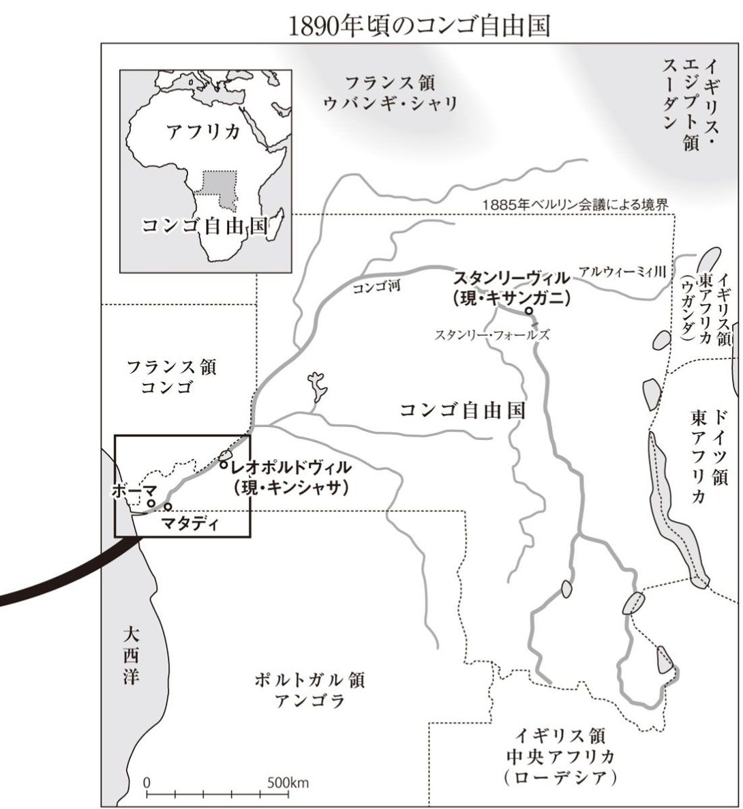
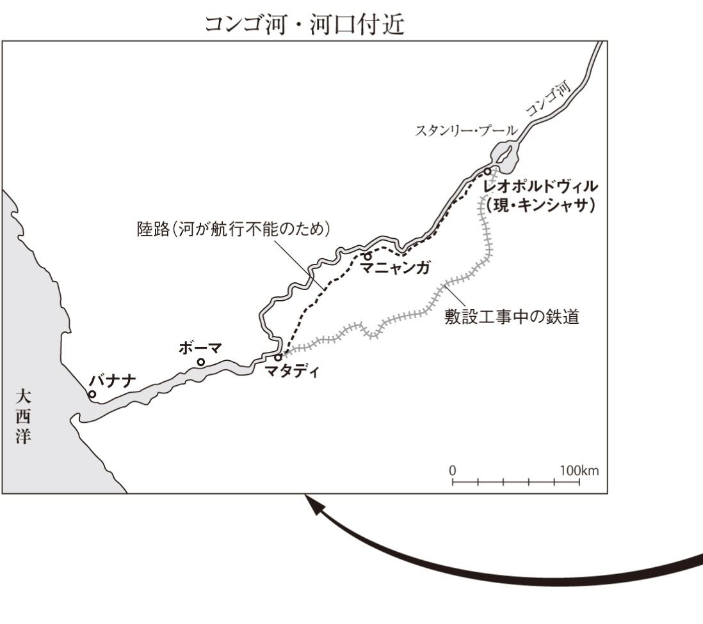
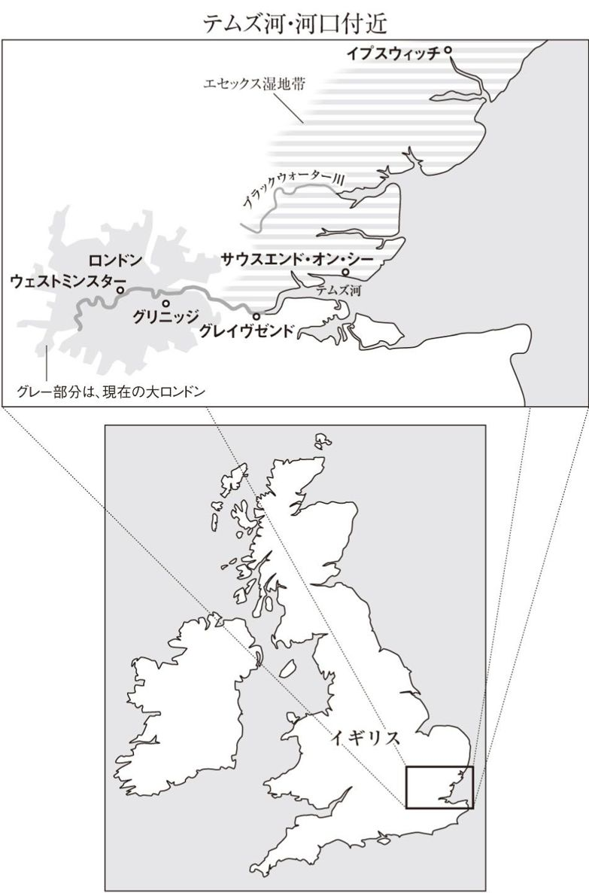

| 闇の奥 | |
| コンラッド | |
| (2009) | |
闇の奥
コンラッド
黒原敏行訳
Title: HEART OF DARKNESS
1899
Author: Joseph Conrad
◎ご注意
本作品の全部または一部を無断で複製、転載、改竄、公衆送信すること、および有償無償にかかわらず、本データを第三者に譲渡することを禁じます。
個人利用の目的以外での複製等の違法行為、もしくは第三者へ譲渡をしますと著作権法、その他関連法によって処罰されます。



1
二本マストの遊覧ヨット、ネリー号は、船首の錨をおろし、帆布一枚はためかすことなく静止していた。今は満ち潮で、風はほとんどない。河をくだるなら、こうして船を停泊させて、潮が変わるのを待つほかなかった。
テムズの河口湾は、ここから果てしない水路が始まるというように、私たちの眼の前に延びていた。沖のほうでは海と空とが境い目なく溶け合っている。そこの光の広がりの中では、潮に乗ってのぼってくる平底帆船の、赤茶色のするどく尖った三角帆の群れも、ニスを光らせている斜桁も、止まっているように見えた。靄が漂っている岸辺の低地は海に向かって薄平たく消え入っていた。上流のほうを振り返れば、グレイヴゼンドの町の上は空気が薄黒く、さらにその向こうでは薄黒い空気が凝って陰鬱な闇となり、じっと動くことなく、地上最大の最も素晴らしい都市［ロンドン］の上にのしかかっているように見えた。
私たちをこの船に招待してくれた船長は、いくつかの会社で重役をしている人物である。船首に立って海のほうを見ているこの男の背中を、私たち四人は親愛の情をこめて眺めていた。河のどこを見ても、彼のうしろ姿ほど海と船の世界を強く感じさせるものはない。ちょうど水先案内人のようだが、水先案内人といえば、船員にとっては〝頼もしさ〟が服を着て歩いているようなものだ。そんな彼の職場がこの光り輝く河口湾ではなく、背後の憂鬱な闇の中にあるというのは実感が湧きにくかった。
すでにどこかで話したとおり、私たちには海という絆があった（1）。だから長く会わずにいても互いの心が離れてしまうことはなかったし、一人が長い体験談を語り始めたり、信念のようなものを語りだしたりしても、寛容な気持ちで聴いていられるのだった。仲間の一人、弁護士殿は、齢と徳を重ねた敬愛すべきご老体なので、この甲板に一枚だけある敷物に寝そべり、一つだけあるクッションを枕にしていた。会計士はすでにドミノの箱を出し、牌で積み木遊びのようなことをしている。マーロウは、船尾にあぐらをかいて坐り、後部マストにもたれていた。頰がこけ、顔色は黄味がかり、背筋がぴんと伸びている姿には、苦行僧の趣があり、両腕を脇に垂らして手のひらをこちらに向けているところは、異教の偶像に似ていた。船長である重役は、錨がしっかり効いているのを確かめると、私たちのいる船尾へやってきて腰をおろした。私たちは二言三言、とくに意味のない言葉を交わした。そのあとは、船上に沈黙がおりた。なぜか私たちはドミノのゲームを始めなかった。みんな何となく瞑想にふける気分になり、静かにあたりを眺めるほか、何もする気になれなかったのだ。一日は穏やかで澄みきった美しい光輝の中で終わろうとしていた。水面は穏やかに輝き、空は一片の染みも浮かべることなく優しい清浄な光を無限に広げていた。河の北に広がるエセックス地方の湿原を覆う靄は光沢のある薄絹のようで、その薄絹は内陸の樹の繁った高台から流れ落ちて、半透明のひだを岸辺の低地に垂らしていた。ただ西の河上のほうに垂れ込めた薄闇だけが、太陽が近づいてくるのに対して腹を立てているかのように、刻一刻と陰気な暗さを増してきた。
やがて、動いているとはわからないほどゆっくりと曲線を描いて降りてきた太陽が、ようやく空の低い所まで来て、まばゆい白から、輝きも熱もない鈍い赤に変わった。まるで人間の群れの上にのしかかっているあの闇に触れて息絶え、今にも消えようとしているかのようであった。
河と海にもみるみる変化が現われ、清澄さが輝きを失い、かわりに深みを増した。岸辺に住む人々に長く奉仕してきた老大河の水面は、陽の衰えにも泰然としてさざ波すら立てず、世界の果てまで続く水路にふさわしい静かな威厳をたたえて広がっていた。私たちはこの尊い流れを、訪れては過ぎ去る短い一日の生の夕陽ではなく、永遠に残る記憶の荘厳な光のもとに眺めた。私たちのように、いわゆる〝海を職場とする〟ことを敬意と愛着をもって経験した者には、テムズの河口湾を眺めて過去の偉大な精神を心に呼び起こすことはいともたやすいことだ。干満をくり返して休みなく奉仕を続ける大河の流れは、船乗りたちを憩いの場である家庭へ帰したり、闘いの場である海へ送り出したりしてきた記憶に満ちている。その流れはこの国が誇りとする男たちを一人残らず知り、彼らに奉仕してきたのだ。サー・フランシス・ドレイク（2）からサー・ジョン・フランクリン（3）に至るまでのそうした男たちは、その称号を持つ持たないに拘わらず、全員が騎士──海を遍歴する偉大な騎士たちであった。大河が運んだ船は、どれも夜の闇の中できらめく宝石のような名前を持っていた。丸みを帯びた船体いっぱいに財宝を詰めて帰還し、女王エリザベス一世じきじきの来訪を賜ったあと、偉大なる航海の物語から身を退いたゴールデン・ハインド号（4）。あるいは、これまた探検に乗り出していったが、ついに還らなかった軍艦エレバス号とテラー号（5）。テムズ河口の流れはそうした船と船乗りたちを知っていたのだ。彼らはデットフォード、グリニッジ、イアリスなどの港から出帆していった──探検家、植民者、海軍の艦艇、取引所に所属する会社の商船、船長、提督、東洋貿易にこっそり携わる〝もぐりの商人〟、東インド会社商船団から委託を受けた〝よろず商人〟。黄金を手に入れようとした者も、名誉を追い求めた者も、みなこの河の流れに乗って出発した。剣を帯び、しばしば松明を携え、この国の覇者の使いとして、また信仰の聖火の光を運ぶ者として。およそ偉大なるものはすべてこの河の引き潮に乗り、未知なる土地の神秘の中へと入っていったのだ！......人々の夢も、入植地の種も、帝国の萌芽も。
陽が沈んだ。河面に夕闇がおり、岸辺に灯火が点り始めた。干潟に三本脚で立つチャップマン灯台の輝きが強くなってきた。船の灯りが河面を移動している──流れをさかのぼり、あるいは下る灯りが点々と散ってたいそう賑やかであった。西の上流のほうを見ると、怪物じみた大都市のありかを示す不吉なしるしが空に浮かんでいた。陽のあるうちは例の陰鬱な闇、星が出始めてからは毒々しい色の灯火の滲みが、そのしるしだった。
「昔はこのあたりも」と不意にマーロウが口を開いた。「暗黒の土地だったんだ」
今でも〝海を職場としている〟のは彼だけである。有能な船員ではあるが、無理に難癖をつけるとすれば、典型的な船乗りではない。船乗りであると同時に、漂泊の人でもあるからだ。おかしなことを言うようだが、ほとんどの船乗りは出不精な生活を送っている。ものの見方や考え方はまさに定住者のそれなのである。船はすなわち家で、そこから出ることはない。海は祖国であって、やはりそこから離れることはない。船はどれも似たりよったりで、海は常に同じだ。身のまわりが変わらないせいか、異国の海岸も、異国人の顔も、さまざまに異なる風俗も、眼の前を通り過ぎていくだけで、神秘を感じることなどなく、高をくくってやり過ごしてしまう。船乗りにとって神秘的なものは海以外にはないからだ。海こそは自分たちの生殺与奪の権を握る女神であり、運命のごとく測りがたい。仕事のあと、陸にあがって港町をぶらついたり、軽く浮かれ騒ぎをやったりすれば、もうその大陸全体の秘密を知った気になり、その秘密のことも、大抵は知るほどのこともなかったと見切ってしまうのだ。船乗りの長い体験談というやつは実に単純なもので、胡桃の実が殻の中に入っているように、意味は話の中にきちんとおさまっている。だがマーロウは、そんな船乗りの典型から外れているのだ（といっても長々と体験談を聴かせること自体は好きなのだが）。彼の場合、話の意味は、胡桃の実のように殻の中にあるのではなく、外にある。強い光のまわりに靄のような光が生じるように、意味は話から滲み出して、その話を外側から包む。ちょうど月が幽霊のようにおぼろに霞む時、ぼうっとした暈がその周囲を包むように。
私たちは今のマーロウの言葉に驚かなかった。いかにも彼の言いそうなことである。だから黙ってその言葉を受け取った。うーんと唸る者すらいなかった。マーロウはおもむろにあとを続けた──。
「今俺はうんと古い時代のことを考えていた。ローマ人が初めてこの土地へやってきた千九百年前のこと──それはついこのあいだのことだが......それ以来、この河からは光が出発していった──光じゃなくて騎士たちだろうって？ そのとおり。でもそれは燎原の火のような、雲の中でひらめく稲光のようなものだった。俺たちはその光のひらめきの中で生きている──地球が回りつづけるかぎり、その光には消えないでもらいたいもんだな！ が、それはともかく、闇はついこのあいだまでここにあったんだ。一つ想像してみてくれ。地中海に浮かぶ──あれは何といったかな──三段櫂船か、ああいう立派な軍船の副長の一人が、急に北方への赴任を命じられた時の気持ちをね。ガリア（6）の地を急いで横断したあと、小さな船を一艘任される。ローマ軍は──素晴らしく器用な連中だったんだろうな──そういう小型船を一、二カ月で何百艘も作ったようだ。物の本を信用すればだがね。そんな小型船の船長となった男が、この地の果てにいると思ってくれ。鉛色の海、煙色の空、六角アコーディオンの蛇腹みたいにすぐぐにゃりと曲がりそうな頼りない船──そんな船で河をさかのぼって、物資を運んだり、命令を伝えたりする。砂州、湿原、森、蛮族──文明人の口に合う食べ物はごくわずかで、飲み物はテムズの水だけ。ファレルノ葡萄酒なんて上等なものはなく、陸にあがっても一杯やる場所はない。原始の自然のところどころに軍の駐屯地が埋もれているだけだ。干し草の山の中の針のようにね。寒さ、霧、嵐、病気、僻地勤務の侘しさ、死──死は空気の中にも、水の中にも、森の中にも潜んでいた。きっとこの地で大勢が死んだはずだよ。もっとも──われらが船長はうまくやっていたとしておこうか。とてもうまくやっていたとね。わが身の不遇をさほど嘆きもせず、故郷に帰ったらここでの苦労を自慢してやろうくらいに思っていた。このローマ人たちは男らしく闇と向き合ったんだ。たぶんわれらが船長は、いずれラヴェンナの艦隊あたりに栄転できるかもしれないと、その機をうかがうことでわが胸を励ましたんだろう。ローマに有力者の知り合いがいたとすれば、あとはここの過酷な気候に耐えるだけだからね。あるいはまた、トーガ（7）をまとった育ちのいい若いローマ市民のことを想像してみてくれ。この青年──サイコロ賭博でもやりすぎたか──身代を立て直そうと、新任の総督だか、収税官だか、商人だかの一行に加わってこの土地へやってきた。湿地に上陸し、森を抜けて、どこか内陸の駐屯地にたどり着く。そこで青年は野蛮さが、完全な野蛮さが、自分を取り巻いているのを感じるんだ──魔境ともいうべき原始の自然が持つあの神秘的な生命が、林や密林や蛮人どもの心の中でうごめいているのをね。この神秘には加入の儀式なんてない。青年は不可解なものの只中で生きなければならない。この不可解なものは厭わしいものでもある。しかしある種の魅力もあって、それが心に働きかけてくる。ほら、忌わしきものの魅力というやつだよ。さあ想像してみてくれ。ふくれあがる後悔、逃げだしたいという欲求、無力な嫌悪感、諦め、憎悪」
マーロウは間を置いた。
「しかしだ」とふたたび話し始めた。あぐらをかき、片腕をあげて肘を曲げ、掲げた手のひらをこちらに向けている姿は、教えを説く仏陀のようだった。もっとも着ているのは洋服で、蓮の花の上に坐ってはいなかったが──。「われわれなら必ずしもそんな心境にはならないだろうな。われわれを救ってくれるのは効率──効率を追求する懸命の努力だ。ローマ人は大した連中じゃなかった。とても植民地経営者とは言えなかった。ただ搾り取るだけ。それに尽きたんじゃないかと思う。彼らは征服者であって、征服するには腕力があれば足りた。腕力なんて別に自慢するほどのものじゃない。たまたま相手が弱いからこっちが勝つだけのことだ。とにかく手に入れたいものを分捕る。要するに強盗、要するに残虐な大殺戮。彼らはそれを闇雲にやった──闇と渡り合うのにふさわしいやり方さ。征服というのはほとんどの場合、われわれとは膚の色が違い、鼻がちょっとだけ低い連中から土地を巻きあげることで、見て気持ちのいいものじゃない。その醜悪さを償えるものは、理念だけだ。背後にある理念。きれい事の建前じゃない、一つの理念。そしてその理念に対する無私の信念。その前にひざまずき、頭を垂れ、供物を捧げられるような何か......」
マーロウは言葉を切った。いくつもの灯りが河面を滑っていった。小さな緑色の灯り、赤い灯り、白い灯り。灯りが灯りを追いかけ、追いつき、一つになり、すれ違い──それからゆっくりと、あるいは早足で、別れていく。大いなる都市の河は眠らず、夜が更けても交通を絶やさない。私たちは話の続きを辛抱強く待った──満ち潮が終わるまでは何もすることがないのである。ところがマーロウは随分長いあいだ黙り込んでから、ためらいがちに話を再開した。「君らも憶えているだろうけど、俺もしばらくのあいだ河船の船長をやったことがある」それを聴いた私たちは、どうやら潮が引き始めるまで、例によってマーロウの結論のない体験談を一つ拝聴する運命が定まったらしいと悟った。
「俺としてはなるべく俺個人の話で君らをうんざりさせたくない」とマーロウは続けたが、今の言葉には、聴き手が何を一番聴きたがっているかをわかっていないという多くの話し手の弱点が表われていた。「でもこの体験が俺に与えた影響を理解してもらうには、俺がどういうわけであそこへ出かけ、何を見たか、どんな風にあの河をさかのぼって、あの場所へ行き、あの人物に会ったかを、知ってもらう必要があるんだ。あそこは船で行ける一番遠い地点であり、俺にとっては最大の人生経験を得た場所だった。それは俺のすべてに──俺の物の考え方に──一種の光を投げかけてくるような気がした。それはひどく冥い──情けない経験でもあって──素晴らしいとはとても言えず──あまりはっきりとした経験でもなかった。そう、あまりはっきりとした経験じゃない。それでも、一種の光を投げかけてくる経験のように思えるんだ。
憶えてくれているだろうが、当時の俺はロンドンに戻ってきたばかりだった。インド洋、太平洋、東シナ海、南シナ海と、東洋のお決まりの所を六年ばかりさんざんうろついてきたあとだ。しばらくぶらぶらして、君らの職場へ行って仕事の邪魔をしたり、家へ押しかけたりしたもんだ。まるで君らを啓蒙する使命を天から授かっていると言わんばかりにね。しばらくはそれでよかったが、そのうち休養にもうんざりしてきたから、乗り込める船を探し始めた──これは世界一難しい作業だね。船のほうじゃこちらを見向きもしてくれない。船探しにもだんだんうんざりしてきた。
ところで俺は、子供のころ、地図がとても好きだった。南アメリカ、アフリカ、オーストラリア。何時間眺めても飽きなかった。輝かしい探検を空想したものだ。あの当時は地上に空白地帯がたくさんあったが、とくに気をそそる場所があると（というか、どの場所もそうだったんだが）、指でそこを押さえて、大人になったらここへ行くぞと呟いたものだった。そう言えば北極もそうだったな。あそこはまだ行ってないし、今はもう行くつもりもないがね。魅力が失せたというのかな。北極を別にすれば、やっぱり赤道の近くが多かった。北半球、南半球、緯度もさまざま。そのうちのいくつかには実際に行ったが......まあ、その話はさて措いて。ともかくそういう場所の中に──一番大きな、いわばとびきりの空白地帯があって──俺は猛烈に憧れたわけなんだ。
もちろん、俺が出かけたころにはもう空白地帯じゃなくなっていた。その後地図には河や湖や地名が書き込まれていった。そこはもう少年を華麗な夢想に誘う、心躍る神秘に満ちた真っ白な部分ではなくなっていた。暗黒の地になっていたんだ。だが、注目すべきはそこに一本の大河が流れていたことだ。途方もなく大きなその河は、地図で見ると、長々と伸びた巨大な蛇に似ていた。大蛇は頭を海に浸け、曲がりくねった長い胴体を広大な土地に休め、尻尾を内陸の奥深くに消え入らせている。とある商店の飾り窓にその地図を見た時、俺は蛇に魅入られた鳥のようになった──お馬鹿な小鳥ちゃんにだ。そして俺は憶い出した。この河の流域で商売をしている大きな貿易会社があったな、と。ああ、そうだ！ こんなお水がたっぷりの河を行き来するには何かの乗り物が必要だろう──そう、蒸気船が！ そういうものの船長になるのも悪くない。俺はまたフリート街を歩きだしたが、その考えを振り払うことができなかった。まったく蛇に魅入られてしまったんだ。
その貿易会社は、ヨーロッパ大陸の会社だったが、俺には大陸に大勢親類がいた。向こうのほうが物は安いし、見かけほど酷い所じゃないというんだね。
でまあ、白状すれば、親類の皆様におすがり申しあげたわけだ。このことからして、俺には新たな出発さ。そんなやり方で何かを手に入れたことはなかったからね。いつだって自分の足で自分の行きたい道を進んだものだ。自分でも信じられなかったよ。でも──あれだ──何が何でも行きたかったわけだ。だから親類にせがんだ。男はみんな、『ふうむ、なるほど』なんて言うだけで何もしてくれない。そこで──さあ、信じられるかい──ご婦人がたにすがってみたんだ。この俺、チャーリー・マーロウが、ご婦人がたに骨を折らせた──職を手に入れるためにね。いやはや！ まあ、それだけ駆り立てられていたんだな。俺には叔母がいた。心の熱い人だった。叔母はこんな手紙をくれた。『とてもいいことね。貴方のために何でもして差しあげましょう。素晴らしい考えです。私は会社のとても偉い方の奥様を存じあげていますし、たいそう顔のきく方も知り合いにいます』てな調子のね。甥っ子が蒸気船の船長さんになりたいのなら、なれるように、とことん世話を焼いてくれようとしたんだ。
もちろん俺は採用された。それも随分と早く決まった。どうやら蒸気船の船長が一人、原住民とのいざこざで殺されたという報せが会社に入っていたらしい。俺にとってはまたとない機会で、ますます行きたい気持ちが募った。俺がその船長の死体の回収を試みたのは、それから何カ月もたってからだが、その時に聴いた話では、いざこざの原因は雌鶏をめぐる誤解だったそうだ。そう、二羽の黒い雌鶏だ。船長はフレスレーヴェンというデンマーク人で、雌鶏の売り買いのことで何かごまかされたと思った。そこで岸にあがって、村長を棒でさんざんにぶちのめした。その話を聴いても俺は全然驚かなかったね。フレスレーヴェンは人並み外れて気の優しい温厚な男だったと言われた時もだ。きっとそういう男だったんだろう。ただ、向こうでかの崇高な事業に従事して、もう二年になっていた。たぶん何らかの形で自尊心を示しておきたい気分になってしまったんだろうな。それで黒人の年寄りを容赦なくぶん殴った。見ていた大勢の村人はびっくり仰天だ。そのうち一人の男が──これは村長の息子だったそうだが──親父さんの悲鳴に堪らなくなって、槍でおっかなびっくり白人を突く。これが二つの肩骨のあいだにずぶりと入ってしまった。村人は大変なことになると震えあがり、全員森の中へ逃げ込む。蒸気船のほうも泡を食って、とっとと逃げだす。たぶん機関士が号令をかけたんだろう。その後しばらくフレスレーヴェンの死体は放っておかれた。俺が向こうへ行って、死んだ船長の靴を履く、つまり後任になるまではね。俺は死体をそのままにしておきたくなかった。やがてフレスレーヴェンに実際に会う機会が訪れた。あばら骨のあいだから草が高く伸びて、死骸は隠れていたが、骨は全部残っていた。倒れたあとも、超自然的な力を持つ白人の身体に触れる者はいなかったんだ。村はもぬけの殻だった。小屋は黒々と口を開け、腐り始め、崩れた柵の中で傾いでいた。なるほど白人を殺した罰として災難は確かに降りかかったようだった。村人は一人残らず消えていた。男も女も子供も、狂ったような恐怖に駆られて密林の中へわらわらと逃げ込み、二度と戻ってこなかったんだろう。例の雌鶏がどうなったかも俺は知らない。進歩の大義を掲げる連中がどさくさに紛れて持っていったのかもしれない。ともかくこの輝かしい一大事件のおかげで、俺は職を手に入れた。採用されますようにと、真剣に願い始める前にね。
それからばたばたと準備に取りかかって、翌々日にはイギリス海峡を渡っていた。会社に出頭して、契約書に署名するためだ。何時間もたたないうちに、ある都市に到着した。それはいつも俺に〝白く塗った墓〟（8）を連想させる都市（9）だ。ま、偏見だろうがね。会社は難なく見つかった。都市で一番大きな建物といってもよくて、俺が会った人は誰でも知っていた。海外で一つの帝国を運営して、貿易でじゃんじゃん儲けようとしていた。
深い影に浸された狭い人気のない通り、高い建物、ブラインドを吊るした無数の窓、死んだような静寂、道の敷石のすきまに生えた雑草、左右には馬車用の立派なアーチ形の門、正面の両開きの大扉が少し内側に開いている。俺は門の中へ入り、掃除は行き届いているが飾り気のまるでない、砂漠のように殺風景な階段をのぼって、最初に行き当たった扉を開けた。女が二人、太ったのと瘦せたのが、藁座の椅子に坐り、黒い毛糸で編み物をしていた。瘦せたほうが立って俺のほうへ歩いてきた──眼を伏せて編み物を続けながらだ──夢遊病者が近づいてきた時みたいに、俺が脇へよけようとしたちょうどその時、女は足を止めて眼をあげた。傘を包む袋みたいな簡素な服を着た女は、黙って身体の向きを変えて、俺を待合室に案内した。俺は名前を言って、部屋の中を見まわした。真ん中に樅材のテーブルがあって、壁沿いに簡素な椅子が並べてあった。壁に掛けられた光沢のある大きな地図を見ると、大陸が虹の色に塗り分けられていた。広々とした赤い部分（10）はいつ見てもいいものだ──実のある事業が営まれているからね。青い所もうんとある。あとは緑が少々、橙もちらほら。東海岸の紫色の所では、陽気な〝進歩の先兵〟たちが旨いビールを飲んでいるという具合。でも俺の行く所はそのどれでもない。行き先は黄色い部分で、大陸のど真ん中だ。例の河［コンゴ河］はそこを流れている──蛇のように魅力的で危険な河はね。おっと！ 扉が開いて、秘書の白髪頭が現われた。思いやり深そうな表情を浮かべ、細い人差し指で聖域へと招いた。執務室の中は薄暗く、真ん中にどっしりした机が据えてある。そのうしろから、フロックコートに包まれた青白いぶよぶよした物体が出てきた。これがお偉いさんだ。背はたぶん百六十五センチというところ。何百万人もの人間を支配しているお方だった。たぶん握手のつもりだろうが、おざなりに俺の手をとり、フランス語は達者なようだな、と、もそもそ呟いて、『道中ご無事で』と締めた。
四十五秒ほどで用はすんで、俺はまた思いやり深い秘書のいる待合室に戻った。秘書は何かしみじみと同情するような態度で書類に署名させた。いろんな条項の中に、会社の企業秘密を漏らすべからずというのもあったようだ。だから、今もそれはしないことにするよ。
俺は少しばかり不安になっていた。そういう堅苦しい手続きに慣れていないのと、何かこう不吉な雰囲気が漂っていたからだ。何らかの陰謀に巻き込まれるというか──よくわからないが──どこかまともじゃない。部屋を出る時は嬉しかったよ。外の部屋では二人の女が熱心に黒い毛糸を編みつづけていた。来客があると、若いほうが立って出迎える。年嵩のほうは椅子に坐ったままだ。布の室内履きを履いた足を足温器に載せ、膝には猫。糊のきいた白い布のキャップを頭に着け、片頰にいぼがあり、鼻先に銀縁眼鏡を載せていた。女は眼鏡を通さず上眼づかいで俺を見た。そのすばやい、落ち着き払った無関心な眼つきに俺はうろたえた。あまり賢そうでない血色のいい若い男が二人案内されてくると、女はやっぱり訳知り顔に冷淡な一瞥を投げる。女は、二人の若者のことも俺のこともすべて承知という感じで、何だか薄気味悪くなった。神秘的な力で人の運命を見通せる女のように思えたんだ。遠い国へ出発したあとも、あの闇の入口を護っていた二人の女のことをよく憶い出したよ。棺にかける温かい布でも作るつもりか、黒い毛糸で編み物をしながら、一人は次々と男たちを未知の世界へ案内し、もう一人はその陽気なまぬけ面の男たちを冷やかな、検めるような眼で見る。さらば、黒い毛糸を編む女たちよ。死にゆく者から別れのご挨拶を申しあげる。（11）あの女にじろりと見られた男で、そのあとまたあの女にお目見えできたやつはそう多くはいないはずだ。とても半分はいかないだろう。
まだ医者に診てもらう用が残っていた。『ほんの形だけです』と秘書は言った。いろいろ面倒なことをさせて申し訳ないと大いに同情する風だった。まもなく帽子を左眉が隠れるほど目深にかぶった若い男がやってきた。たぶんこれも社員だろう。もちろん社員がいるのは当然なんだが、あの会社はまるで死人が住む町の家みたいな雰囲気だったんだ。若い社員は上の階から降りてくると、先に立って歩きだした。服はくたびれていて、着方もだらしない。上着の袖にはインクの染みがついている。古靴の爪先みたいな顎の下には、大きなよれよれのネクタイが結ばれていた。医者との約束の時間にはまだ少し間があるというので、一杯やらないかと誘ってみると、男は急に陽気になった。坐ってベルモットを飲みながら、男は会社の事業を絶賛した。そのうち俺がさりげなく、それじゃ君がまだ向こうへ行かないのは意外だねと言うと、男はたちまち醒めた態度になった。『プラトン、弟子たちに向かいていわく。私は見かけほど愚かではない』と教訓でも垂れるように言って、一大決心をしたように酒を飲みほした。俺たちは腰をあげた。
年寄りの医者は俺の脈を取るあいだ、ほかのことを考えているように見えた。だが、『よし、これなら向こうでも大丈夫』と呟いたあとは、若干の熱意を示して、頭の寸法を測らせてもらえないかと訊いてきた。ちょっとびっくりしたが、どうぞと答えると、おもむろにノギスのような器具を取り出して、頭の前後の幅やら何やら、いろんな方向から寸法を測り、丁寧にノートを取った。不精髭を生やした小柄な男で、くたびれた仕事用の上っ張りを着て、室内履きを履いていた。人畜無害なじいさんだと俺は思ったね。『わしは科学の進歩のために、向こうへ出かける人たちにいつも頭蓋骨の寸法を測らせてくれるように頼むんだよ』と医者は言った。それで俺が、『帰ってきたらまた測るんですか』と訊くと、『いや、二度と会うことはないな。それに変化は頭の内側で起こるからね』とのたまう。そして気の利いた冗談でも言ったみたいににやりと笑うんだ。『そうか、君も向こうへ出かけるか。素晴らしい。興味深いことでもある』医者は俺を調べるような眼で見て、またノートに何か書く。それから、『君の身内に精神異常の人はいるかね』とさらりと訊いてきたから、俺はむっとしてしまった。『その質問も科学の進歩のためですかね』と言ってやると、俺の腹立ちに気づいた様子もなく、『個々人の精神に起きる変化を現地で観察できたら、科学的に興味深いんだが......』と来る。俺が遮って、『あなたは精神科医ですか』と訊くと、この変な先生、『医者はみんな精神科医だよ──多かれ少なかれ』と澄ましている。『わしにはちょっとした仮説があってね。君らのような向こうへ出かける諸君がその証明に役立ってくれるはずなんだ。それがあの広大な属領からわが国に入ってくる莫大な収穫物の、このわしへの配当というわけだ。金儲けはほかの人たちに任せるよ。いろいろ訊いて申し訳ないが、何しろ君はわしが観察する初めてのイギリス人なものだから......』俺はすかさず、でも典型的なイギリス人じゃありませんよと注意してやった。『もしそうなら、こうしてあなたと話なんかしないでしょうよ』すると先生、『なかなか含蓄のある言葉だが、たぶん見当違いだね』と言ってふふんと笑う。『強い陽射しも要注意だが、それ以上に癇癪を起こさんよう気をつけたまえ。さようなら。英語では何と言ったかな。グッドバイか。そうそう！ グッドバイ。アデュー。熱帯ではとにかく心を穏やかに保つこと』......警告の仕草で人差し指を立てて......『穏やかに、穏やかに。さようなら』
あと一つ残ったのは──あの素晴らしい叔母への挨拶だった。会いにいくと、叔母さん、得意満面だ。お茶をご馳走になったが、あのあとしばらくは、ああいうまともなお茶は飲めなかった。いかにも淑女の客間といった心休まる部屋で、暖炉のそばに坐って、長い静かなお喋りを愉しんだ。いろいろ話すうちにわかってきたが、俺は会社のさるお偉方の奥様や、そのほかびっくりするほど大勢の人に、並外れた才能の持ち主として紹介されたらしかった。会社の至宝となること請け合いの、そんじょそこらにはいない逸材という触れ込みでね。やれやれ！ 俺の仕事は、玩具の笛みたいな汽笛を鳴らすちゃちな河蒸気の船長さんだというのに！ そんな俺でも、どうやらいわゆる〝働き手〟の一人ということになるらしい。〝光の使者〟だか、下っ端のほうの〝使徒〟だかにね。当時はそういうたわごとが盛んに活字になったり、人の口の端にのぼったりしたからね。わが素晴らしき叔母もそんな欺瞞の風潮に流されていたということだ。『無知蒙昧な人たちを忌わしい風習から引き離すため』なんて言いだすから、俺はだんだんむずむずしてきて、よせばいいのに、やんわりと、会社の目的はお金儲けですよと言ってみた。
すると叔母さん、『まあ、チャーリー、あなたは〝働く者が報酬を受けるのは当然〟という聖書の言葉（12）を忘れているわね』と明るくおっしゃる。女がいかに真実とは無縁か、実におかしなものだよ。女ってやつは女にだけ通用する世界で生きている。現実にはそんな世界は今まで存在しなかったし、これからも存在するはずがない。それはあまりにも美しすぎる世界で、かりに新しく創りあげたところで、初日の夕暮れには崩壊しているだろう。俺たち男は、世界が創造された日から、ある浅ましい事実と何とか折り合いをつけて生きてきたわけだが、その事実が美しい世界をぶち壊しにしてしまうんだ。
それから叔母に抱きしめられ、やれネルの下着を着ろの、まめに手紙をくれのと念を押されたあと、俺はおいとました。表の通りに出た時には──なぜだか知らないが──詐欺師になったような妙な気分だった。どうも変な話だが、それまでの俺なら、二十四時間以内に出発と言われても、普通の人が通りを渡る時より軽い気持ちで、世界のどこへでも出かけていったんだ。ところがこの時は、ありきたりな出発を前にして──ためらったとは言わないが──はっとして一瞬足を止めてしまった。強いて説明するなら、ほんの一、二秒のあいだ、自分はこれから大陸の真ん中じゃなくて、地の奥底へ出かけようとしているような気がしたんだ。
俺はフランスの汽船で出発した。向こうの大陸［アフリカ大陸］では港という港に寄っていったが、俺の見たかぎり、目的は兵士と税関吏を上陸させることだけだった。俺は海岸を眺めた。船の横を通り過ぎていく海岸を眺めていると、謎をかけられているような気がしてくるものだ。眼の前の陸地が微笑み、眉をひそめ、誘いかける。雄大だったり、醜悪だったり、平凡だったり、荒涼としていたりする風景が、沈黙したまま、〝さあ答えを見つけにおいで〟と囁きかけてくる。あの大陸の海岸にはほとんど特徴がなく、まだ出来上がっていく途中のような生硬な険しさがあった。白波に縁取られた海岸線が、定規で引いたようなまっすぐな線を描き、ほとんど黒に近い濃い緑色の巨大な密林が、忍び寄る靄で輝きが曇っている青い海に沿って、遥か遠くまでずっと続いていた。陽の光は強烈で、陸地は蒸気の露を光らせ、滴らせているように見えた。ところどころに白っぽい灰色の斑点が現われる。それは白い波に紛れて見える集落で、旗が一つ翻っていたりする──すでに数百年の歳月を経ている入植地だが、いまだに背後の手つかずの森に刺したピンの頭くらいにしか見えない。汽船は波を蹴立てて停止して、艀に兵士をおろし、またしばらく進んでは、今度は税関吏をおろす。あんな神に見捨てられたような未開の魔境でも関税を取り立てるのか、トタン造りの小屋一つに旗竿一本が樹林の中に埋もれている。それからまた兵士をおろす。その連中が税関吏を護ってやるのだろう。時に磯波に呑まれて溺れ死ぬこともあったそうだが、そんなことは誰も気にしていないようだった。彼らを放り出すみたいに艀におろして、さっさと先へ進んだ。
来る日も来る日も、陸地は同じように見え、船はまるでまったく動いていないかのようだが、それでもちゃんといくつもの場所を──交易所を──通り過ぎていった。グラン・バッサムだのクライン・ポポだの、俗悪な背景幕の前で演じられる下品な茶番劇にでも出てきそうな名前の交易所だ。船旅の退屈、接点のないほかの客とのよそよそしい関係、油を流したような気怠い海、いつ見ても地味にくすんだ陸の眺め、そんなあれこれが、俺をうら寂しい無感覚の罠に落とし込み、物事の真相から遠ざけているような気がした。たまに岸辺の波音が届いてくると、兄弟の声でも聴いたように嬉しくなる。理由と意味がちゃんとある自然な出来事だからだ。ときおり岸から漕ぎ出してくる小舟が、つかのま現実に触れさせてくれた。小舟を漕ぐのは黒い連中で、遠くからでも白眼がぎろり、ぎろりと見える。叫び、歌い、身体を汗で濡らしている。その連中ときたら──顔はグロテスクな仮面みたいだが、あの骨格、筋肉、野性的な生気、動きにみなぎる強い活力は、岸辺の白波と同じくらい純粋かつ自然で、そこにいることに言い訳が要らない存在だ。見ていると大いに元気が出てくる。しばらくは俺もまだ単純明快な現実の世界にいると実感できたが、この実感は長続きしなかった。何かが起きて、その気分を脅かして追い払ってしまったのだ。一度、沖合に停泊している軍艦を見たのを憶えている。陸には小屋一つないのに、軍艦は森の中へ砲弾を撃ち込んでいた。フランスがその辺でまた戦争でもやっていたんだろう。軍艦旗はぼろ切れみたいにだらりと垂れ、低い艦体の横腹には二十センチ砲の長い砲身がずらりと並んでいた。油のようにとろりとした海が艦体を物憂げに持ちあげては降ろして、細いマストを揺らしている。そして天と地と海のがらんとした広がりの中で、その軍艦は不可解にも陸に向かって砲撃を加えているんだ。ポン、と二十センチ砲がはじけると、小さな炎が出てすぐに消え、白い煙もまもなく消える。ちっぽけな砲弾が弱々しい叫びを漏らしながら飛んでいくと......何も起きない。起きるはずがない。その一連の過程にはどこか愚かしい、憐れを催す冗談のような感じがあった。汽船の乗客の誰かが大まじめに、どこか見えない所に原住民が──実際には〝敵〟と呼んだんだが！──潜んでいる陣地があるんだと断言したが、それでも愚劣な感じは消えなかった。
俺たちの船はその軍艦に彼ら宛ての郵便物を渡すと（そのぽつんと海に浮かんだ軍艦の艦内では一日に三人くらいずつ熱病で死んでいくという話だった）、さらに先へ進んだ。さらにいくつか茶番劇めいた名前を持つ場所に立ち寄った。それらの場所では死と交易の陽気なダンスが、蒸し暑い地下墓地に満ちているような澱んだ土臭い大気の中で続けられていた。いびつな形の海岸は自然が侵入者を追い払うために用意したかのような危険な磯波に縁取られていた。汽船は生の中にある死の流れともいうべき河にも出入りしたが、河岸は腐ったように泥となって崩れ、水はへどろとなってマングローブの林に侵入していて、ねじ曲がったマングローブの木は、絶望と無力感のきわみで身悶えしながらこちらに摑みかかってくるように見えた。どこにも長居はしないので特別な印象を受けた場所はないが、漠然とした不快な疑念が俺の中で募ってきた。まるで悪夢の兆しに気が重くなる巡礼の旅のようだった。
三十日以上たってようやく、めざす大河の河口が見えてきた。汽船は政庁のある町の港に錨をおろした。だが、俺の仕事はさらに三百キロほど奥へ入らなければ始まらない。というわけで、準備ができしだい、まずは五十キロほど上流の地点に向かって出発した。
足は小型の遠洋航海用汽船だ。船長はスウェーデン人で、俺が船乗りだと知ると、操舵室へ招いてくれた。瘦せた色白の若い男で、むっつりしていて、髪を長めに伸ばし、少し引きずるような足取りで歩いた。ちゃちな港を出ると、小馬鹿にするように岸のほうへ頭をひょいと傾け、『あの町に住んでたんですか』と訊いてきた。『そうだ』と答えると、『あそこの役人さんたちは大した連中だ──そう思いませんか』と正確無比な英語で苦々しげに続けた。『月に何フランかの袖の下でいろいろやるんだから呆れちまう。ああいう連中が奥地へ行ったらどうなることやら』と言うから、近々それを見ることになりそうだと答えると、『へえ、そうなんですか！』と声を高め、前方から眼を離すことなく、足をひきずり室内を斜めに横切りながら、『でも、油断は禁物です』とさらに続ける。『こないだ乗せた人なんか、途中で首を吊ったというから。あの人もスウェーデン人だと言ってたが』『首を吊ったって。そりゃまたどうして』と俺は訊いた。船長は警戒怠りなく前方に注意しながら答えた。『さあ、どうしてだか。その人には陽射しが強すぎたか、この国が烈しすぎたか』
ようやく河がまっすぐ延びている所に出た。岩の崖が現われた。岸辺には掘り返した土の山が並び、丘の上には何棟かの家が見える。それ以外にはトタン屋根の小屋が土の山のあいだに建っていたり、丘の斜面にしがみついていたりした。河の上手からは早瀬の音がたえまなく流れてきて、人里なのにひどく荒廃して見えるこの一帯の上に漂っていた。大勢の人間が──そのほとんどは裸に近い黒人だが──蟻のように動きまわっていた。河に突き出た桟橋が一つ。ときおり陽射しが不意に強くなって、すべてを眩しい光の中に浸してしまう。『あれがお宅の会社の出張所です』とスウェーデン人の船長が指さしたのは、岩の斜面に建つ三棟の兵舎のような木造の建物だった。『荷物はあとで届けさせますから。箱が四つでしたね。それじゃ、気をつけて』
岸にあがると、ボイラーが一つ草地に転がっていた。丘を登る小道が見つかった。小道はいくつかの巨石のほか、小さなトロッコも迂回していた。トロッコはひっくり返って車輪を上に向けている。車輪の一つは外れていた。まるで何かの動物の死骸のように見えた。朽ちかけた機械の断片や、錆びたレールの山にも出くわした。左手に木立があり、その日陰で黒いものがかすかに動いているように見えた。俺はよく見ようと瞬きをした。小道は急勾配だ。右手のほうでラッパが鳴り、黒人たちが駆けだすのが見えた。重く鈍い爆発音がして地面が震え、崖から白い煙がぼっと出たが、それだけだった。崖の表面には何の変化もない。どうやら鉄道を敷こうとしているらしいが、そもそも崖が邪魔になっている様子はない。なのに、やっている作業は無意味に思えるこの爆破だけだった。
うしろでチャラ、チャラと小さな音がしたので、振り返ってみた。六人の黒人が縦一列に並び、苦しそうに小道をのぼってきた。背中をまっすぐ起こして、ゆっくりと。頭の上には土をいっぱい入れた小さな籠を載せている。チャラ、チャラという音は足の運びと拍子が合っていた。腰に巻いた黒いぼろ切れの、うしろに垂れた部分が尻尾のように揺れた。あばら骨がくっきり浮き出し、手足の関節はロープの結び目みたいだ。どの男も鉄の首輪をはめられ、全部が一本の鎖でつながれている。そのたるんだ鎖が揺れて、規則的に鳴るのだった。崖のほうでまた爆破音がした。それで俺はあの陸地に砲弾を撃ち込んでいた軍艦のことを憶い出した。あの砲撃音もこの爆破音も、不吉な響きの音だった。だが、この黒人たちは、どう想像を逞しくしても敵とは呼べないだろう。彼らは罪人と呼ばれていた。侵害された〝法〟が砲弾のように黒人たちに襲いかかったわけだが、彼らにとってそれは海の向こうからやってきた不可解な神秘なのだ。黒人たちはそろって瘦せた胸を上下させてあえぎ、大きく開いた鼻の穴を震わせ、前方の登り坂を無表情に見つめていた。俺のすぐ脇をすり抜けていく時には、俺に目もくれず、不幸な蛮人に特有のあの死んだような完全な無関心を示していた。この未開の黒人たちのうしろには、教化された黒人が一人ついている。今稼働中の新しい力の産物ってわけだ。この男はライフル銃の中ほどを摑んで、意気消沈した風情で歩いていた。制服の上着はボタンが一つ取れている。小道の行く手に俺がいるのを見ると、さっと銃を肩付けして構えた。これは一応の用心のためだ。離れた所からだと、白人はみんな同じように見えて、どういう人間だかわからないからね。男はすぐに安心したらしく、白い歯を見せて悪党めいた笑いを大きく浮かべて、自分に任されている黒人たちをちらりと見た。俺のことを高貴な任務の仲間とみなしてくれたようだ。まあ確かに俺も、高邁かつ公正な大義に加担していたわけだがね。
俺は小道を登らず、左手の斜面を降りてみた。鎖でつながれた囚人たちが見えなくなってから、丘に登ろうと考えたんだ。知ってのとおり、俺はとくに温厚な男でもない。身を護るためには喧嘩もやってきた。抵抗するだけじゃなくこちらから攻撃することもある──攻撃も抵抗の一手段だからね──荒っぽい船乗りの世界に身を置くからには、どのくらいが穏当かなんて、ちまちま計算なんかしちゃいられない。俺は悪魔のように暴力的なやつ、強欲なやつ、情欲の虜になったやつをこの眼で見てきた。しかし、そういうやつらは力が強く、欲望をたぎらせ、眼を血走らせた悪魔どもで、そいつらが支配してこき使っていたのは一人前の男どもだったんだ。だが、あの丘へのぼる小道に立って、眩しい陽射しのもとで俺が予感したのは、俺がこれから知り合いになるのは、悪魔は悪魔でも、欲張りで無慈悲な愚行にふける、軟弱で、きれい事の建前を言うのが得意な、眼差しに力のない悪魔だろうなということだった。そいつがどれだけ狡賢いやつかも、数カ月後、千キロ以上奥へ入ったところで、俺は知ることになった。しばらくのあいだ、俺は警告でも受けたみたいに、ぞっとして立ち尽くした。それから斜面を斜めにくだって、さっき見た木立のほうへ足を向けた。
俺は斜面に掘ってある大きな穴をよけて通った。何の目的で掘った穴かは見当もつかなかった。石切り場でも、砂の採取場でもない。ただの穴。ひょっとしたら罪人たちにとにかく何かすることを与えるという人道的な措置だったのか。さっぱりわからない。それから俺はごく狭い亀裂に落ちそうになった。丘の斜面にできた切り傷みたいなものだ。その亀裂には居留地で使うために持ち込まれた排水管が何本も落ちていた。壊れていないものは一本もない。どうやらわざと壊したようだ。俺はようやく木立にたどり着いた。ちょっと木陰を歩いてみるつもりだった。だが、中に入るとすぐ、冥い地獄の第何圏（13）かに足を踏み入れてしまったことに気づいた。近くに河の早瀬があるらしい。猛然と迸る水の、途切れることのない単調な音が、木立の中の、そよとも風が吹かず、一枚の葉も動かない、死を悼むような静まりを、不思議な響きで満たしている──まるで地球がすさまじい速度で宇宙の中を飛ぶ音が、不意に聴こえ始めたかのようだった。
黒い人影が、木々のあいだにうずくまり、横たわり、坐り、幹にもたれ、地面に這いつくばっていた。薄暗い明かりの中で、半ば浮かびあがり、半ば闇に消されているそれらの人影は、ありとあらゆる苦痛と諦めと絶望の姿態を示していた。崖でまた爆薬が炸裂し、足の下で地面が小さく震える。事業はなおも進行中だ。事業！ その木立は事業を手伝った人たちの一部が死ぬために引きこもる場所なのだ。
彼らがゆっくりと死につつあるのは、はっきりとわかった。敵でもない、罪人でもない。今はもうこの世で生きている者とも言えない。緑がかった薄闇の中でごちゃごちゃに入り乱れて横たわる病気と飢えに冒された黒い影にすぎなかった。海沿いの各地から合法と不法の色合いもさまざまな年季契約で連れてこられ、身に合わない環境に置かれ、慣れない食べ物を与えられて、病気になって効率よく仕事ができなくなると、作業場から這い出して身を休めることが許される。この瀕死の影たちは空気のように自由で、空気のように薄かった。暗さに慣れてくると、木々の下で光っている眼が見分けられてきた。視線を下に落とすと、俺の手のそばに顔が一つ見えた。黒い骸骨のような身体が長々と横たわり、片方の肩だけを木にもたせかけている。瞼がゆっくりとあがり、落ち窪んだ眼が俺を見あげた。大きな眼は虚ろで、盲目かとも思わせる。眼球の奥に白い光がちらついていたが、やがて緩慢に消えた。まだ若そうな男で──ほとんど少年のようだったが──わかるだろう、あの連中の歳は俺たちにはわかりにくい。俺はポケットに入れてあった、あの気さくなスウェーデン人船長にもらったビスケットをやることくらいしか思いつかなかった。男の指がゆっくりとビスケットをつまんだ──それ以外の動きはしないし、もうこちらを見ることもなかった。首に白い毛織り布を巻いている──なぜだ？ そんなものをどこで手に入れた？ 何かの記章か──飾りか──お護りか──贖罪のしるしか？ 何か謂れのあることなのか？ この海の向こうから来た白い毛糸の織物が黒い首に巻かれているのには、ちょっとびっくりさせられた。
その木の近くには、もう二つ、坐り込んで身体を鋭角に折り、両膝を胸に引きつけている人影があった。一人は顎を膝頭に載せ、虚ろな眼をしていて、見るに堪えないおぞましい姿だった。その兄弟分の幽霊は、疲労困憊して打ちのめされたように、額を膝頭につけている。そのほかありとあらゆるねじ曲がった姿勢の男たちがあちこちに散らばり、まるで大虐殺か疫病の流行を描いた絵のようだった。怖ろしさに立ちすくんでいると、男たちの一人がむくりと起きて四つん這いになり、水を飲みに河のほうへ這っていく。手で水を掬ってぴちゃぴちゃ飲むと、身体を起こして日向に坐り、あぐらをかいた。しばらくすると縮れ毛の頭ががくりと胸に垂れた。
もう木陰の散策なんてやりたくない。俺は出張所のほうへ足を急がせた。建物の近くで一人の白人に出逢ったが、その意表をつく優雅な身なりに、最初は幻じゃないかと思ったほどだった。糊のきいた高襟、真っ白なカフス、アルパカの軽い上着に雪のように白いズボン、絹のネクタイには染み一つなく、靴はぴかぴかに磨かれている。帽子はかぶらず、髪をきれいに分けて油をつけた頭の上に、大きな白い手で緑の縞模様のパラソルをかざしていた。実に見事な身だしなみで、耳のうしろにはペン軸をはさんでいた。
俺はこの奇跡のような洒落者と握手をした。聴けば会社の主任会計士で、帳簿は全部この出張所でつけているという。『ちょっと新鮮な空気を吸いに』出てきたそうだが、何だか妙な言い草だ。こんな土地にいながら、ずっと引きこもって書類仕事をしているとでも言いたげな。この男のことは省いてもよかったんだが、あの当時の記憶と切っても切れない関係にある人物の名前を初めて聴いたのが、この会計士の口からだったんだ。それに俺はこの会計士を大したものだと思ったしね。あの高襟や幅広のカフスやきれいに梳かしつけた髪。確かに美容師のマネキンじみちゃいたが、風紀風俗の乱れがはなはだしいあの土地で、体裁を保っていたんだ。なかなか気骨があるよ。糊のきいた高襟のしゃれた礼装用シャツ、これは偉業と言ってもいい。こちらに来てもう三年近くになるという。どうしてそんなきれいな亜麻布のシャツを着ていられるのかと、あとで俺はつい訊いてしまったが、会計士殿、ぽっと頰を赤らめて謙虚な口振りでこう答えた。『出張所の雑用をやらせるのに、現地の女を一人教育したんですよ。仕込むのは難しかったです。何しろ働くのが嫌いでしたからね』つまり、この男は何事かを立派に成し遂げていたわけだ。そして会計士の職務に全身全霊を捧げていた。帳簿は完璧だったんだ。
でも、それ以外は随分とごたごたしていた──人も、物も、建物も。埃にまみれたがに股の黒人たちがぞろぞろやってきてはまた去っていく。粗末な綿製品や硝子玉や真鍮の針金といった加工製品が闇の深みへ持っていかれ、それと引き換えに貴重な象牙が少しずつ運ばれてくる。
出張所での待機は十日に及んだ──永遠とも思える長さだ。敷地内の小屋が住まいだったが、周囲がざわざわと落ち着かないので、ときどき会計士の事務所へ行った。壁には長い横板を張っているが、造りがずさんで横板どうしのあいだに隙間が出来ているので、丈の高い机についた会計士の首から踵まで、細い陽射しの横縞が映っていた。大きな鎧戸を開けなくても外が見える。事務所の中は暑かった。獰猛な翅音を立てて飛ぶ大きな虻は、ちくりではなく、ぶすりと刺してきた。俺は大抵床に坐ったが、会計士殿は一分の隙もない服装で（しかもかすかに香水の匂いすらさせて）高い丸椅子に腰かけ、倦まずたゆまず書類仕事を続けた。ときどき立って運動をやる。その部屋に病人（内陸で病気になった社員）を寝かせた寝台が運び込まれた時には、やんわりと不快感を示した。『どうもこう呻かれては気が散っていけない。それでなくてもこの気候だから、書き間違えないようにするのはひどく難しいのです』
そんなある日、会計士が顔もあげずに、『きっとあなたは奥地でクルツ氏に会うのでしょうね』と言ったのだった。クルツ氏とは誰かと訊ねると、一級社員だという。俺の拍子抜けした顔を見た会計士は、ペンを置いて、ゆっくりと、『あの人は大変な人物です』と付け加えた。いろいろ訊いてみると、クルツ氏はある出張所の責任者だが、そこはとても重要な出張所で、まさに象牙の国ともいうべき地域にあるとのことだ。『その一番奥にありましてね。ほかの出張所を全部合わせたよりも多くの象牙を送ってくるのです......』会計士はまた書き物に戻る。病人はもう呻くこともできないようだ。蠅がひどくのどかに翅音を立てている。
不意に、人のざわめきと地面を踏む音が聴こえてきた。会社の隊商が着いたらしい。壁板の向こうで盛んにやかましい声と物音がした。荷担ぎが一人残らず喋っているかと思える喧噪の中で、主任の社員が、おそらく今日二十回目くらいだろうが、『もうへばった』と泣きそうな声で弱音を吐くのが聴こえた......。会計士がゆっくりと腰をあげて、『何という騒々しさだ』と言った。そっと室内を横切って病人を見にいき、戻ってきて、『もう耳が聴こえないようです』と俺に言う。『え？ 死んだのか』とびっくりして訊き返すと、『いや、それはまだですが』と落ち着き払って答える。それから喧噪の聞こえるほうへ顎をしゃくった。『こちらは正確に帳簿をつけなければいけないというのに、まったくあの蛮人どもには腹が立つ──死ぬほど憎らしくなりますよ』しばらく物思わしげに黙ったあと、こう続けた。『クルツ氏に会ったら、ここは万事』──と自分の机に眼をやる──『うまくいっていると伝えてください。手紙は書きたくないのです──手紙を運ぶ連中が連中だから──中央出張所の誰の手に渡るかわかりませんからね』会計士は眼を少し大きく開いて俺を見つめたあと、さらに続けた。『今に彼は経営陣に加わりますよ。上のほうの──ヨーロッパ本社のお偉方たちが──そのつもりでいますからね』
会計士はまた仕事に戻った。外の喧噪はもうやんでいる。俺は戸口へ出ていった。途切れない蠅の翅音の中、故郷に送り返される社員は赤い顔で正体なく眠り、会計士は帳簿の上に背を屈めて正確無比な記帳に余念がない。戸口から十数メートル下には、あのじっと動かない死の木立が見えていた。
翌日、俺はようやく出張所を出発した。六十人の隊商と一緒に三百キロほど歩くんだ。
こんなことを詳しく話しても仕方がないが、とにかくあっちにも小道、こっちにも小道、踏みならされた小道の網目が無人の地に広がっていた。高い草の繁る野原や、焼け野原や、鬱蒼とした繁みを抜け、うすら寒い峡谷や、陽にじりじり焼かれる石の多い丘を登ったり、降りたり。寂しい、ほんとに寂しい所だ。人っ子一人いないし、小屋一つない。住民はとっくの昔に立ち退いていた。かりにディールとグレイヴゼンドのあいだの道を、謎の黒人集団がありとあらゆる怖ろしげな武器を手にうろついて、そこらの田舎者を片っぱしから捕まえて重い荷物を運ばせ始めたら、この辺の農場も民家もあっという間に空になるだろうな。ただ、あの土地の場合は家まで消えちまうんだが。それでもいくつか捨てられた村の跡も通り抜けた。崩れた草の家は何か子供が作った遊び場みたいで憐れだったよ。来る日も来る日も、俺は六十組の裸足の足が土を踏み、草をこする音を背中で聴いた。一組の足はそれぞれ三十キロの荷物を支えている。野営をし、飯を食い、眠り、引き払って、また進む。ときどき、道端の丈の高い草むらで荷担ぎが背負い紐をつけたまま死んでいた。長い杖と水飲み用瓢簞の空になったのがそばに落ちていた。周囲も空もしんと静まり返っている。だが静かな夜には遠い太鼓の音が聴こえることがあった。音は徐々に低くなったり、高くなったり、大きくなったり、小さくなったり。異様だがどこか魅力的な、何かを仄めかしているような、荒々しい音──たぶんそれはキリスト教国での鐘の音みたいに深い意味を持っているんだろう。
一度、道端で野営をしている白人と出逢った。お供のひょろりとしたザンジバル人は銃を持っていた。軍服の前ボタンを全部外した白人は、やけに愛想がよくて陽気で、酔っ払ってるんじゃないかと思うほどだった。道路の維持が役目だというんだが、俺としてはどこが道路だと言いたいくらいで、まして維持とは何のことやらわからない。俺はその五キロほど先で、額に銃弾の穴があいた黒人の中年男の死体にまともに躓いてしまったが、そうやって死体にするのは永久に効果の続く蛮人の教化法とみなされているのかもしれなかった。
俺の隊商にも白人が一人いた。悪いやつじゃないんだが、ちょっと太りすぎで、日陰や水のある場所から何キロも離れた暑い山の上で失神するという腹の立つ習性の持ち主だった。まったく迷惑な話さ。こっちは上着を脱いで、眼が醒めるまでパラソルみたいに頭の上へかざしてやらなくちゃいけない。一度、何だってこんな所へ来たんだと訊いてみたら、『そりゃ金儲けのためさ、ほかに何があるっていうんだ』と馬鹿にしたようにのたもうたよ。そのうち熱を出したから、ハンモックに寝かせて、木の棒に吊るして運ばせた。しかし何しろ体重百キロのデブだから、かつぐ連中が文句たらたらだ。立ちどまって動かなくなったり、逃げだしたり、夜中にこっそり荷物を持ち逃げしたり。とんだ反乱を起こされたもんだ。そこである日の夕方、身振り手振りもたっぷりに、英語で演説をぶった。その身振り手振りがきいたのか、翌朝はめでたくハンモックが運搬された。ところが一時間ほどして、俺は藪の中で憐れなありさまを発見することになった。太った男、ハンモック、呻き声、毛布、惨事の跡。男は重い担ぎ棒で鼻を思いきりぶん殴られていた。あいつらを殺してくれ、殺してくれとわめいたが、あたりに荷担ぎの姿は見えない。俺はあの年寄りの医者のことを憶い出したよ──『個々人の精神に起きる変化を現地で観察できたら、科学的に興味深いんだが』──俺は自分が科学的に興味深い存在になってきた気分だった。まあ、そんなものになったって意味はないがね。
十五日目にまた大河が見えてきて、俺は中央出張所にふらふらとたどり着いた。中央出張所は樹林に囲まれた入り江のほとりに建っていた。入り江の一方は臭い泥の溜まり、ほかはイグサの奔放な繁みが垣根になっている。その繁みの荒れた切れ目が出入口で、敷地をひと目見ただけで、だらしないやつが取り仕切っているのがわかった。建物のあいだから長い棒を持った白人たちがのそのそ出てきて、俺をちょっと眺めると、またどこかへ引っ込んでいった。その中の一人で、ずんぐりした体格の黒い口髭を生やした男に、俺はこれこれの者だと告げると、興奮しやすいその男はえらくベラベラとしきりに脱線しながら、俺の操縦するはずの蒸気船が河に沈んだことを教えてくれた。もうびっくり仰天だ。何だって？ いったいなぜ？ 男は、なあに大丈夫、支配人もその場にいたし、何もかもちゃんと処理されたと答えた。『みんなよくやったよ！ よくやった！』と男は興奮して続ける。『あんた今すぐ支配人に会いにいかなくちゃ。待ってらっしゃるから！』
俺にはこの蒸気船沈没の本当の意味がすぐにはわからなかった。今はわかってるつもりだが、確信はないな──全然ない。しかしいかにも馬鹿な話で──今考えてみると──自然なこととは言えないわけでね。それでも......あの時はまあ、何とも厄介な話だと思っただけだった。操縦するはずの船がご沈没というんだからね。何でも二日前に急用ができたらしく、支配人も乗り込んで急いで河上へ向かった。操縦はある男が買って出たそうだ。ところが三時間足らずで河底の石でこすって船底に穴があき、南側の岸の近くで沈んでしまった。船がないのなら、俺は何をすりゃいいんだと思ったね。でも実際には仕事はうんとあった。船の引き揚げだ。俺はさっそく翌日から取りかかった。その作業と、壊れた船を出張所まで運んでからの修理に、何カ月かかかってしまった。
支配人との初のご対面はおかしなものだった。朝から三十キロ歩いてきた俺に、坐れとも言わないんだ。支配人は顔の色も、顔立ちも、物腰も、声もごく普通で、体格も中肉中背。瞳の色も普通の青だが、眼つきの冷たさはちょっと非凡だったかもしれない。重い鋭利な斧を振りおろすみたいなひと睨みができた。ただし睨んでいる時も、眼以外の表情や挙措は、私は別に睨んでませんが、という感じだ。いや、一つだけ言えば、口もとの曖昧で、かすかな、こっそり浮かべるような表情──せせら笑い──いや、笑いとまでは行かないか──今でもちゃんと眼に浮かぶが、言葉では説明できないな。とにかくあの笑いは、無意識にやってたんだろうが、何か喋ったあとで、その笑いが一瞬強まるんだ。その喋ったことを封印するみたいに。すると何でもない言葉が謎めいたものに聴こえるんだよ。この男は若いころから向こうで働いてきたごく普通の商社員にすぎない。部下はみんなあの男の命令によく従っていたが、慕ったり、怖れたり、尊敬したりというのはなかった。あの男と話してると居心地が悪くなるんだよな。ああ、それだ！ 居心地が悪くなるんだ。信用できないというんじゃない──ただ──居心地が悪くなる。そういう......その......能力というか......それがいかに効果的なものか、君らにはわからないだろうな。
あの男は統率力でも、独創力でも、秩序維持の能力でも、人より優れていたわけじゃない。それは出張所の嘆かわしい状態を見ても明らかだった。知性も教養も持ち合わせちゃいない。それであの地位につけたのは......さあ、なぜだかね。病気をしなかったからかもしれないな......何しろ三年の任期を三回務めていた男だ......どんな丈夫な人でも大抵身体をこわす土地で健康を保っていられるのは一つの才能だよ。あの男は休暇で故郷に帰ると派手にどんちゃん騒ぎをやったそうだ──大物気取りでね。まるで陸にあがった船乗りみたいで──違いがあるとしても表面的なものにすぎない。そのことはちょっと話しただけでわかったよ。あの男は何も創り出しちゃいなかった。ただ決まりきった仕事をこなしていただけだ。まあ大した男だったよ。何が原動力なのかわからないってことだけでもね。それはほんとにわからなかったな。ひょっとしたらあいつには中身が何もなかったのかもしれない。そんなことすら本気で勘ぐりたくなるほどだった──向こうじゃ外見だけでは判断できないからね。いろんな熱帯病が一時に流行って、出張所の社員がばたばた倒れた時、あの支配人は、『内臓のある人間はこの土地へ来るべきじゃないね』とうそぶいたそうだ。そのあと例の笑いを浮かべて、その発言を封印したんだろう。まるでその発言が、自分の抱えている闇に通じる扉ででもあるみたいにね。何かが見えた気がしても、すぐに封印されるんだ。あの男は食事の時に席順のことで白人どうしがいつも揉めるのに業を煮やして、大きな円卓を作らせ、それを据えるために特別の建物を建てさせた。それが出張所の食堂だ。支配人の坐る場所が上座で、あとはみな上下のない並みの席。実際そういう関係なんだと信じていたんだろうな。あいつは礼儀正しくもなければ礼儀知らずでもなかった。物静かな男だった。海沿いのどこかの出身の食いすぎで肥満した若い黒人を自分専用の召使いにしていたが、その召使いがほかの白人に無礼な応対をするのを見ても、黙ってやらせておいた。
支配人は俺を見るなり喋りだした。君がなかなか来ないものだから、待ちきれずに、われわれだけで出発したんだと言った。上流の出張所はどこも救援を必要としているが、こちらの対応が遅れに遅れているから、誰が死に、誰が生きていて、今どうしているのかさっぱりわからない、などとまくしたてる。俺の弁解には耳を傾けず、封蠟の棒を弄びながら、『事態はとても、とても深刻なんだ』と何度かくり返した。これは噂だが、ある非常に重要な出張所が危機に瀕していて、そこの責任者であるクルツ氏が病気だそうだ。噂が本当でなければいいが。クルツ氏というのは......。俺は聴いていて苛々した。クルツが何だというんだと思った。俺は支配人の話を遮って、クルツ氏のことなら河口の出張所で聴きましたよと言ってやった。『ああ！ するともうあっちでも噂になってるんだな』と支配人は呟いた。それから改めて俺に説明をし始めた。クルツ氏は自分の下で働く社員のうちで最も優秀な男で、あんな男は二人といない。会社にとって非常に大事な人材だ。だから私の心配も理解できるだろう。『私はとても、とても心配なんだ』と支配人は言った。その証拠だというように、椅子に坐った姿勢でしきりに身体をもぞもぞ動かし、『ああ、クルツ！』と声を高めて、封蠟の棒をぽきりと折ってしまい、その失態に仰天したような顔をした。支配人が、『船の修理にはどれくらい──』と言いだすと、俺はまた途中でぶつりと断ち切ってやった。腹ぺこで、立たされっぱなしなものだから、不作法になっちまったんだろうな。『そりゃわかりませんね。まだ船を見てないんだから──ま、何カ月かかかるんじゃないですか』と答えたが、まったく無意味なお喋りとしか思えなかった。すると支配人は、『何カ月かね。たとえば三カ月後に出発できるとして。うん。それなら何とかなりそうだ』と言う。俺は小屋をぷいと出ていった（支配人はベランダみたいなものがついた土の小屋に一人で住んでいた）。口の中でぶつぶつと、このお喋りだけの間抜け野郎、と支配人を罵倒しながら。もっともこの罵倒はあとで撤回したがね。というのも、三カ月で〝何とかなりそうだ〟という見通しがとても正確だったことがわかったからだ。
翌日からさっそく仕事に取りかかった。いわば出張所に背を向けた恰好で。そうでもしないと、意味のあることをしているという感覚が保てなかったんだ。それでもときどきは、どうしても周囲に眼が行ってしまう。出張所では何人もの男が陽の照りつける敷地内を所在なげに歩いていた。やつらはいったい何なんだ、と俺はときどき思った。めいめいに馬鹿げた長い杖を手に持って、まるで腐った柵の中で魔法をかけられて信仰を失った巡礼の群れみたいだった（14）。〝象牙〟という言葉が溜息まじりに囁かれ、空中に響いていた。まるで象牙に向かって祈りを唱えているような感じだ。愚昧な強欲の臭いが、死体のほうから吹いてくるそよ風のように漂っていた。いやはや、あんな非現実的な光景は見たことがなかった。そしてこの小さな染みのような開拓地を外から取り巻く森閑とした緑の魔境が、悪か、あるいは真理か、ともかく何か大きな無敵のものとして、俺の胸を打った。それは人間たちの不埒な侵入が過ぎ去ってしまうのを辛抱強く待っているように思えた。
ああ、その数カ月ときたら！ まあ、それはいいんだが。とにかくいろんなことが起きたよ。ある夜には、キャラコや更紗や硝子玉やそのほか何が詰まっているかわからない草葺き小屋が突然燃えあがった。まるで地面が割れて、地獄の業火がごみ屑をすべて焼き尽くそうとしてるんじゃないかと思ったほどだ。俺は壊れた蒸気船のそばで静かにパイプをふかしながら、火明かりの中で男たちが両手を高くあげて、跳びまわっているのを見ていた。あのずんぐりした口髭の男が、河べりへ駆け降りてきた。『みんなよくやってるよ、よくやってる』と俺に言いながら、手に持ったバケツに一リットルほど水を汲んで、猛烈な勢いで戻っていったが、見るとバケツの底には穴があいてるじゃないか。
俺はぶらぶらと斜面をのぼった。急いでも無意味だった。小屋はマッチ箱みたいにあっという間に燃えあがったんだ。火を消し止めるなんて初めから無理な相談だった。炎は跳ねるように高く燃えあがり、人を寄せつけず、あたりをあかあかと照らして──崩れ落ちた。小屋は熾火を真っ赤に光らせる炭の山となった。近くで黒人が一人、ぶん殴られていた。火事を起こしたからだそうだ。真偽はさておき、男はすさまじい金切り声で悲鳴をあげていた。俺はあとでその黒人を見かけた。男は何日か小さな日陰に坐っていた。ひどく具合が悪そうだったが、そうやって自分なりに養生をしていたんだろう。そのうちに立ちあがって出張所を出ていった──魔境が音もなくその黒人を内懐にふたたび迎え入れたんだ。闇の中の火明かりに近づいていくと、二人の男がこちらに背を向けて立ち、話をしていた。クルツの名が聴こえ、『この災難を逆に利用して』というような言葉が耳に入ってきた。一人は支配人だった。俺は挨拶した。『今までにこういうのを見たことがあるかね──え？ まったく信じられないな』支配人はそう言って歩み去った。
もう一人の男は残った。これはまだ若い一級社員だった。ちょっと控えめな紳士的な男で、小さな顎鬚の先が二股に割れ、鉤鼻をしていた。ほかの社員に対してよそよそしく、支配人のスパイじゃないかと噂されていた。俺はそれまでこの男とほとんど言葉を交わしたことがなかったが、このとき話をした。俺たちはまだしゅうしゅうと音を立てている小屋の残骸を離れて歩きだした。誘われたので、男の住まいに寄ったが、その住まいは出張所の母屋の中にあった。男はマッチを擦る。するとこの青年が特権的な地位にあるらしいのがわかった。銀張りの洗面道具入れと蠟燭を使っているんだ。この当時は蠟燭を自分専用に使えるのは支配人だけだったはずなのに。土壁は原住民の作る筵で覆われ、戦利品の槍、細身の投げ槍、楯、ナイフが掛けられていた。この男に割り当てられている仕事は煉瓦づくりだという話だった。ところが出張所のどこを見ても煉瓦のかけらもない。男はもう一年以上前からここで──待機しているのに。どうやら煉瓦の材料が足りないらしい──足りないのは、ひょっとして藁だったりしてね（15）。ともかくそれは現地にはないし、ヨーロッパから送られてくるわけでもなさそうだから、そいつが何を待っているのかはよくわからない。神様が創造してくれるのを待ってたのかもな。もっとも例の十六人だか二十人だかの〝巡礼〟も何かを待っていた。呆れたことに、連中の様子を見ていると、待つのが嫌という風じゃなかったよ。俺の見たところ、実際にやってきたのは病気だけだったがね。連中は互いにくだらない中傷をしあい策謀を仕掛け合って暇をまぎらしていた。あの出張所には何やら陰謀の臭いがぷんぷんしていたが、もちろん何も起きやしない。その空気も、ほかのすべてのことと同じで現実感がなかった。あの会社の人道主義的なきれい事の建前、連中のお喋り、事業の運営の仕方、仕事をしているふり。生なましく感じられるのは象牙がよく集まる出張所に配置されたいという願望だけ。そういう出張所では歩合がうんと稼げるからだ。そんなわけで社員はお互い腹に一物あって、陰口をたたき、憎み合っている。だが、その願望を叶えるために指一本でも動かすかというと、それはしないんだな。まったく！ 思うに、世の中には馬を盗んでも赦される人間がいる一方で、他人の馬の轡をちらりと見ただけでも赦されない人間がいる。そういうもんだよ。最初のほうの人間は、厚かましくも馬を盗んだか、まあいいだろう、やっちまったものは仕方がない、あいつならうまく乗りこなすかもな、となる。でもあとのほうの人間は、轡を見たときの眼つきの卑しさ次第では、慈悲深い聖人にも赦してもらえないんだ。
その若い一級社員がなぜ俺と懇意になろうとするのかはわからなかったが、話しているうちにふと、この男は何かを探ろうとしてるんじゃないか──俺から情報を引き出そうとしてるんじゃないかという気がした。そいつはしきりにヨーロッパ本社のことへ話題を持っていく。本社のお偉方たちを俺がよく知っていると勝手に思い込んでいるらしい──そしてあの墓を連想させる都市にいる俺の知り合いについて誘導尋問を仕掛けてくるんだ。ちっこい眼を好奇心で雲母みたいに光らせながら、できるだけ胸も張っておこうとしていたよ。初めのうち俺は呆れていたが、だんだん好奇心が湧いてきた。いったい俺から何を探り出したいんだろうとね。俺のどこにそんな手間をかけてもらう値打ちがあるのかさっぱりわからないんだが。若い一級社員がもじもじしているのを見るのはすごく愉快だった。本当のところ俺は、身体は寒気でぞくぞくしていたし、頭には蒸気船のことしかなかったからだ。あの男は明らかに俺が図々しくとぼけていると思っていた。しまいには俺の態度に怒りだして、それを隠すためにあくびをした。俺は腰をあげたが、その時、一枚のあっさりと描かれた小さな油絵に眼がとまった。木の板に描かれているのは一人の女で、ゆるやかな衣を着て、眼隠しをし、片手に火のついた松明を持っていた。背景はほとんど真っ黒に近いほど暗い。女の身のこなしは威厳に満ち、松明の明かりは顔に不吉な陰影を作っていた。
その絵が俺を引き止めた。一級社員が恭しくそばへ来て、蠟燭を挿したシャンパンの小瓶（気つけ薬用だ）をかざした。俺の問いに、これはクルツ氏が、一年以上前に、奥地へ行くための船が手当できるまでここで待機していた時に描いたのだと答えた。『しかしそのクルツ氏というのは何者なんだ』と俺は訊いた。
『奥地出張所の責任者ですよ』と一級社員はそっけなく答えて、顔をよそへ向けた。俺は笑いながら言った。『よくわかる説明、どうもありがとう。そして君は中央出張所の煉瓦作り。そんなことは誰でも知ってるがね』すると一級社員はしばらく黙ったあとで、『彼は天才です』と言った。『慈悲と、科学と、進歩と、そのほかいろんなものの使者です。われわれには』と不意に熱弁をふるいだした。『いわばヨーロッパから託された大義による導きが必要なんです。より高い知性と、大きな思いやりと、ひたむきに目的を達成しようとする意志が』『誰がそんなことを言ってるんだい』と俺が訊くと、『いろんな人が言ってますよ。そういうことを書いている人もいます。だからこそ彼が来たんですよ。特別な人が。まあ、あなたは当然ご存じだろうけど』『どうして俺が当然知ってるんだ』と俺は本当にびっくりして訊き返したが、やつは取り合わなかった。『そう。今の彼は一番の業績を誇る出張所の責任者。来年は副支配人で、あと二年......二年もすれば何になるかはご存じのはずですよ。だってあなたも新集団の──道義を重んじる集団の一人ですからね。彼を特別に派遣してきたのと同じ人たちがあなたを推薦したんです。いや、違うとは言わせませんよ。私は自分の眼に自信があるんだから』そこで俺も合点がいった。わが親愛なる叔母の有力な知り合いたちが図らずもこの青年に影響力を及ぼしたのだ。思わず吹き出しそうになった。『君は会社の秘密通信文を読んでるのかい』と訊いてやると、この青年ぐうの音も出ない。実に愉しかった。『クルツ氏が支配人になったら』と俺は厳しい口調で続けた。『もうそんなことをする機会もなくなるだろうな』
青年が不意に蠟燭の火を消し、俺たちは外に出た。すでに月が出ていた。いくつもの黒い人影が大儀そうにうろついて残り火に水をかけていた。しゅうしゅうと音がし、月明かりの中に湯気が立ちのぼっていた。どこかであの痛めつけられた黒人が呻いている。『やれやれ獣のうるさいことよ！』例の口髭を生やした疲れ知らずの男がそばに来て言った。『ざまあみろだ。悪さをしたら罰をくだす──ばしっとな！ お情けは無用、無用。それが一番。これでもう火事は起こらんだろうよ。今も支配人に言ったんだが......』そこで俺と一緒にいる一級社員に気づくと、たちまち大人しくなり、『あ、まだお寝みじゃなかったですか』と卑屈な愛想を声に含めた。『いや無理ないですよ。ほんと！ あの火事は危なかった──気持ちが昂ぶっちまいますね』男は姿を消した。俺が河べりへ足を向けると、若い一級社員もついてきた。『能なしどもが──まったく』という辛辣な囁きが、耳に飛び込んでくる。巡礼たちが三々五々集まり、身振り手振りを交じえて協議していた。この時も例の棒を持っている者がいたが、あれはきっと寝床まで持ち込んでいたんだろうよ。垣根の向こうには月明かりを浴びて幽霊のように見える樹林がそびえ立っていた。あの憐れを誘う庭の、草の小さな揺れとかすかな音の下に、大地の沈黙が──その神秘、その広大さ、そこに何か生き物が潜んでいる気配が──心臓まで深々と突き刺さってきた。あの傷ついた黒人がどこか近くで弱々しく呻き、次いで深い溜息をつくと、俺は足を速めてそこを離れた。腕の下に手が差し入れられる感触があった。『あのう』と若い一級社員が言った。『誤解されたくないんですよね。とくにあなたからは。何しろあなたは私よりずっと早くクルツ氏に会える人ですから。クルツ氏には、私の姿勢について間違った考えを持ってもらいたくないんです......』
俺はしばらくこの張り子の悪魔に喋らせておいた。この男、人差し指でぶすりと穴をあけてやれば、中はがらんどうで、底に砂埃が少し溜まっているだけだったかもしれない。わかるだろう。こいつは今の支配人の下で遠からず副支配人になれると踏んでいたんだ。ところがクルツがやってきて、支配人もこの男もいささか困惑の体とあいなった。俺は男がせっかちに話すのを止めなかった。河に棲む巨獣の死骸を引き揚げたみたいな蒸気船にじっともたれていた。泥の臭いが鼻をつく。原始の泥ってやつだ！ 眼の前には丈高い不動の原生林。黒い入り江には光の斑模様。月はすべてのものの上に銀の薄膜を広げている──下草の奔放な繁みの上にも、泥の上にも、古代の神殿より高い樹々の幹を覆うもつれ合った蔓草の壁の上にも、暗鬱な樹海の隙間ごしにきらめく大河の、囁きすら立てない広やかな流れの上にも。そういったものすべては壮大で、予感に満ち、沈黙していたが、この男はべらべらと自分のことを話しつづけるのだった。俺たち二人をじっと見ているこの大いなるものの表面上の静けさは、何かの訴えなのか、それとも脅しなのか。こんな所へ迷い込んできた俺たちはいったい何者なのか。俺たちはこの黙り込んでいるものをうまくあしらえるのか、それとも俺たちのほうがうまくあしらわれてしまうのか。この口がきけず、おそらくは耳も聴こえないものが、とてつもなく大きなものであることを、俺は感じ取った。そこには何があるのか。そこからは象牙が運び出されてくるという。クルツ氏という人物がいるという。やれやれ！ そのことはもうたっぷり聴かされた。ところが情景がまったく眼に浮かばない。天使や悪鬼がいると聴いたようなものだ。火星人の話を聴いた時と同じようにしか受け取れない。以前、火星には火星人がいると堅く信じているスコットランド人の縫帆員を知っていたが、そいつに火星人はどんな姿でどんな風に動くのかと訊くと、大将へどもどして、『そりゃあその、四つん這いで』とか何とか答えるんだね。それでこっちがくすりとでも笑うと、六十過ぎの爺さんなのに、てめえやる気かと熱り立つんだ。俺はクルツ氏のためなら殴り合いも辞さずとまでは思わなかったが、噓をつくも同然のところまでは行った。諸君も知ってのとおり、俺は噓が嫌いだ。大嫌いだ。我慢ならない。何も自分が世間の皆様よりまっすぐな人間だというんじゃない。ただ単純に胸くそ悪いからだ。噓というものには死の味と臭いがある──それがもう堪らなく嫌で、さっさと忘れてしまいたいと思う。腐ったものを食ったように嘔き気がしてくるんだ。まあ気質だろうな。にも拘わらず俺は噓をつくも同然のところまで行った。俺はヨーロッパ本社に人脈のある人間だと、あの若い一級社員に勝手に思い込ませておくことでね。こうして俺もあの魔法をかけられた巡礼どもと同じようにきれい事の建前を奉じる身になったわけだ。そうすることが多少ともクルツ氏とやらの手助けになるだろうと思ったからだ。もっとも、その時はまだクルツ氏に会っていなかった。彼は一つの名前にすぎなかった。君らと同じように俺も当人を見たわけじゃなかった。どうだ、彼の姿が眼に浮かぶかい？ 話の筋道が見えるかい？ 何かわかるかい？ 俺は何だか君らに夢の話でもしているような気分だよ──虚しいことをしているようなね。というのも、夢の中身をどう語っても、夢の感覚は伝えられないからだ。あの馬鹿らしさと驚きと当惑と反感の混ざり合った感じ。何か信じがたいものに捉まってしまったという思い。それこそが夢の本質なんだが......」
マーロウはしばらく黙っていた。
「......そう、それは不可能だ。どんな経験であれ、生で感じたままを他人に伝えるのは不可能だ──生の感覚こそが、その経験の真実であり、意味であり──捉えがたい深い本質なんだが。不可能なんだ。人はみな独りぽっちで生きている──夢を見る時に独りぽっちなのと同じように......」
そこでまた考え込むように間を置いてから、続けた──。
「もちろん、君らにはこの話の中に、当時の俺よりも多くのことを見て取れるはずだ。君らの知っている俺という人間がこうして見えているからな......」
あたりは相当暗くなり、私たち聴き手には互いの姿がほとんど見えなかった。一人離れて坐ったマーロウは、だいぶ前から私たちにとって一つの声にすぎなくなっていた。誰の口からも言葉一つ出ない。ほかの者は眠っていたのかもしれないが、私は起きていた。起きて耳を澄ましていた。河の重い夜気から人の唇を介さず形作られて来るかのようなこの話──それが搔き立てるかすかな不安の正体を解き明かす鍵となる言葉が現われるのを待っていた。
「......そう──やつには勝手に喋らせておいた」とマーロウはふたたび話しだした。「俺には強力な後ろ盾があるという思い込みもそのままにしておいた。まったく！ 俺のうしろには何もなかったがね！ あったのは、俺がもたれていたあの憐れにもぶっ壊れた古い蒸気船だけだ。あの男はぺらぺらと滑らかに、『人はみな先へ進まなくてはいけません』と言った。『こんな所へやってきたのは月を眺めるためじゃないですからね......クルツ氏は万能の天才ですが、天才だって適切な道具があったほうがより力を発揮できます。知能の高い部下たちがいたほうがね......私が煉瓦を作らないのは、あなたもお気づきでしょうが、ある物理的障害のせいでして......支配人の秘書役を引き受けているのは、上司からの信頼を無にするのは愚かなことだからです。おわかりでしょう。そうでしょう。上司の信頼以上に何が必要だというんです』とのたまうから、......リベットだ、リベット！ とそう言ってやった。仕事をするのに──船にあいた穴をふさぐのにリベットが要るんだよと。あの河口の出張所にはリベットの箱がいくつも積んであった。箱が潰れて、リベットがその辺に飛び散ったりしていた。丘の斜面の敷地内を歩くと、しょっちゅうリベットを蹴飛ばしてしまったものだ。リベットは例の死の木立の中まで転がり込んでいた。背中をかがめる手間さえ惜しまなければ、すぐにポケット一杯のリベットが拾えただろう。なのに、それが必要な場所ではただの一個も見つからない。穴をふさぐ鉄板はあるが、それを留めるリベットがないと来た。週に一度、使いの者が中央出張所を出発する。黒人が一人だけで、郵便袋を肩にかつぎ、杖を手に、河口の出張所へ行くんだ。それから週に何度か向こうから商品を運ぶ隊商が来る。商品というのは、ぞっとするほどてかてかに光沢をつけたキャラコや、一リットル分が一ペンスほどの安物の硝子玉や、染みだらけの粗悪な木綿のハンカチなどだが、リベットはなかった。荷担ぎが三人いれば、船を浮かべるのに必要なリベットが運べるのに。
若い一級社員の話はだんだん打ち明け話めいてきたが、たぶん俺が興味を示さないので苛ついたんだろうな。ひとこと言っておこうと思ったのか、自分は神も悪魔も怖くない、ましてただの人間なら誰も怖れませんと言いだした。それで俺は、確かにそのようにお見受けするが、とにかくリベットが要るんだと答えた。このことを知っていたら、クルツ氏だってそう言うはずだよ。河口の出張所へは毎週手紙が行くのに......そしたら青年、声を張りあげたね。『ちょっと待ってください。手紙は口述どおりに書いてるだけですから』俺はなおもリベットを要求した。知能の高い社員なら何とか算段するはずだとね。すると青年は態度を変えた。えらく冷やかになって、唐突に河馬の話をしだした。蒸気船の甲板で寝ていると（俺は昼も夜も蒸気船に貼りついていた）、河馬がちょっかいを出してこないかと訊いてきた。当時、癖の悪い年寄りの河馬がいて、夜になると河からあがってきて出張所の敷地内をうろついたんだ。巡礼どもはそいつが現われると総出でライフルを撃ちまくったし、不寝の番もやったが、すべて無駄だった。『あいつは不死身なんですよ』と若い一級社員は言った。『でも、この国で不死身であり得るのは獣だけです。人間は違う──わかりますか──この土地には不死身の人間なんていやしないんです』彼はしばし月明かりの中で、繊細な鉤鼻を心もち傾け、瞬かない雲母の眼を光らせていたが、やがてお休みなさいとそっけなく言い棄てて歩み去った。かなり動揺していたようだ。おかげで俺は何日かぶりに多少の希望を持つことができた。あの男と離れ、また俺の〝有力な知り合い〟である、ぼろぼろに傷んだ安っぽい河蒸気のもとへ戻れてほっとした。俺は船の甲板にあがった。踏まれた船は道端で蹴飛ばすハントリー・アンド・パーマー社のビスケットの空缶みたいに虚ろな音を立てた。あの缶ほど頑丈じゃないし、形もきれいじゃないが、もう相当手をかけているから愛着が湧いていた。有力な知り合いなんかよりよっぽどいいよ。あの船のおかげでちょっと元気が出た──やれる仕事が見つかったんだから。いや別に仕事は好きじゃないんだ。ぐうたらして、あれこれ愉しそうなことを空想しているほうがいい。働くのは好きじゃない──誰だってそうだ──ただ、仕事にもいい所があるんだよな──自分を見つける機会がそこにあるからね。他人のじゃない、自分にとっての現実が見つかる──他人には知ることのできないものがね。他人には表面しか見えなくて、それが本当に何を意味するのかはわからないんだ。
船尾に人がいるのを見ても、驚かなかった。その男は甲板に坐って両脚をぬかるみの上にぶらさげていた。俺は出張所にいる何人かの機械工とかなり仲良くなっていた。巡礼の連中は彼らを見下していたが──理由は礼儀作法がなってないというようなことだっただろう。船尾にいたのは主任の機械工で、専門はボイラーの修理──腕は確かだった。ひょろ長い骨ばった身体に黄色い顔の男で、大きな鋭い眼をしていた。いつも心配そうな顔つきをし、頭は俺の手のひらと同じくらいに毛がない。ところが抜け落ちた髪が顎に引っかかり、そこに新天地を見出したといった風情で、顎鬚が腰まで伸びていた。男やもめで、六人の子持ち（あの土地へ出かけるにあたって、子供はみんな姉さんに預けてきたそうだ）、趣味は伝書鳩の飼育だった。その打ち込みようは半端でなく、知識も豊富で、鳩の話になると熱に浮かされたように喋った。勤務時間が終わると、住んでいる小屋からよくやってきて、子供や鳩のことを話した。作業で蒸気船の下のぬかるみに這い込む時は、それ専用の白いナプキンのような布で顎鬚を包んだが、布には耳にかける環までついていた。夕方には入り江の岸にしゃがんでその布を丁寧に洗い、次いで乾かすために低木の繁みの上に厳かに広げている姿が見られたものだった。
俺は機械工の背中を一つどやして、『おい、リベットが来るぞ！』と言った。すると機械工は、『リベット！ ほんとか！』と叫びながら立ちあがった。自分の耳が信じられないというように。それから声を潜めて、『あんた......話をつけたのか？』なぜだか知らないが俺たち二人は大はしゃぎした。俺は鼻の脇へ人差し指をあてて（16）、謎めかして頷く。機械工は『よくやった！』と言って、頭の上で指をはじきながら、片足を持ちあげる。俺はジグのステップを試してみる。二人して鉄の甲板で跳ねまわった。老朽船ががんがん怖ろしい音を立て、それが入り江の向こう岸の原始の森からはね返ってきて、寝静まった出張所に雷鳴を轟かせた。それでぼろ小屋の中で眼を醒ました巡礼もいたに違いない。支配人の小屋の灯りのともった戸口を黒い人影がふさいだ。まもなく人影は消え、直後に戸口そのものも闇に消えた。俺たちは踊りをやめた。足を踏み鳴らす音に追いやられていた静寂が密林の奥から流れ戻ってきた。樹の幹と大枝と葉と小枝と蔓草が繁茂し絡み合って作りあげている巨大な植物の壁が、月光の中でじっとしている。それはまるで声なき生物が襲来したように、あるいは植物の大波が高々と盛りあがり、波頭を絶頂にまで押しあげ、今まさに入り江に崩れ落ちて、われわれちっぽけな人間を一人残らず抹殺しようとしているように見えた。だが、それは動かなかった。盛大に水飛沫をあげる音と鼻を鳴らす声が、こもった遠音で届いてきた。まるで魚竜が大河で月光を照り返す水をはね散らしているかのようだ。『しかし実際、何でリベットがもらえないのかね』とボイラーの修理工が冷静に言った。いや、ごもっとも！ 理由はまったく思い浮かばない。『大丈夫、あと三週間もすれば届く』と俺は自信たっぷりに請け合ったものだ。
が、やっぱり届かなかった。そのかわりに嫌なものが襲来した。実に迷惑な、災厄のような連中が。そいつらは続く三週間のうちに何組かに分かれてやってきた。どの組も驢馬にまたがった白人が先導していた。白人は新しい服に黄褐色の靴を履き、驢馬の背の上から左右に顔を向け、感激している巡礼たちに会釈をした。長く歩いて足を痛め、不機嫌な顔をした粗暴そうな黒人の一団が驢馬のあとに続く。テント、折りたたみ椅子、ブリキの缶、白い箱、褐色の梱など大量の荷物が広庭に放り出された。雑然とした出張所に謎めいた雰囲気が少し深まった。こんな分隊が五組やってきた。あちこちの商店や食糧庫から物を略奪し、大慌てで逃げてきたような、馬鹿げた混乱の空気がそこにはあった。まるで襲撃のあとで、公平な分配をするために戦利品を魔境の密林に運び込んできたといった感じだ。それは不可解なまでの乱雑さだった。本当はまっとうな品物なのだが、人間たちの愚かしさが略奪した盗品のように見せていた。
これは〈黄金郷探検遠征隊〉と称する信心屋の集団で、一種の秘密結社だったと思う。ただこいつらが喋るのを聴いていると、まるで浅ましい海賊でね。無謀なだけで剛毅な精神がなく、強欲なだけで大胆な行動力がなく、残忍なくせに度胸がない。どいつもこいつも先見の明や真摯な志のかけらも持たず、世の中のまっとうな事業にはそういうものが必要だという心得すらないようだった。大地の奥深くから財宝を抜き取る。それが連中の望みで、道徳的な目的のないところは、金庫破りの泥棒と同断だ。そのなんとも崇高なる事業に誰が出資していたのかは知らないが、遠征隊長はわれらが支配人の叔父上だった。
外見はまあ、貧民街の肉屋のおやじだな。眠たげな眼つきは、狡そうでもある。短い脚の上に太鼓腹をどうだとばかり突き出してね。この一行が出張所にいるあいだ、甥以外の誰とも話をしなかった。この二人は一日中、しょっちゅう並んでそぞろ歩きながら、果てしもなく何やら話していた。
俺はもうリベットのことを思い煩うのはやめていた。ああいう馬鹿げた事態には思っている以上に耐えられないものだよ。もう知るか！──と、うっちゃっておいた。おかげで物思いにふける時間がたっぷり出来たものだから、ときどきクルツ氏のことを考えるようになった。それほど興味があったわけじゃない。それは違う。ただ、ある種の道義的な理念を引っさげてやってきたという人物が、本当に会社の頂点に立つのかどうか、またその時にはどう事業を進めるのか、そんなことに好奇心をそそられていた。
１ 『闇の奥』の一年前に書かれた短篇小説「青春」にも同じ面々が登場して、〝海の絆〟が語られている。 （本文へ戻る）
２ スペイン無敵艦隊撃破に功のあった十六世紀イギリスの海賊・軍人・航海者。 （本文へ戻る）
３ 十九世紀イギリスの軍人・航海者・北極探検家。 （本文へ戻る）
４ サー・フランシス・ドレイクの船。 （本文へ戻る）
５ 北極探検に出かけて遭難し、乗組員が全滅した。 （本文へ戻る）
６ 現在のフランス。 （本文へ戻る）
７ 古代ローマ市民が身体に巻きつけるようにして着たゆるやかな衣。 （本文へ戻る）
８ 『新約聖書（マタイによる福音書 二三章二七節）』にある言葉で、偽善者を指す。 （本文へ戻る）
９ 小説の基になったコンラッドの実体験からして、ベルギーの首都ブリュッセルのこと。出かけたのはベルギー王レオポルド二世が私有するコンゴ自由国、後のベルギー領コンゴ。 （本文へ戻る）
10 当時の慣行でイギリス領を示す。ちなみに青はフランス領、緑はイタリア領、橙はポルトガル領、紫はドイツ領、黄はベルギー領。 （本文へ戻る）
11 古代ローマの剣闘士が試合の前に皇帝に向かって述べた別れの挨拶。 （本文へ戻る）
12 『新約聖書（ルカによる福音書 一〇章七節）』。 （本文へ戻る）
13 ダンテ『神曲・地獄篇』の地獄には九つの圏がある。なお、マーロウは「地の奥底」へ出かける気分だと言うが、ダンテの地獄はもちろん地底にある。 （本文へ戻る）
14 この〝巡礼〟たちも貿易会社の社員で、長い杖は警備用と思われる。 （本文へ戻る）
15 「藁なしで煉瓦を作る」で「非現実的なことを試みる」の意味になる。 （本文へ戻る）
16 詮索するなという仕草。 （本文へ戻る）
2
ある日の夕暮れ時、蒸気船の甲板で腕枕をして寝ていると、話し声が近づいてきた──支配人とその叔父が入り江の岸辺を散歩していたんだ。俺はまた頭を腕に戻した。そしてうとうとしかけたら、今度はほとんど耳もとで声がした。『それは私は子供みたいな甘ちゃんかもしれないが、頭ごなしの命令は嫌ですよ。これでも支配人なんだ。そうでしょう。なのにあの男をあそこへ赴任させろと有無を言わさぬ命令だ。信じられませんよ』......どうやら二人は蒸気船の舳先近くの岸辺に立っているらしかった。つまり俺の頭のすぐ下だ。俺は動かなかった。動こうという考えが起きなかった。眠かったんだ。『そりゃ不愉快だろうな』と叔父上は濁声で言った。『あの男は自分から経営陣に赴任を願い出たんです』と支配人が続けた。『自分ならこうできると案を出して。それで私に命令が来た。あの男の政治力は相当なものに違いない。忌々しくないですか』二人は忌々しいということで意見を一致させたあと、奇妙なやり取りをした。『雨を降らすも陽を輝かすも思いのまま──一人だけで──取締役会を──鼻面を引きまわして──』──そんな馬鹿げた言葉が切れぎれに聴こえて眠気が吹き飛んだので、叔父上の次の発言はほぼ完全に醒めた意識で聴き取れた。『気候がお前の問題に片をつけてくれるかもしれんよ。その男は一人でいるのか』『ええ。助手は船で送り返してきました。私への手紙にはこうありましたよ。〝こんな憐れな男はこの国から放り出してしまえ。似たような者はもう寄越すに及ばない。貴殿に用意できる男を採るくらいなら一人でいるほうがましだ〟。これがもう一年以上前のことです。こんな無礼な態度、信じられますか』『で、その後は何も？』と叔父上のかすれ声。『象牙がね』支配人は途切れとぎれの返事をした。『どっさりと──それも極上品ばかり──半端じゃない数で──まったく忌々しいことに、あの男から』『来たのは象牙だけか』とごろごろ喉を鳴らすような低い声。『請求書もね』と吐き捨てるような返事があって、沈黙がおりた。噂されているのはクルツのようだった。
俺はもうすっかり眼が醒めていたが、そのまま身体を楽にしてじっと寝ていた。姿勢を変えたくなる理由は何もなかったからね。『その象牙はどうやって送ってきたんだ』と叔父上は唸り声で訊いた。ひどく焦れているようだ。支配人の説明によれば、クルツの所にいた社員で混血のイギリス人が、カヌーの船団を率いて運んできたとのことだった。クルツもその時一緒に帰ってくるつもりだったらしい。奥地出張所にはもう商品も物資もなかったからだ。だが五百キロほど河をくだったところで突然気が変わった。クルツは四人の原住民が漕ぐ小さな丸木舟で引き返し、象牙の運搬は混血のイギリス人に任せたんだ。そんな行動に出る男に、甥も叔父も呆れ返っているようだった。動機がさっぱり摑めないからだろう。俺はといえば、この時初めてクルツの姿が見えた気がした。ちらりとだが、はっきりとね。丸木舟、それを漕ぐ四人の蛮人、そして突然本社の経営陣に背を向けた一人の白人。この白人は、任を解かれて帰国するという考えにも、この時背を向けたのだろう。そして原始の魔境の奥のほうへ顔を向けた。無人になった荒涼たる奥地出張所のほうへ。動機は俺にもわからない。もしかしたら、とにかく仕事が好きで好きで堪らなかっただけかもしれない。ところで支配人とその叔父の会話では、クルツという名前は一度も口にされなかった。ただ〝あの男〟と呼ばれただけだ。混血のイギリス人のほうは、俺の印象では知恵と度胸で難しい河下りをやり遂げた有能な男だが、終始〝あのならず者〟だった。〝あのならず者〟は〝あの男〟が以前に重い病気にかかり、まだ完全には治っていないことを報告した......。
俺の下にいる二人は何歩か遠ざかり、やや離れた所で行きつ戻りつし始めた。こんな言葉が聴こえた。『軍の駐屯地──医者──三百キロ離れた──今は一人だけ──遅れは避けられない──九カ月──音沙汰なし──おかしな噂──』二人はまた近づいてきた。甥である支配人が言った。『私の知るかぎり、渡り商人以外でそんなことをするやつは一人も──あくどいやつですよ、原住民から象牙をふんだくるなんて』今度はいったい誰のことだ？ 俺は切れぎれの言葉から、たぶん誰かクルツと同じ地域にいる男のことで、支配人はそいつのやり方を認めていないのだと推測した。『そういう連中は一人縛り首にして見せしめにしないと、われわれは不当な競争から逃れられませんよ』と支配人が言うと、叔父上は、『そのとおりだ。そんなやつは吊るしてしまえ！ かまうもんか。この国じゃ何でもやっていいんだ──何でもな。俺はそう思ってるよ。こっちにいる人間の誰も、いいか、誰もだぞ、お前の地位を脅かしはしない。なぜだかわかるか？ お前は厳しい気候に強いからだ。誰よりも長く持ち堪えられるからだ。危険の種はヨーロッパにあるが、それは俺が出発する前に手を打った──』二人は遠ざかり、声が囁きになる。それからまた大きくなってきた。『遅れに遅れてるのは私のせいじゃない。私は精一杯やりましたからね』すると叔父上は溜息をついて、『嘆かわしいことだな』と言う。『それにあの男のくだらないお談義』と支配人は続ける。『あの男がここにいたころは随分悩まされましたよ。〝各出張所はより良きものへと向かう途上の標識となるべきであり、通商の拠点となることは当然として、同時に文明化と向上と教化の拠点にもならなければならない〟。どうですこれ──あの馬鹿が！ それで支配人になりたいだと！ いやまったく──』支配人は極度の憤慨で喉を詰まらせる。俺はほんの少し頭を持ちあげてみて、二人が間近にいるのに驚いた──すぐ下にいる。帽子に唾を引っかけてやれるほどだ。二人とも地面に眼を落として思案にふけっているように見えた。支配人はしなやかな細枝で脚をぴしぴし叩いている。知恵の働く叔父上が顔をあげた。『お前はこっちへ来てからずっと達者だったんだな』と訊く。支配人はびくりとした。『え？ 私ですか？ ああ！ それはもう不思議なくらい。でもほかの人間は──何ともはや！ みんな病気になりますね。死ぬのも早いです。故国へ送り返す暇もなく死んでしまいますから──信じられませんよ！』『ふむ、そうか』と叔父上は唸る。『だからまあ、お前はこれを当てにしていればいいんだ──これをな』叔父上はあざらしの胸びれみたいな短い腕を伸ばして、森林と入り江とぬかるみと河を取り込むような仕草をした──それは夕陽に照らされた土地を前に、破廉恥きわまる大げさな身振りによって、忍び寄る死に、隠れた悪に、その奥の深い闇に、危険な請願をしているように思えた。俺はぎょっとして跳び起き、森のほうを見た。今のどす黒い信頼の表明に対する応答のようなものがあるかもしれないと期待でもしていたのだろうか。わかるだろう、人間というやつはときどき馬鹿げたことを考えるからね。丈高い不動の樹林は、不気味なまでの忍耐力をもって二人の男と対峙し、人間たちの不埒な侵入が過ぎ去るのをじっと待っていた。
二人はそこらにはっきり聴こえる声で呪詛の言葉を吐いた──心底、怖かったのだろう。それから俺がいることには気づかなかったふりをして、出張所へ引き返していった。太陽は低く降りていた。前のめりの姿勢で並んだ二人は、滑稽なほど長さの違う影を苦労して引きずりながら、斜面を登っていくように見えた。影は二人の背後の丈高い草の上をゆっくりと滑っていったが、一枚の葉もなぎ倒しはしなかった。
それから数日後、〈黄金郷探検遠征隊〉は、忍耐強く息を潜めている魔境に入っていった。潜水夫の上で海が閉じるように、遠征隊を呑んだ樹海が閉じた。その後かなりたってから、一行の驢馬が全滅したという報せが入ってきた。驢馬ほどの値打ちもない動物どもがどんな運命をたどったのかは知らない。おそらくは世の習いどおり、各自ふさわしいものを引き当てたのだろう。訊いてみはしなかった。そのころ俺はまもなくクルツに会えそうだという思いに結構興奮していた。まもなくというのはわりと幅を持たせて考えていたが。事実、クルツの出張所がある河岸にたどり着いたのは、中央出張所のある入り江を出発してからちょうど二カ月後のことだった。
あの河をさかのぼるのは、世界の一番初めの時代へ戻るのに似ていた。地上で植物が氾濫し、巨大な樹木が王者として君臨していた時代のことだ。がらんと広い河面、大いなる沈黙、入り込めそうにない密林。大気は熱く、ねっとりと濃く、重く、澱んでいた。陽の輝きには歓びがなかった。物の影一つない河の流れは長く延びて、遠い陰鬱な暗がりの中へと入り込んでいた。銀色の砂州では河馬と鰐が並んで日光浴をしていた。河幅がだんだん広くなり、草木の生い繁る島がいくつも現われた。あの河では砂漠にいる時のように道に迷ってしまうことがある。一日中何度も浅瀬に船底をぶつけながら、とるべき水路を見つけようとするうちに、自分が魔法にかかり、なじみのあるものすべてから永遠に切り離され──どこか──うんと遠くの──別の世界へ来てしまったように思う。誰でもときどき、わが身を振り返る暇などない時に、昔の記憶が甦ることがあるが、この時の俺にもそれが起きた。過去は不安に満ちてざわつく夢の形をとり、植物と水と沈黙のこの異様な世界の圧倒的な生なましさの只中で、驚異の念とともに憶い出されたのだった。この生命の静まりは、安らぎとはまるで似ていない。何をたくらんでいるのか窺い知れない情け容赦のない力がたれこめている、静寂不動の世界だ。それは復讐心に満ちた顔でこちらをじっと見つめている。だがしばらくすると俺は慣れた。もうそれが眼に入らなくなった。気にしている暇がなくなった。河の行く手に気をつけていなければならなかったからだ。浅瀬のしるしを見つけるのは、大抵直感が頼りだった。沈んでいる大石にも用心した。陰険な沈み木をまぐれでよけられた時は、心臓が口から飛び出さないようぐっと歯を食いしばる、という技も身につけた。安い造りの蒸気船の腹がばりばり裂ければ、巡礼の連中は全員溺れ死んでいただろう。岸辺に眼を配って枯れ木がありそうな場所を探すのも、俺の仕事の一つだった。翌日の罐焚き用の薪を夜のうちに切り出しておかなくちゃいけないからね。そういう表面的な日常の雑事にかまけていると、物事の本質が──いいかい、本質がだよ──見えなくなってしまうんだ。深い真実が隠されてしまう──まあ、隠されたほうが幸いだろうがね。それでも俺は感じたよ。謎めいた静寂不動の世界が、猿の芸当みたいな俺の仕事ぶりをじっと見ているのをしょっちゅう感じた。君らがそれぞれに綱渡りの芸をしている時だって、そいつは見つめてるんだよ。君らが綱の上でとんぼを一つ切ると──ご褒美はいかほどだ、半クラウンくらいか──」
「おい、ふざけすぎだぞ、マーロウ」と唸るような声がした。私以外にも居眠りせずに聴いている仲間が、少なくとも一人はいるようである。
「これは失敬。気苦労の多いぶん割増しをしなくちゃ気の毒だったな。しかし芸をうまくやれる人間には報酬の多い少ないは問題じゃないだろう。諸君はみんなとても芸達者だ。俺の芸だってまずくはなかったよ。初めて走らせたあの蒸気船をどうにか沈めずにすんだからね。今でも不思議な気がするくらいだ。眼隠しをして馬車を操って、ひどい道を行くところを想像してみてくれ。冷や汗をたっぷりかいて、ぶるぶる震えながら船を走らせたものだ。船乗りというのは、任された船を無事に浮かばせて当たり前。底をこするなんて赦されない罪だからね。誰も気づかないかもしれないが、ごつんという感触は自分で忘れられるものじゃない。心臓をがつんとやられたみたいなもので、いつまでも憶えていて、夢に見て、夜中に眼を醒ましてまたくよくよ考える──何年たってもそうだ──身体が火照ったり、ぞっと寒くなったりする。俺の蒸気船はずっと順調に走りつづけたなんて言うつもりはない。二十人ほどの人喰い人種にばちゃばちゃ河へ入らせて、船を押させたことが何度かあった。そういう連中を雇っていたんだ。いいやつらだったよ──人喰いとは言え──彼らなりにね。一緒に仕事ができる連中で、俺は感謝してるんだ。こっちの眼の前で食い合いをしたわけじゃないしね。連中は河馬の肉を持ってたんだ。ただこれが腐り始めてね。魔境の神秘の臭いが鼻につうんと来た。ふう！ 何だか今でも臭うようだよ。船には支配人と、例の杖を持った三、四人の巡礼も乗っていて──食糧そのほかの備えは万全だった。
ときどき河べりの出張所の脇を通り過ぎた。そういう出張所は未知の世界の裾にしがみついていた。白人が何人か、今にも潰れそうな小屋から飛び出してきて、派手な身振りで歓びと驚きと歓迎の気持ちを表わすんだが、それが何とも異様で──まるで呪いをかけられてそこに囚われているといった感じなんだな。その連中が叫ぶ〝象牙〟という言葉がしばらく空中に響いていたが──やがて俺たちはまた沈黙の中へと入っていった。がらんと何もない流れをたどり、樹林の高い壁にはさまれた静かな曲がり目を進むあいだも、船尾の外輪はこもった音を重苦しい拍子で響かせる。樹木、樹木、何百万もの樹木がどっしりと、巨大に、丈高くそびえている。その足もとの岸沿いを、ちっぽけな煤まみれの蒸気船が、流れに逆らって、ゆっくりと進んでいく。立派な柱廊の床を虫がのろのろ這っていくようにね。おかげで自分がとても小さく感じられ、はぐれた気分になったが、それほど気が滅入るわけでもなかった。薄汚れたちっぽけな虫なら、のそのそ這っていくしかない──これは当たり前のことだ。巡礼の諸君がどこに向かって這っているつもりだったかは知らない。とにかく何かが手に入る場所だと思っていたんだろうよ！ 俺にとっては、船が這っていく先はクルツだった──あの人物だけが目標だった。ところが蒸気管から蒸気が漏れ始めて、這い方がさらに遅くなった。
河の道筋は前方でちゃんと開けていくが、船のうしろでは次々と閉じていくように感じられた。まるで密林が両側からすっと歩み寄って、俺たちが帰れないようにしているといった感じだ。俺たちは闇の奥へますます深く入り込んでいった。とても静かだった。夜になると、河下のほうの樹林のカーテンの向こうで太鼓の音がして、こちらに近づいてくることがあった。その音は通り過ぎたあともかすかに残り、空が白み始めるまで俺たちの頭上高くに漂っているように感じられた。戦の太鼓なのか、平和の太鼓なのか、祈りの太鼓なのかはわからない。夜が明ける前には冷たい静寂がおりた。岸辺では薪を採りにいった蛮人たちが眠り、焚き火が低い炎をあげていた。小枝が一本折れてもびくりとするような静けさだ。俺たちは有史以前の地球、まるで未知の惑星のように見える地球を、さまよっているのだった。こう空想してもよかったかもしれない。俺たちは大変な苦痛や労苦と引き換えに、ある呪われた財宝を最初に手に入れる者なのだと。ところが、また一つ河の曲がり目を苦労してたどっている時、重く垂れさがって動かない葉むらの下に、突然、小さな家々の草の壁と、尖った草葺きの屋根がかいま見えたと思うと、爆発するように叫び声が起こり、黒い手足が渦巻くように動きまわって、たくさんの手のひらが打ち合わされ、足が地面を踏み鳴らし、身体が揺れ、眼がぎょろぎょろ動いた。蒸気船は難渋しながら黒い不可解な狂乱のそばをゆっくりと通っていった。その原始人たちは俺たちを呪ったのか、祈ってくれたのか、歓迎してくれたのか──それはわからない。俺たちはもう周囲の状況を理解できなくなっていた。俺たちは幻影のように滑っていきながら、戸惑い、秘かに怖気をふるっていた。たとえば精神病院で患者たちが突然興奮して騒ぎだしたら、正気の人間はそうなるに違いない。まったくわけがわからなかった。なぜなら、俺たちはあまりにも遠くまで来てしまい、普通の世界を憶い出せなくなっていたからだ。原始の夜を旅していたからだ。遠く過ぎ去り、痕跡も記憶もほとんど残っていない時代の夜を。
地上の光景はこの世のものとは思えなかった。屈伏して自由を奪われた怪物なら見慣れているが、あそこでは──あそこでは怪物的なものが野放しになっているのが見られた。風景はこの地上のものとは思えず、原住民は──いや、彼らは、人間とは思えないというわけじゃなかった。わかるかな、そこが最悪なんだ──ああいうのも非人間的とは言えないんじゃないかと思えることがね。徐々にそんな気がしてくるんだ。吠える、跳ねる、くるくる回る、怖ろしげな顔をする。だがぞっとするのは、彼らも俺たちと同じように人間だと考える時だ。自分たちもこの野性的な熱い興奮と遠いつながりを持っていると思う時だ。なんて不愉快な。そう、とても不愉快だ。しかし君らも、男らしく真実に向き合うなら、自分の中にもあの喧噪の怖ろしいほどの率直さに呼応するものがかすかに残っているのを認めるだろう。原始の夜から遥か遠くに離れた自分にも理解できる意味がそこにあるのではないかと何となく感じることだろう。それはちっともおかしくない。人間の心にはどんなものでも入る──過去と未来のすべてがそこにあるんだから。あの原住民の心の中には何があったのか。歓びか、恐怖か、悲しみか、献身か、勇気か、怒りか──それはわからないが──ともかく真実が──時という外套を剝ぎ取られた真実が──そこにあったのは間違いない。馬鹿なやつらは仰天してぶるぶる震えるがいい──だが男なら、その真実を知り、瞬き一つせずに直視できるはずだ。もっともそれには、少なくとも岸にいた連中と同じくらい男らしくなければならない。自分自身の器量で──持って生まれた力で──真実と向き合わなければならない。原理原則を持っているべきだ？ 原理原則なんか役に立たない。あとから身につけたもの、服──服なんてただの小ぎれいなぼろだ──そんなものは、最初の身震いで吹っ飛んでしまう。そうじゃなくて、必要なのは、考えぬいた上での信念だ。その大騒ぎが気に入ったんだろうって？ なるほど。いいだろう。そういう面があるのは認めるよ。だが俺にも俺の声があるからね。そして善かれ悪しかれ、俺の声は黙らせることができない。もちろん、馬鹿はいつだって安全だよ。ひたすら怖がったり、お上品ぶったりするおかげでね。誰だい、そこでごにょごにょ言ってるのは？ お前は岸にあがって喚いたり踊ったりしなかったじゃないかって？ そう──そんなことはしなかった。それならお上品ぶってたんだろうって？ 誰がお上品ぶるもんか！ 時間がなかったんだよ。蒸気管の漏れる箇所に白鉛のパテを塗って、細く切った毛布で包帯をする手伝いであたふたしてね。舵取りの監督をして、沈み木をよけて、何としてもぼろ船を前に進めなくちゃならない。こういう仕事に没頭していれば、馬鹿以外の人間も安全だ。それにときどき、罐焚き担当の蛮人の監督もしなくちゃいけない。この男は教化された蛮人で、直立型ボイラーの焚き方を知っていた。俺が立っている場所のすぐ下で仕事をしていたが、この男を見ていると、半ズボンをはいて羽根飾りつきの帽子をかぶった犬がちんちんをしている図が、冗談抜きで浮かんだよ。何カ月かの訓練でそこまでになったんだ。細めた眼で蒸気圧力計と水位計を睨んで、いかにも勇猛果敢に闘ってるという感じでね。歯を削って尖らせ、頭の縮れ毛に変な模様の剃り込みを入れて、左右の頰に三本ずつ飾り用の傷痕をつけてるような男だ。それこそ岸にあがって手拍子を取り、足を踏み鳴らしてもおかしくないが、そうはせずに一生懸命働いた。向上のための知識を頭にぎっしり詰めこみ、奇妙な魔術に夢中になっていたんだ。あいつが役に立つ男だったのは教化されていたからだ。持っていた知識はこうだ──この透き通ったものの中の水がなくなったら、ボイラーの中にいる悪霊が喉が渇いたと怒り狂って、怖ろしい仕返しをしてくるぞ。だからあの男は汗だくになって罐を焚き、びくびくしながら水位計を見守っていた（腕にはぼろ切れでこしらえた即席のお護りを括りつけ、下唇には懐中時計くらいの大きさの磨いた骨の円盤をはめてたっけ）。船が樹の生い繁った岸の脇をゆっくりと滑っていくと、つかのまの喧噪はうしろに過ぎ去って、何キロも何十キロも果てしなく静寂が続く──こうして俺たちはじりじりとクルツのほうへ近づいていった。だが沈み木は無数にあり、河は浅くて危険で、ボイラーの中には本当に不機嫌な悪霊がいるらしく、おかげで罐焚きも俺も、頭の中の怖い考えを覗き込んでいる暇はなかった。
奥地出張所までまだ八十キロほどある地点で、葦葺きの小屋が現われた。小屋のそばには侘しく傾いた竿が一本立ち、得体の知れないぼろ切れが垂れさがっていたが、たぶんもとは何かの旗だったのだろう。それからきちんと積んだ薪の山もあった。これは予想外のことだった。岸にあがると、薪の山の上に木の板が置いてあり、そこに消えかかった鉛筆の文字が残っていた。判読できた文字はこうだ。〝薪進呈。急げ。用心して近づくこと〟。署名があるが、読み取れない。クルツじゃなく──もっと長い名前だ。急げというが、いったいどこへ？ 上流へか？ 〝用心して近づくこと〟。俺たちはそうしなかったが、これはこの場所へ近づく時のことじゃないだろう。警告を見た時はもう近づいちまった後なんだから。上流で何かまずいことが起きているらしい。しかし何が──どの程度まずいのか。それが問題だ。俺たちはこの電文みたいな馬鹿げた書き方をこきおろした。周囲の密林は何も語らず、あまり遠くまで見通させてくれなかった。小屋の戸口には赤い綾織の破れたカーテンがさがり、俺たちの前で悲しげにぱたついていた。家財道具はなくなっていたが、最近まで白人が住んでいたことは見て取れた。残っているのは、二本の支柱に板を一枚渡した簡素なテーブルと、隅の暗がりに積まれたごみの山。俺は戸口のそばで一冊の本を拾いあげた。表紙が取れ、ページは何度もめくられてひどく汚れ、よれよれだった。背が白い木綿糸で丁寧に綴じ直されているが、その糸はまだきれいだった。これはすごい発見だ。本の題は『操船術研究』で、著者はタウザーだかタウスンだか──そんな名前の英国海軍航海長だった。図版や見ただけでうんざりする数表の入った退屈そうな代物で、刊行されてから六十年たっていた。俺はこの驚異の骨董品がばらばらにならないよう最大限の注意を払ってそっと手に取った。ページを開くと、タウスン君だかタウザー君だかは、船の鎖や滑車の破壊応力やその他のことについて生真面目に論じている。つい惹き込まれてしまうような本じゃない。だが、ひと目見てわかるのは、一つの目的に打ち込むひたむきさと、正しい仕事のやり方への真剣な関心であり、それがこの何十年も前に書かれた書物の地味なページに、単なる専門的知識の光を超えた輝きを与えていた。老練な船乗りが、錨の揚げ下ろしについて論じるのを読んでいると、密林や巡礼どものことを忘れて、紛れもなく現実的なものに触れているという心地よい気分が味わえた。そういう本があるというだけで素晴らしいが、さらに驚くべきなのは、余白に本文についての書き込みがあったことだ。自分の眼が信じられなかったよ！ それは暗号で書かれていた。そう、それは暗号のように見えたんだ。こんな未開の地までそういう本を持ってきて読み、書き込みをする男を想像してみてくれ。しかもその書き込みは暗号で書かれてるんだ！ ほんとに、これはすごい謎じゃないか。
何やら騒がしいのには、少し前からぼんやりと気づいていた。眼をあげると、薪の山が消え、支配人と巡礼たちが河べりから俺を呼んでいる。俺は本をポケットに入れた。これは誇張でも何でもなく、その本を読むのを中断するのは、古いつきあいの親友から引き離されるようなものだったよ。
俺はおんぼろの蒸気機関を始動させた。『ここに住んでたやつは、勝手に入り込んできた商人だな』支配人は今あとにしたばかりの場所を悪意に満ちた眼で見やりながら吐き捨てた。『きっとイギリス人ですよ』と俺が言うと、『たとえイギリス人でも、気をつけないと面倒に巻き込まれるぞ』と陰険な口調で呟く。俺はそらとぼけて、まあこの世に面倒から逃れられる人はいませんからねと言っておいた。
流れが速くなってきた。蒸気船は息も絶えだえの喘ぎぶりで、船尾の外輪は力なく水を打つ。次の音は聴こえるだろうかと、われ知らず待っている自分に気づく。はっきり言って、もういつ停まってもおかしくない。命の灯火の最後のちらつきを見ているようなものだった。が、それでも船は這いつづける。俺はクルツに向かって確かに前進していると実感したくて、ときどき前方に目印の樹を選んだが、船がその真横へ来る前に決まって見失ってしまった。眼をそんなに長く一カ所に凝らしておくのは、人間には無理なのだ。支配人は潔い諦めぶりを見せていた。俺はやきもきし、苛立ちながら、クルツとは腹を割った話ができるだろうかなどと、あれこれ考えはじめた。だが結論が出る前にこう思ったのだ。俺が何を言おうと言うまいと、何をしようとするまいと、すべては無益なのだと。人が何を知っているか、知らないか、それが何だというんだ。誰が支配人だろうと、それがどうした。人はときどきこんなひらめきを得ることがある。この問題の本質は表面から隠れた深い所に潜んでいるのだ。俺の手の届かない所、手出しのできない所に。
二日目の夕暮れ近く、俺たちはクルツの出張所まであと十二キロほどの所まで来たと判断した。俺はもっと先へ行きたかったが、支配人はひどく深刻な顔つきで、これから船を進めるのは危険だ、もう陽も随分低くなったことだし、ここで朝まで待ってから出発するほうがいいと言った。それに〝用心して近づけ〟という例の警告に従うなら、出張所に近づくのは夕方や夜ではなく昼間にすべきだと付け加えた。これは上分別だった。十二キロはこの蒸気船で三時間の距離だ。しかも前方には早瀬を示す剣呑な白波が見えている。それでも俺は到着の先延ばしに言い知れない歯痒さを覚えた。これは不合理なことではある。ここまで来るのに何カ月もかかっているのだから、あとひと晩くらい何でもないことなのだ。さて薪は充分にあり、用心が一番、ということで俺は船を河の中ほどへ持っていった。河幅は狭く、流れはまっすぐで、鉄道を通した切り通しのように両岸が高い崖になっている。夕闇は陽が沈むよりもずっと早くあたりに滑り込んできた。河の流れは滑らかで速いが、両岸には沈黙と不動が居坐っていた。蔓草で互いに結びつけられた樹木も、繁茂した下草も、生きた植物でありながら、細い小枝やごく軽い葉に至るまですべて石に変えられているかのようだ。眠っているのではなく──入神状態のような、不自然な状態にあるように思えた。どんなかすかな音も一切聴こえない。仰天して眺めるうちに、耳が聴こえなくなっているのではないかと疑わしくなる。それから不意に夜が訪れ、眼も見えなくなった。夜中の三時ごろ、何か大きな魚が跳ね、水飛沫をあげる音が銃声のように響いて、びくりと跳ね起きた。陽が昇ると、むっと熱く蒸れた白い霧が立ちこめていて、夜以上に視界がきかなかった。霧は流れも渦巻きもしない。何か固形のもののように俺たちのまわりを囲んでいた。だが、八時か九時ごろだと思うが、鎧戸があがるように霧が晴れ始めた。そそり立つ樹木が覗き始め、絡み合った広大な密林と、その上に懸かっている小さな燃える球体がわずかに姿を現わす──すべては完全に静止している──ところが、まもなく白い鎧戸がふたたび、油をさした溝を滑るようにするすると降りてきた。俺は引き揚げ始めていた錨をまたおろすよう命じた。くぐもった音を立てる錨鎖が止まらないうちに、途轍もなく大きな叫び声が、無限の孤独を嘆くように、不透明な大気の中でゆっくりと響き渡った。叫び声はやんだ。その不平を訴えるような声は野蛮な不協和音で耳を満たしていた。あまりの唐突さに、船長帽の下で髪がざわりとうごめいた。ほかの連中がどう感じたかは知らないが、俺にはまるで周囲の霧が、突然、一斉に悲鳴をあげ、あの騒然として悲痛な響動きとなったように思えた。耐えがたいまでに甲走った声が、息急き切って高まり、絶頂に達して、はたとやんだ時、俺たちはめいめいに間抜けな姿勢で固まったまま、悲鳴と同じくらい耐えがたい過剰な沈黙に必死で耳を傾けたのだ。『何なんだ！ いったい今のは──？』俺のすぐ脇で巡礼の一人が口ごもった。太った小男で、砂色の髪に赤い頰髯、側面にゴム布の入ったブーツを履き、薄紅色のゆったりしたズボンの裾を靴下に突っ込んでいる。あと二人の巡礼は一分ほど口をあんぐり開けたあと、狭い船室に飛び込み、また飛び出してきて、ウィンチェスター銃を手に怯えた視線を周囲に走らせた。見えるのは、俺たちが乗っている溶けかけているように輪郭が曖昧な蒸気船と、船の周囲の幅五十センチほどの霞んだ水面だけだ。世界のほかの部分は、俺たちの眼と耳にとってはどこにも存在していない。どこにもだ。それは消えてしまった。なくなってしまった。囁きも影も残さず、搔き消されてしまったのだ。
俺は船首へ行って、錨鎖をぴんと張るまで引いておくよう命じた。いつでも錨を揚げて船を出せるようにだ。『襲ってくるかな』怯えた声が囁いた。『俺たちみんなこの霧の中で殺されるんだ』と別の声が呟く。誰の顔も緊張で引き攣り、手は細かく震え、眼は瞬きを忘れている。
白人組と黒人組の表情の対比はものすごく興味深かった。黒人たちの故郷はここから千二百キロほどと、俺たち白人よりは近い所だが、河のこの流域になじみがないのは同じだった。白人は、動揺するのはもちろん、それに加えて、ああいう凶暴な騒動にひどく衝撃を受けて、妙な表情を浮かべていた。黒人たちのほうは警戒怠りない、事態に自然な関心を持っているような顔つきだ。みんなかなり落ち着いていて、錨鎖を摑んで待機しながらにやにやしている者すら一人、二人いた。何人かが唸るような声で短く言葉を交わしたが、その件はそれで片づいたようだった。頭分は若い男で、胸幅が広く、鼻の穴が精悍に開いており、紺色の縁取りがある簡素な布を身につけ、髪は油をつけて器用に巻き毛にしていた。その男がそばへ来た。俺は、『やあ』と仕事仲間として挨拶をした。男は、『やつらを捕まえてくれ』と、血走った眼を大きく見開き、尖った歯を覗かせて鋭く言った。『捕まえて、俺たちにくれ』。それで俺が、『くれって？ もらってどうする』と訊くと、『食う！』とぶっきらぼうに答えて、手摺に片肘をかけ、威厳のある思慮深げな様子で霧の中を覗き込んだ。普通ならここでぞっとするところだが、俺はふと、この連中は猛烈に腹が減ってるんだろうなと思った。少なくともこの一カ月ほどはどんどん腹ぺこになっていたに違いない。俺たちに雇われてもう六カ月（連中がはっきりした時間の観念を持っているとは思えないがね。俺たちは数え切れないほどの歳月を経てそれを獲得した。だが連中はまだ時の始まりの時代にいるんだ──時間の観念を教えてくれる経験の遺産を持っていないとでもいうのかな）、会社としては、中央出張所で茶番めいた法律だか何だかに則ってさらさら認めた契約書に従っていればそれでよくて、連中がどうやって命を繫ぐのかなんて誰も気にしちゃいなかった。連中は河馬の肉を持っていたが、もう腐り始めていた。どのみち長くは保たない代物だったが、そのうちのかなりの量を巡礼どもが河に投げ捨ててしまったよ。連中が大騒ぎするのもかまわずに。捨てるのはいかにも横暴なようだが、実際には正当な自衛行為だった。寝ても醒めても飯食ってても、四六時中腐った河馬の臭いを嗅がされた日には、注意をそらされてわが命を危険から護れないからね。それとは別に、黒人たちには毎週、二十センチほどの真鍮の針金を三本渡していた。連中はそれを通貨に河沿いの村で食糧を買えるという理屈だが、理屈どおりに行くかどうかは君らにもわかるだろう。村がなかったり、あっても住民が敵対的だったり。おまけに支配人が、自分は白人の一人として缶詰を食べ、ときどき山羊の古い肉にもありついているから、何だかんだよくわからない理屈をこねて船を停めさせない。だから針金を食うか、釣り針にして魚を釣るかすればともかく、結構な賃金をもらっても連中には意味はないんだ。さすがに大商社だからきちんきちんと支払われたがね。ほかに連中が持ってた食い物といえば──食えるようには見えなかったが──生焼けのパンみたいなものだけだ。くすんだラベンダー色のものが葉っぱにくるんであって、少しずつ食っていたが、ほんとにちょっぴりだから、食事といっても形だけで、身の養いにはならなかったろう。飢えという悪魔に苛まれつづけていた連中が、なぜ俺たちを襲わなかったのか──向こうは三十人、こっちは五人──たっぷり御馳走が食えるのに──今思うと不思議だよ。みんな体格のいい屈強な男だ。後先を考える分別はあまりなくて、度胸と腕力がある。膚の艶や筋肉の張りは衰えていたがね。俺は彼らの中に何か自制心のようなものを見た。人間というのはあり得ないような側面をいろいろ秘めているものだが、これもその一つの例だった。俺は急に興味が湧いてきて連中を見た──もうすぐこいつらに食われるかもしれないと思ったわけじゃないが、白状すればその時──いわば新たな光のもとで──巡礼どもがいかにも不健康そうに見えるのに気づいて──まあ、何と言うか──俺はこんなに──不味そうに見えてなけりゃいいがな、なんて思ったわけだ。まったく馬鹿げた虚栄心もあったものだが、あの時の俺がずっと味わっていた、夢を見ているような感覚にはぴったりと言えるだろうな。ひょっとしたら少し熱があったのかもしれない。四六時中自分の脈を測っちゃいられないからわからないがね。微熱やら何やらはしょっちゅうだったと思うよ──熱帯の魔境がちょっかいを出してきたわけだ。いずれ本格的に襲いかかる前に軽く嬲ってやろうとね。そう、俺は黒人たちを普通の人間を見る眼で見た。飢えという強烈な肉体的欲求の試練にさらされたこの連中は、どんな衝動に駆られ、どんな動機に動かされ、どこまでやり、どんな弱さを見せるだろうと、そんなことに好奇心が向いた。しかし自制心とは！ いったい何が自制させるんだ？ 迷信か、嫌悪か、忍耐か、恐怖心か──それとも一種の原始的な名誉心か。恐怖心は飢えに勝てないし、忍耐も飢えをごまかせない。飢えの前には嫌悪感など消えてしまうし、迷信や、信念や、いわゆる原理原則だって風の中の籾殻よりも軽く吹き飛んでしまう。君らはいつまでも続く飢えがもたらす邪悪な力、耐えがたい苦痛、黒い想念、陰鬱な凶暴性を知ってるかい？ 俺は知ってるよ。飢えとまともに闘うには持って生まれた力のすべてが必要だ。こういう長引く飢えよりは、愛する人との死別や、不名誉や、魂の地獄堕ちのほうがまだ耐えやすい。悲しいことだが本当だ。あの黒人たちには気が咎める理由なんか何もなかった。自制心！ あの時の彼らに自制心を求めるのは、死体がごろごろしている戦場をうろつくハイエナにそれを求めるようなものだろうよ。ところが俺の眼の前にはこの事実──海の深みの上に浮かぶ泡や、測り知れない謎の水面に立つさざ波のようにまばゆい事実がある。まさに一つの神秘だが、考えてみるとそれは、何も見通せない真っ白な霧の向こうで、俺たちのそばの岸辺を通り過ぎていったあの野蛮な喧噪の、奇妙な、何とも説明のつかない、絶望的な悲しみの音色よりもさらに大きな神秘だった。
二人の巡礼が、さっきの叫び声はどちらの岸から聴こえたのかを口早に議論していた。『左だ』『違う違う。何言ってるんだ。右だ、右』俺のうしろで支配人の声がした。『事態は深刻だ。われわれが着く前にクルツ氏の身に何かあったら、私は大変なことになる』俺は支配人を見て、真面目にそう言っているのを疑わなかった。とにかく体面を保ちたがる男で、それが自制心の素になっているのだ。次いで支配人がすぐ出発だと言った時、俺は返事すらしなかった。出発が無理なのは俺にも支配人にもよくわかっていた。錨を河底から外したら、俺たちは宙に、虚空の中に、漂い出すことになる。そうなるともう──上流に向かっているのか下流にくだっているのか、それとも河を横切っているのか──わからなくなるだろうし、どこかの岸にぶち当たっても、最初はそこがどこなのか判然としないだろう。もちろん俺は動かなかった。岸に激突するのは御免だ。あそこほど難破するのに怖い場所はない。衝突した時に溺れ死ぬか、そうでなくても何らかの形でとっととくたばるはずだ。『君にあらゆる危険を冒すことを許可する』と支配人が短い沈黙のあとで言ったので、俺は、『危険は冒しません』と簡単に答えた。この返事は予想していただろうが、口調には驚いたに違いない。『君の判断を尊重するよ。船長は君だ』支配人は丁寧な口調をことさらに際立たせた。俺は感謝のしるしにそちらを振り返り、それから濃い霧に眼を凝らした。これはいつまで続くのか。事態打開の見込みはまったくない。忌々しい密林で象牙を搔き集めているクルツに近づくのは、茨の森に囲まれた城で眠るお姫様に会いにいくのと同じくらい危険がいっぱいだったんだ。『襲ってくると思うかね』支配人が内緒話の口調で訊いてきた。
俺はいくつかの明らかな理由から、襲撃はないと踏んでいた。理由の一つは濃い霧だ。カヌーで岸から漕ぎ出せば、こちらが動いた場合と同じように迷子になるだろう。俺はまた両岸の密林は人が通れないほど樹と草が濃密だと考えていた──しかし実際にはそこに俺たちを監視しているいくつもの眼があったんだが。岸に面した樹林は確かに密生していたが、下生えはわりと疎らだったらしい。とは言え、霧の短い晴れ間には河面に一艘のカヌーも見えず、少なくとも蒸気船の近くにいないのは確実だった。だが襲撃はないと判断した一番の理由は、例の喧噪、俺たちが聴いた叫び声の性質だった。今にも敵対行動に出そうな獰猛な声ではなかったんだ。突然の烈しく荒々しい声に驚かされたものの、俺は悲しみの音色を否応なく印象づけられていた。蒸気船を見たことで、なぜか蛮人たちは抑えがたい悲しみに胸を満たされたようだ。俺は支配人に説明した。かりに危険が生じるとすれば、それは人間の解き放たれた激情に近づいた時だ。そして確かに悲しみも、極限にまで高まれば暴力に捌け口を見出すことがあるかもしれない──だが、大抵は無気力になるのではないか......。
巡礼どもの眼つきを君らに見せたかったよ！ 連中にはにやにやしたり、俺に毒づいたりする度胸はなかった。きっと俺の頭がおかしくなったと思ったんだろうな──恐怖のあまり変になったとね。俺は船長としてお決まりの訓話を垂れた。諸君、思い煩っても始まらんぞとね。見張りはしっかりやったかって？ それはご想像のとおり、霧が晴れてこないかと眼を凝らしていたよ。猫が鼠を見つめるみたいにね。だが眼にできるのはそうやって見つめることだけだった。まるで綿の山の中に何キロも埋まり込んだみたいに何も見えやしない。感触まで綿なんだ──息苦しくて、むっと暑くて、窒息しそうだった。それに俺が言ったことは、その時は突拍子もなく聴こえただろうが、当たっていたんだ。あとで俺たちが襲撃と呼んだものは、実はこちらを追い返そうとしただけだった。攻撃的というのとは程遠く──普通の意味では防衛行為とすら言えなかった。要は苦し紛れの反応で、純然たる自己防衛だったんだ。
それは霧が晴れてから二時間後に、言ってみれば、ひとりでに起きた。始まった場所はクルツの出張所までおよそ二キロ半の地点だった。蒸気船が外輪でぱたぱた水を打ちながら曲がり目を回りきると、河面の真ん中に小島が見えた。それは明るい緑色の草が生えた小さな丘だった。眼に入る河の中島はそれだけだ。ところがまっすぐな流れをさらに進んでいくと、それが長い砂州の端であることがわかってきた。あるいは河の中央に鎖状に連なる浅瀬の一番手前のものと言ったほうがいいだろうか。くすんだ色の浅瀬は水にひたひたに浸かっており、全体が水面のすぐ下に透けて見えているところは、人間の背中の真ん中に背骨が浮き出ているのと似ていた。見たところ、浅瀬の右にも左にも進めそうだ。もちろんどちらも未知の水路で、どちらもよく似ていて、深さも変わらないように見える。だが出張所は西岸にあると聴いていたので、当然西側の水路に向かっていった。
ところがかなり入った所で、水路は予想以上に狭いことがわかってきた。左手には長い浅瀬が切れ目なく続いている。右手は急傾斜の高い土手で、低木が鬱蒼と繁っていた。その繁みの上手には高い樹が密集していた。葉がびっしり繁った小枝が水面の上に張り出し、太い枝も幾らか間隔をあけてところどころで流れの上に強張った腕を突き出している。午後もかなり遅い時間で、森の面は暗く、河面にはすでに幅の広い影の帯が落ちていた。蒸気船はこの影の中を──ご想像のとおりごくゆっくりと、進んでいった。俺は船を岸に近寄せた。測深棒の告げるところによれば、河は岸のそばが一番深かったからだ。
腹ぺこだが自制心のあるわが友人たちの一人が、俺の立っている場所のすぐ下の船首甲板で水深を測っていた。この蒸気船の船体は大型の平底船にそっくりだ。甲板の上には扉と窓を備えたチーク材の小さな船室が二つあり、ボイラーは船首、外輪の駆動装置は船尾、その全体を、支柱で支えられた軽量の屋根が覆っていた。屋根を突き抜けて煙突が立ち、その前方に軽い木の板で作った小さな船室があって、それが操舵室になっていた。操舵室には長椅子が一脚、折りたたみ椅子が二脚。隅には弾をこめたマルティニ・ヘンリー銃が一挺立てかけてある。あとは小さなテーブルと操舵輪だ。前には大きな扉、左右には幅の広い鎧戸。この三つはもちろんいつも開け放してあった。俺は日がな一日、屋根の一番前の端、つまり操舵室の扉の前で過ごした。夜は長椅子で眠った。というか、眠ろうと努めた。操舵手は運動選手みたいな体格の黒人だった。沿海地方のどこかの部族の出で、気の毒な運命をたどった前任の船長が仕事を教えたのだった。お洒落にも真鍮の耳飾りをつけ、足首までの長さの青い腰布を巻いた男で、大変な自信家だった。ところがこんな情緒不安定な男もいない。俺がそばについていれば、大威張りで舵を取るんだが、俺の姿が見えなくなると途端に臆病風に吹かれて、おんぼろ蒸気船に鼻面を引きまわされる始末だ。
俺は測深棒を見ていた。河底に突き立てられる度に水面から出ている部分が長くなるので、まずいなと思っていると、不意に黒人が作業をやめてしまった。甲板に身を伏せて、もう棒を引き揚げようとしないのだ。端を握ってはいるので、棒は引きずられて随いてきた。これまた船首甲板にいる罐焚きも、突然しゃがんで首をすくめた。俺は度肝を抜かれた。それからすばやく河の前方を見た。沈み木が見えたからだ。夥しい数の細い棒が、びっしり宙を埋めて飛んでいた。俺の鼻先をかすめ、あるいは下の甲板に落ち、あるいは背後の操舵室に当たった。その間、河も、岸辺も、森も、ひどく静かで──静まり返っている。聴こえるのは船尾外輪が水を打つ重い音と、棒の群れがびしびしと飛ぶ音だけだ。沈み木はどうにかやり過ごしたが、なんと、飛んでいるのは矢だ！ 矢の攻撃だ！
俺はすばやく操舵室に飛び込んだ。岸側を向いた鎧戸を閉めるためだ。ところが操舵手は、両手で舵輪を握ったまま、腿を高くあげて足を踏み鳴らし、歯軋りをしている。まるで手綱を引き絞られた馬だ。まったくどうしようもない！ 船は岸から三メートルもない所をのろのろ進んでいる。俺は重い鎧戸を閉めようと、右側へ大きく身体を乗り出した。すると俺の眼の高さの繁みの中に、顔が一つ見えた。獰猛な顔で俺を睨みつけている。すると突然、眼隠しが外されたように、枝葉が暗く錯綜した奥深くに裸の胸、腕、脚、ぎらつく眼が見えたのだ。密林は赤銅色に光りうごめく人間の四肢であふれ返っていた。枝が震え、揺れ、擦れてざわめく。そこから矢が飛び出してくる。やっと鎧戸が閉まった。『船をまっすぐ進めろ』俺は操舵手に命じた。操舵手は首が硬直したように顔をまっすぐ前に向けていたが、眼はきょときょと動かし、足踏みもまだ小さく続け、口からぷくぷく泡を噴いている。『落ち着け！』俺はかっとなって語気を強めたが、これは風に吹かれる樹に揺れるなと言うようなものだったろう。
俺はまた前の扉から飛び出した。下の鉄甲板ではどたばた駆け回る足音が響き、混乱した叫び声が飛び交っていた。一つの声が、『引き返せないのか？』と叫んだ。俺は前方の水面にＶ字形のさざ波を見つけた。何だ？ また沈み木だ！ 足の下で一斉射撃の音が弾けた。巡礼たちがウィンチェスター銃を撃って、鉛玉を密林にぶち込んだのだ。煙が派手に出てゆっくりと前方へ流れた。俺は毒づいた。さざ波も沈み木も見えなくなったからだ。戸口に立って河面に眼を走らせる。するとまた矢の大群が襲来した。矢尻に毒を塗ってあるかもしれないが、猫も殺せないような弱々しいものに見えた。密林が喚き始めた。わが方の黒人勢が鬨の声をあげる。俺のすぐうしろで一挺のライフルが耳を聾する銃声を轟かせた。振り返ると、操舵室にはまだ残響と硝煙が満ちていた。俺は操舵輪に飛びついた。操舵手の野郎が、仕事を放り出して鎧戸を開け、マルティニ・ヘンリー銃を撃ったのだ。開け放った窓の前に立って、外を睨んでいる。俺は、『こっちへ戻れ！』と怒鳴り、不意に曲がり始めた蒸気船の進路をもとに戻した。船に回れ右させたいが、そんな余裕はない。沈み木は忌々しい硝煙でよく見えない前方の、すぐそこまで迫っているはずだ。もう時間がない。そこで俺は船を岸のほうへ寄せた──うんと近くまで。そこが一番深いからだ。
蒸気船は張り出した繁みの枝を折り、葉を散らしながら、ゆっくりと突き進んだ。下の甲板からの銃撃はぴたりとやんだ。弾倉が空になれば連射がやむのはもちろん予想していた。光るものが風を切る音を立てたので、俺は頭をのけぞらせた。それは右側の窓から操舵室に飛び込んできて、反対側の窓から出ていった。のぼせあがった操舵手を見ると、空になった単発ライフル銃を振りながら、岸に向かって叫んでいる。岸ではぼんやりした人影が背を低くかがめ、跳ぶように、あるいは滑るように動き、一瞬はっきりと見え、次には繁みに半ば隠れ、それから消えた。鎧戸の向こうに何か大きなものが現われた。ライフルが飛んで河に落ち、操舵手がさっと後ずさった。首だけ振り返って、びっくりするほどしみじみと親密さを浮かべた顔つきでこちらを見たと思うと、俺の足もとに倒れた。倒れる時、頭の横が二度、操舵輪にぶつかり、何か長い杖のようなものの端ががたがた音を立てて、小さな折りたたみ椅子をひっくり返した。操舵手が岸にいる人間からその杖をもぎとり、弾みでうしろへ倒れたといった感じだった。薄い煙はもう風に吹き払われていた。沈み木はうまくよけられた。前を見ると、あと百メートルほど進めば、岸から離れても大丈夫そうだとわかった。それにしても足が生温かくて、やけにべとつく。見おろすと、あお向けに倒れた操舵手が、まっすぐ俺を見あげていた。両手で例の杖を摑んでいる。いや、それは杖ではなく槍の柄だった。窓の外から投げ込まれるか、突っ込まれるかしたのが、肋骨のすぐ下の脇腹に刺さったのだ。槍の穂は怖ろしい裂傷を作って身体の奥深くに消えていた。俺の靴は血まみれだった。血溜まりは、操舵輪の下でじっと広がったまま、暗赤色にてかっている。操舵手の眼は驚くほど明るい光で輝いていた。また一斉射撃の音が轟いた。操舵手は不安げな眼で俺を見、槍を何か貴重な品物のように両手で握っていた。まるで俺に奪られるのを怖れるみたいに。俺は操舵手の眼から無理やり視線を外して、操船に集中した。片手を頭の上へあげて、汽笛の紐を探り当て、続けざまにけたたましい警告音を鳴らした。怒りに猛り立つ怒号がぴたりとやみ、今度は地上最後の希望が消え去る時に起こるであろうような怖れと絶望の、震えながら長く引き伸ばされる嘆きの声が、森の奥から湧き出てきた。密林の中が烈しく鳴動した。矢の雨はやみ、銃声が最後に何発か鋭く響く──あとは静寂。その静寂の中で、船尾外輪が水面を打つ物憂い音だけが耳に立つ。俺が舵を大きく右に切った時、薄紅色のゆったりした服を着た巡礼の一人が、ひどく興奮して戸口に現われた。『支配人に言われてきたんだが──』巡礼は事務的な口調で言いかけて、ぷつりと言葉を切った。『何てことだ！』そう叫んで重傷を負った操舵手をまじまじと見た。
俺たち二人の白人は操舵手を見おろして立っていた。操舵手のきらきら光る物問いたげな眼差しが俺たちを見あげていた。誓って言うが、その時の操舵手ははっきり理解できる言葉で何かを問いかけてきそうに見えたんだ。が、結局声を出すことも、手足を動かすことも、筋肉をひくつかせることもなく死んだ。ただ最後の最後に、俺たちには見えない何かのしるし、聴こえない何かの囁きに応えるように、大きく顔をしかめた。そしてそのしかめ面が、黒い死に顔に信じがたいほど陰々滅々とした威嚇的な表情を付け加えた。あの物問いたげな光に輝く眼もみるみる曇って虚ろになった。『あんた、舵は取れるか』俺は勢いこんで巡礼に訊く。相手は心もとない顔をしたが、俺が腕をぐいと摑むと、経験があろうとなかろうととにかくやってくれという意味だと理解した。正直に言うと、俺は猛烈に、靴と靴下を取り替えたくて堪らなかったのだ。『この男、死んだみたいだな』と巡礼が大いに衝撃を受けている様子で呟いた。『ああ、そいつは間違いない』俺は必死に靴紐をほどこうとしながら応じた。『ついでに言うと、クルツ氏ももう死んでると思うね』
あの時はそれだけが頭を占めていたのだ。俺は途轍もなく大きな失望に見舞われていた。自分がまったく実体のないものを追い求めていたような気がした。かりにクルツと話すことだけを目的にはるばる出かけていったのだったら、腸が煮えくり返る思いを味わっただろう。クルツと話を......俺は片方の靴を河に投げたが、その時不意に、それこそがまさに俺の求めていたことだったと自覚した──クルツと話すことがね。俺は妙な事実を発見した。俺は彼が何かをしているところを想像したことが一度もなく、何かを話しているところだけを想像していたんだ。だから〝俺はもうあの人物に会えないだろう〟とか〝あの人物とは握手できないだろう〟とは考えず、〝もうあの人物の話を聴けないだろう〟と考えた。俺にとって、クルツとは一つの声だった。もちろん彼を何かの行動と結びつけたことがなかったわけじゃない。現に俺は、彼がほかの一級社員全員が束になっても敵わないほど大量の象牙を集め、交換し、騙し取り、あるいは盗んだことが嫉妬と賞賛をこめて語られるのを何度も聴いていた。でも、それは重要な点じゃない。重要な点はこうだ。クルツは豊かな才能を備えた人物だったが、そのすべての才能のうち、最も顕著で本当に存在感を持っていたのは、語る力、その言葉──表現する能力、人を混乱させ、啓蒙する、とびきり高尚でありながら卑しむべきもの、脈打つ光の流れ、あるいは見通せない闇の奥から発する欺瞞の流れだったんだ。
もう片方の靴も、あの河を支配する邪神のほうへ飛んでいった。俺は思った。やれやれ、もう終わった！ われわれは遅すぎたんだ。彼はもういない──大いなる才能は、槍か矢か棍棒によって消えてしまった。俺はもうあの人物が語るのを聴けないだろう──俺の悲しい気持ちはびっくりするほど強い感情となって溢れてきた。その烈しさは密林の中で蛮人どもが叫び声で表わした悲嘆に負けないほどだった。たとえ信仰を奪われ、生涯かけて果たすべき使命を見失ったとしても、これほどの寂寥の感を抱くことはなかっただろう......おい、誰だい、そんな獣が唸るみたいな溜息をつくのは？ 馬鹿げてるって？ ふむ、確かに馬鹿げてるな。まったく！ どうも厄介なのは──おい、誰か煙草をくれ」......。
深い静けさに満ちた間があいた。マッチが燃え、マーロウの瘦せた顔が闇に浮かびあがった。疲れたような、肉の削げた頰、口もとの皺、伏せた瞼。何か一心に考える面持ちだ。パイプを猛烈に吸いつけ始めると、小さな炎が息づくのに合わせて、顔が闇の中で前に出たり後退したりするように見えた。やがてマッチが消えた。
「確かに馬鹿げてる！」マーロウは叫んだ。「ここが一番説明しにくいところなんだ......君らはみな、職場と自宅という二つの住所に繫ぎ止められている。船が二つの錨で停泊しているようにね。角を曲がれば肉屋があり、別の角を曲がれば警察官がいる。食欲はあるし、体温は正常──わかるかい──一年中、正常だ。そんな君らが馬鹿げてると言う！ よく言ってくれるよ！ 馬鹿げてるって、そりゃそうさ。まったく。こっちは神経がぴりついて落ち着かないってだけで、まだ新しい靴を捨てちまうような状態だったんだ。今思うと泣きださなかったのが不思議なくらいだよ。俺としてはおおむねずぶとく耐えたのを自慢したいね。俺は才能溢れるクルツ氏の話を聴く栄誉を失ったと思って、がっくり来ていた。が、もちろんそれは早とちりだった。栄誉は俺を待ってくれていた。そう、俺はあの男の話をたっぷり聴いたんだ。俺の考えが正しかったこともわかった。声のことだ。クルツとは要するに一つの声だった。俺はそれを聴いた──その声を──彼の声を──ほかの声も聴いた──誰も彼も、要するに声だったんだ──あの旅の記憶そのものも、俺のまわりで捉えどころのない声として漂っている。愚かしく、凶暴で、浅ましい、野蛮な、あるいは単純に卑劣な、およそどんな意味も持たない一つの大きなお喋りの、今にも消えてしまいそうな空気の震えとして残っている。声、声──あの若いご婦人ですら──今では──」
マーロウはしばらくのあいだ黙っていた。
「俺はクルツの才能の幽霊を、最後に一つの噓で鎮めたんだ」マーロウは唐突に話を再開した。「あのご婦人。うん？ 今、俺は若いご婦人のことを言ったか？ いや、あの女はわかってない──何もわかってない。あの人たちは──つまりご婦人方というのは──何もわかってない──それはそうあるべきなんだ。俺たちはご婦人方がその麗しい世界にいられるよう手助けしなくちゃいけない。そうしないと俺たちの世界がもっと悪くなる。そう、あの女はあれでよかったんだ。墓の中から甦ったクルツが『私の婚約者』と言ったあの声を君らに聴かせたいよ。あれを聴けば、彼女がいかに何もわかっていないか実感できたはずだ。クルツのあの高く秀でた額の骨！ 人間の髪の毛は死んだあとも伸びるというが、あの──あの御仁は──見事な禿頭だった。密林の魔境がよしよしと彼の頭を撫でると、なんと、つるつるの玉になったんだ──象牙の玉に。身体を愛撫すると、何と！ 身体は萎びてしまった。魔境は彼を捉え、愛し、抱擁し、血管の中へ入り込み、肉をむさぼり尽くし、何か想像もつかない悪魔的な加入儀礼で彼の魂を自分の魂に繫げてしまった。彼は魔境の甘やかされたお気に入りになったんだ。だから象牙をうんと集められたのかって？ そうだと思うね。彼はそれこそ山ほど手に入れた。古い泥煉瓦造りの小屋が象牙ではち切れそうになっていた。この国にはもう地上にも地下にも象牙は一本も残ってないと思えるほどの量だった。『ほとんどが化石だ』と支配人は馬鹿にしたがね。あれが化石ならこの俺も化石だよ。地面の下から掘り出したものは化石と呼ばれてたんだ。原住民は象牙を埋めることがあったようだ。ただ充分に深く埋めることができなかったから、さすがの才能あるクルツも魔境に取り込まれる宿命を逃れられなかったわけだな。俺たちは蒸気船に象牙をいっぱいに積み込んだ。甲板にまで積んだほどだ。だからクルツは眼が見えなくなるまで、それを眺めて愉しむことができた。彼はそのことを最後までありがたがっていたよ。彼が『私の象牙』と言うのを君らに聴かせたかったね。ああ、俺は聴いたよ。『私の婚約者、私の象牙、私の出張所、私の河、私の──』何でもかんでも〝私の〟なんだ。今に魔境が夜空の星々を揺すぶるほどの異様な高笑いをし始めやしないかと、俺は息を詰めて待ち構えたものだ。何もかもが彼のもの──だが、それは些細な問題だ。大事な点は、逆に何が彼をわがものにしていたか、どれだけの数の闇の力が彼を捉えていたかを知ることだ。そのことを考えると、全身に寒気が走る。それを想像しようとしても不可能だし──利益のあることでもない。
クルツはあの土地の悪魔どものあいだで高い地位を占めていた──これは文字どおりの意味でだ。君らにはわからないよ。だってわかるはずないだろう──足の下は堅い舗道で、まわりには励ましてくれたり文句を言ってきたりする良き隣人たちがいて、肉屋と警察官がいる街を上品に歩き、醜聞の種になったり、絞首刑になったり、狂気に陥ったりすることをひどく怖れながら小心翼々と暮らしている、そんな君らにはね。誰にも束縛されずに歩いていく人間が、孤独をくぐり抜け、静寂を通り抜けて、原始の世界のどんな異様な場所へたどり着いてしまうことがあるか、君らにわかるはずがない。その孤独は、警察官のいない完全な孤独──静寂は、親切な隣人が世の意見を代表して警告してくれる声が聴こえない完全な静寂だ。警察官の保護や隣人の助けといったものがあるかないかでは大きな違いが出てくる。そういうものがなくなれば、持って生まれた自分の力と、自信を持つ能力に頼るほかない。もちろん、あまりにも愚かすぎて道を踏み外すことができない人間、あまりにも鈍くて闇の力に襲われていることを自覚できない人間もいるだろう。馬鹿が悪魔に魂を売ったためしはない。馬鹿が馬鹿すぎるせいか、悪魔が悪魔的すぎるせいか──どっちなのかは知らないがね。あるいはとんでもなく気高いせいで、清らかな天上のものしか眼にも耳にも入らない人間もいるかもしれない。そういう連中には、この地上は単に立っているための場所にすぎないだろう。それがその人にとって損か得かは、あえて言わないでおくよ。しかしほとんどの人間はそのどっちでもない。地上は生きていくための場所で、嫌なものを見たり、嫌なものを聴いたり、嫌な臭いを嗅いだりもしなくちゃいけない。やれやれ！ いわば死んだ河馬の臭いを嗅ぎながら、その毒気にやられないよう気をつけなくちゃいけないわけだ。ということで、わかるだろう。そこで力が必要になるし、腐った肉を埋めるための人目につかない穴を掘れるという自信が必要になる──身を捧げて尽くす力が。自分のためじゃなく、世に知られることない骨折り仕事のための献身。これは充分に難しい。
言っておくが、俺は言い訳をしようとしているんじゃないし、君らに説明しようとしているのですらない──自分自身に対して──クルツのことを──クルツの幽霊のことを──納得させようとしているんだ。加入儀礼を受けた生霊であるクルツは、未開の奥地から出てきたあと、完全に姿を消す前に、俺にすごい打ち明け話をしてくれた。それは生霊が俺に英語で話せたからこそだった。加入儀礼を受ける前のクルツは、教育の一部をイギリスで受けていた──そして自分でそう話していたが──心根はイギリス人と同じでまっとうだった。母親は半分イギリス人で、父親は半分フランス人。ヨーロッパ全体がクルツという人物を作りあげるのに貢献していたわけだ。
これはあとで知ったんだが、かつて〈蛮習廃止国際協会〉は、将来の活動の参考にするため、クルツに報告書の作成を依頼していた。実に適切な人選だったと言うべきだろう。クルツはその報告書を書きあげた。俺は現物を見た。そして読んだ。とても雄弁な報告書でぞくぞくさせられたが、力みすぎていたようにも思う。十七枚の紙に文字がびっしり書かれていた。よくそんな時間があったもんだよ！ といっても執筆したのは──何と言うか──神経が変調を来して、口にするのも憚られる儀式で終わる真夜中の舞踏を取りしきることになる前のことだろうがね。その舞踏会というのは──いろいろな機会に聴いたことから、気が進まないながらも推論すると──彼自身に捧げられたもの──わかるかな──クルツ自身に捧げられたものだったようだ。ともかく素晴らしい文章だった。もっとも冒頭の一節は、あとで知ったことから考えると、ある不吉な兆しを孕んでいるように今では思えるんだが。彼はこう説き起こしている。われわれ白人は、すでに文明の高い段階に達していることから、〝必然的に彼ら蛮人の眼に超自然的な存在と映る──われわれは神のごとき力を備えて彼らに接することになるのだ〟。〝われわれはただ意志するだけで、事実上無制限に善き業を成し得るであろう〟うんぬん。
そこから彼の論は天を翔けあがり、俺の心も一緒に連れていかれた。滔々と流れる論述の運びは実に壮大。まあ、記憶に残りにくいという難はあったが、ともかくそれは高貴な慈悲の心に指導される広大な異郷という構図を示してくれた。俺はぞくぞく興奮した。まさに雄弁の力──言葉の力──燃えあがる高潔な言葉の力が解き放たれたようだった。言葉の魔術的な流れを遮るような具体的な提言などは書かれていない。ただ、最後の一枚の末尾に、一種の脚注のように書かれた一文が、実践法の提示と見做せないこともなかった。それは明らかにあとで書き足されたもので、筆跡には乱れがあった。文章は非常に単純で、それまでの愛他精神に訴えかける感動的な論述が終わったところで、晴れ渡った空にひらめく稲妻のように怖ろしい光を放ちつつ、〝獣は皆殺しにせよ！〟と述べていたのだ。
不思議なことに、クルツはこの重要な追記のことをその後すっかり忘れてしまったらしい。というのも、あるていど正気を取り戻した時、何度も俺に、〝私の小論文〟（と彼は呼んだ）のことをよろしく頼むと懇願したからだ。あれは将来きっと自分の経歴に役立つに違いないから、と。俺はこうした諸もろの事情を知っていたし、彼についての記憶をどうするかは結局俺の胸一つで決まりそうだということがやがてわかった。俺はこの件では充分に骨を折ったので、もしそうしたければ、彼についての記憶を文明の進歩があとに残していく芥の一つとして、あるいはもう使いものにならない古道具の一つとして、芥箱の中で永久に眠らせてしまっても、誰からも文句を言われる筋合いはなかった。だが、俺にはそれができない。彼が忘れ去られることはないだろう。何がどうあれ、並みの人間じゃなかった。原始的な魂を持った連中を魅了し、あるいは怖がらせて、おぞましい妖魔の舞踏を自分に捧げさせることができた。巡礼どもの卑小な魂を烈しい不安で満たすこともできた。彼には少なくとも一人、献身的な友人がいたし、原始的でもなければ利己心にも汚されていない一つの魂を征服してもいた。そう、俺は彼を忘れることができない。もっとも、河をさかのぼる途中で失われた命に見合う値打ちがクルツにあったと、そう言い切るまでの気持ちはないがね。俺はあの操舵手の死をひどく惜しんでいた──あの男の死体がまだ操舵室に横たわっていた時からそうだった。君らは砂漠の砂の一粒みたいなあの蛮人の死をそこまで悼むのは変だと言うかもしれない。だが、彼はとにかく何かをしてくれた。舵を取ってくれた。何カ月かのあいだ、あの男は俺のうしろにいた──助手として──部下として。それは一種の協同関係だった。やつが俺のために舵を取る──俺はやつの安全を護る。俺はやつの至らないところにやきもきする。こうして微妙な絆が生まれたが、俺がその絆を意識したのは、それが不意に断ち切られた時だった。あの男が槍で貫かれた時に向けてきた眼差しの深い親密さは、今でも俺の記憶に残っている──まるで死に別れる瞬間に互いが遠い親類同士だとわかったといった感じだった。
可哀想なやつ！ あの鎧戸を閉めておけばよかったものを。あの男には自制心がなかった、自制心が──クルツと同じだ──風に揺らされてしまう樹だった。俺は乾いた室内履きに履き替えると、操舵手の脇腹から槍を抜いた。白状するが、これは眼をつぶってやったよ。それから死体を操舵室から引き出した。戸口を出るとき、操舵手の踵が敷居をごとんと打ってはねた。死体の両肩は俺の胸に押しつけられていた。俺はやつをうしろから抱きかかえていたんだ。いやあ、重いの重くないのって！ これより重い人間はいないという感じだった。俺はあっさり死体を河に投げ込んだ。流れはあの男をまるでひと握りの草みたいに引っ摑んだ。死体は二度転がったあと永久に見えなくなった。三人の巡礼と支配人が操舵室のそばの日除けの下に集まって、興奮した鵲の群れよろしく囀りだした。さっさと死体を捨てた俺の冷酷さを非難していたんだ。死体を取っておいて何をしたかったのやら。防腐処置と死化粧でもしてやるつもりだったのか。下の甲板からは別のひどく気味の悪いひそひそ話が聴こえてきた。薪採りを担当する黒人たちも俺の行動に憤慨していたんだが、こちらの理由はわかりやすかった──ただし、ごもっともと頷ける理由じゃない。ああ、とんでもないことだ！ 操舵手は、どうせ食われる運命なら魚だけに食わせてやろうと、俺は決めたのだった。生きてる時は二流の操舵手だったが、死体になれば一躍人気者で、ぎょっとさせるような騒動の種になるかもしれない。それに俺は早く舵を取りたかった。さっき頼んだ巡礼は絶望的に不器用だったのだ。
略式の葬儀がすむと、俺はすぐに舵取りを始めた。河の真ん中を半速で進んだ。俺はまわりで交わされている俺の噂話に耳を傾けた。連中はすでにクルツを諦め、奥地出張所を諦めていた。クルツは死んで、出張所は焼かれたに違いない──などなど。赤毛の巡礼は、少なくとも気の毒なクルツの仇は討ってやったとはしゃいでいた。『そうさ！ われわれは森の中の連中を盛大に撃ち殺したはずだ。え？ どう思う？ そうじゃないか？』血に飢えた赤毛の小男は文字どおり小躍りしていた。槍の刺さった操舵手を見た時は気絶しそうになった男が！ 俺は黙っていられなかった。『確かに煙だけは盛大にあがってたな』俺は繁みの揺れ方や葉の飛び方から、ほとんどの場合、弾の飛んだ場所が高すぎたことを知っていた。銃は肩付けして狙いをつけないと当たるものじゃないが、この連中は腰だめに構え、撃つ瞬間に眼をつぶっていた。敵が退却したのは汽笛を鳴らしたからだと俺は言ってやった。実際そのとおりなんだ。すると巡礼連中はクルツのことも忘れ、俺に食ってかかってきた。
支配人が舵輪のそばへ来て、内緒話をするように、暗くなる前にできるだけ遠くまで戻ったほうがよくないかと囁いた。だがその時、俺は遠くの河岸に空き地を見つけた。建物らしきものの形も見えた。『あれは何ですかね』と俺が言うと、支配人は驚いて両手を打ち合わせ、『出張所だ！』と叫んだ。俺はすぐに船を半速のまま岸のほうへ寄せ始めた。
双眼鏡を覗くと、樹がぽつぽつ立ち、下草がすっかり伐り払われた丘の斜面が見えた。頂上には横に長い朽ちかけた建物が一つ、丈の高い草に半ば埋もれて立っている。急傾斜の屋根には大きな穴がいくつか黒々とあいていて、遠くからでもよく見えた。密林とそれより疎らな森が背景を成していた。垣根や柵は見当たらない。が、どうやら以前にはあったようで、建物の近くに細い荒削りの杭が五、六本残っていた。杭の先には木彫りの玉が飾ってあった。何が杭と杭を繫いでいたのかはわからないが、もうなくなっていた。もちろん周囲は森に取り巻かれている。河岸は空き地になっていた。水際には荷車の車輪のような帽子をかぶった白人が一人立ち、腕を大きく振って招く身振りをくり返していた。空き地の上流側と下流側の森の様子をうかがうと、何かが動いているのが確かに見えた──あちこちで人影が滑るように動いていたんだ。俺は少し上手まで慎重に船を進めて、エンジンを停め、流れに乗せて接岸させた。船着場の男が俺たちに上陸するようにと叫び始めた。支配人が、『さっき襲われたぞ』と怒鳴る。すると男は、『わかってます──わかってます。でも、大丈夫』と叫び返してきた。とびきり陽気な声だった。『さあどうぞ。大丈夫ですから。いやあ嬉しいなあ』
男の外見には見憶えがあるような気がした──こういう変な恰好をした人間を前にどこかで見ているはずだ。船を接岸させながら俺は、こいつは何に似てるんだと考えた。そして不意に気づいた。パントマイムの道化役ハーレクィンだ。服の生地はたぶん生成りのオランダ麻だろうが、全体に青、赤、黄色など派手な色の継ぎが当ててあるんだ。前身頃、背中、肘、膝も継ぎはぎだらけ。上着の縁飾りも明るい色で、ズボンの裾にも赤い縁取りがある。陽射しのおかげで、男はこの上なく華やかで、素晴らしくきちんとして見えた。継ぎ当ての手際のよさがよくわかるからだ。男は髭のない少年のような顔で、髪は明るい金髪、とても色白で、顔には取り立てて特色はなく、鼻の頭の皮がむけ、小さな眼は青く、にっこり笑うのと眉を顰めるのを追いかけっこのように交互にくり返すところは、風が吹き渡る平原に陽が射したり翳ったりするのと似ていた。『気をつけて、船長！』と青年は叫んだ。『ゆうべそこに木が沈みましたからね』何だ、また沈み木か？ 白状するが、俺はつい恥知らずな呪詛の言葉を吐いちまったよ。危うくぼろ船に穴をあけ、愉快な旅を終わらせてしまうところだったからね。ハーレクィンの青年はつんと上を向いた小さな鼻で俺を指すようにして、『あなたはイギリス人？』と訊いた。満面に笑みを浮かべている。『君もイギリス人か』と操舵室から叫び返すと、青年は微笑みを消して、失望させて申し訳ないというように首を振った。それからまた表情を明るくし、気分をもり立てるように、『まあ気にしないで！』と叫ぶ。『俺たちは間に合ったのかな』と訊くと、『あの人はいますよ』と丘のほうへひょいと頭を傾け、急に表情を暗くした。この男の顔はまるで秋の空で、晴れたり曇ったり目まぐるしい。
支配人が銃で武装した巡礼三人をお供に丘の家へ向かっていくと、ハーレクィンの青年は船にあがってきた。俺が、『どうも気に入らないな。森の中に原住民が潜んでるだろう』と言うと、青年は大丈夫だと熱心に請け合った。『単純な人たちですからね。とにかく来てくれて嬉しいですよ。彼らを遠ざけておくのに掛かりきりでしたから』『でも、今君は大丈夫だと言ったじゃないか』と俺が声を高めると、『いや、彼らも危害を加える気はなかったんですよ』と答える。俺がじっと睨むと、『必ずしもね』と修正した。それから快活な口調になって、『しっかし、この操舵室は掃除しなくちゃなあ！』それから、ボイラーの蒸気を充分溜めておいて、いざという時に汽笛を鳴らせる用意をしておくといいと助言した。『汽笛一声のほうが、銃より効果がありますよ。単純な人たちですから』とまた単純を持ち出す。次から次へまくし立てるので、俺は気圧されてしまった。話し相手がいなくてずっと黙っていた分を取り返そうとしているように思えた。実際、当人も笑いながらそれを認めるようなことを言った。『クルツ氏とは話さないのか』と訊くと、『あの人とは話はしないです──話を聴くんです』青年は厳粛な口調に気分の昂りを滲ませる。『といっても、今は──』腕をひと振りすると、たちまちどん底まで意気消沈してしまった。だが、すぐに気を取り直すと、俺の両手を握って振りつづけながら、譫言のように喋った。『船乗りはみな兄弟......光栄......嬉しくて......歓び......自己紹介を......ロシア人......父親は長司祭で......タンボフの政庁......え？ 煙草ですか！ イギリスの煙草。イギリスの旨い刻み煙草！ まさに兄弟愛ですね。吸うかって？ 煙草を吸わない船乗りがどこにいるもんですか！』
パイプをふかすと青年は落ち着いたようだった。この男の経歴はだんだんにわかってきた。寄宿学校を脱走し、ロシア船の船員になり、その船からも脱走して、イギリスの船でしばらく働いた。今はもう父親とも和解していると、そのことをやけに強調した。『でも、若いうちに見聞を広めるべきですからね。経験を積んで、いろんな考え方を知って、精神の幅を広げる』『こんな所でか！』と俺が茶々を入れると、『いやわからないもんですよ！ 僕はここでクルツさんに出逢ったんだから』と若者らしい生真面目さで反発するので、もう余計なことは言わないことにした。沿海地域に拠点を置くオランダの貿易会社に掛け合って、商品を預かり、心も軽く内陸部へ出かけてきた。どんな困難が待ち構えているかなど、赤ん坊ほどにも考えなかった。そして二年間、たった一人で、文明社会から切り離されて、あの河の流域を彷徨い歩いたという。『僕は見かけほど若くないです。もう二十五ですから。ファン・スハイテンさんからは最初、とっとと出ていけと言われました』青年はさも愉快そうに話した。『でも僕は粘りましてね。頼んで頼んで頼み込んだら、とうとううるさくて堪らなくなったのか、安物の商品を少しばかりと銃を何挺かくれたんです。もう二度と顔を見たくないと言ってね。親切なオランダ人でしたよ、ファン・スハイテンさんは。一年前に象牙を少しばかり送っときました。今度会った時に泥棒呼ばわりされないようにね。ちゃんと届いてたらいいんだけど。そのほかのことはまあ、別にどうでもいいんです。あなた方のために薪を積んどいたんですよ。あそこが僕の前の家なんですけど、見ました？』
俺はタウスンの本を渡してやった。青年は俺にキスせんばかりだったが、どうにか自制してくれた。『この本だけ忘れてきたんですよ。もうないものと諦めてました』と恍惚の表情で本を眺めた。『一人で行動していると思いがけないことがいろいろ起きますからね。カヌーはときどき転覆するし──原住民が怒りだすと大急ぎで逃げ出さなくちゃいけないし』青年はページを繰った。俺が、『その書き込みはロシア語か』と訊くと頷き、『暗号だと思ってた』と言うと笑い声をあげ、すぐ真顔になった。『あの人たちを近寄らせないようにするのに随分苦労しましたよ』『君を殺そうとしたのかい』『いや、そんなことは！』と青年は大きな声をあげたが、慌てて抑えこんだ。俺がさらに追及して、『連中はどうして俺たちを襲った』と訊くと、ちょっとためらってから、恥じ入るような顔で言った。『彼らはあの人が行ってしまうのが嫌なんですよ』『行ってしまうのが嫌だ？』俺は好奇心に駆られた。青年は知恵ありげな謎めいた顔で頷いた。『打ち明けるとですね、あの人は僕の精神の幅を広げてくれましたよ』両腕を大きく広げ、小さな青い眼をまん丸に見開いて俺を見あげた。
3
俺は呆気にとられて青年を見た。パントマイム劇団から逃げてきたようなまだら色の服を着て、熱っぽく語る男。信じがたいやつだ。この男がここにいること自体があり得ない。説明不可能で、まったく啞然とさせられる。この男は解けない謎だった。なぜこんな男がいるのか、どうやってここまでたどり着けたのか、なぜ今もここに留まっていられるのか──なぜ今すぐ消え失せてしまわないのか。『僕は少し進んで、また少し進んで──ついにはどうやって引き返したらいいのかわからない所まで来てしまったんです』と青年は言った。『あ、でも気にしないで。時間はたっぷりあります。僕は何とかやれます。それより、クルツさんをすぐ連れていってください──すぐにです──お願いします』この青年のまだら色の服も、窮乏も、孤独も、無益な放浪のうら寂しさも、青春の輝きに包まれていた。何カ月も──何年も──今日一日を生き延びられるかという生活を続けてきながら、こうして堂々とし、浅はかなまでに生き生きとして、単に若さと無思慮な大胆さのゆえに、どう見ても不死身としか思えない。俺は賞賛のような──いや、羨望に似た気持ちに、誘い込まれた。青春の輝きがこの男を駆り立て、無傷のままに保っている。彼が魔境めいた原始の自然に求めたのは、息ができて先に進めるぶんの空間だけだった。彼が望んだのはただ生き延びること、そして途方もない危険を冒し、無一物の極みにありながらも前に進むことだった。絶対的に純粋で、打算のない、実利とは無縁の冒険精神を持つ人間がいるとすれば、この道化服の青年を措いてない。俺はこの青年の慎ましい澄んだ情熱の炎がほとんど羨ましかった。その炎は青年の自己執着を完全に焼き尽くしてしまっていて、話していても、彼が──眼の前にいる青年が──それらを体験したのだということを忘れてしまうほどだった。もっとも俺は、青年のクルツに対する心酔ぶりを羨みはしなかった。その心酔は熟考した上でのものではなかった。心に降って湧いたものを、宿命として──ただし、しぶしぶではなく熱い思いで──受け入れたんだ。はっきり言って、それはあの青年がしてきたことすべての中で一番危険なことのように、俺には思えた。
二人の出逢いは不可避だった。海が凪いで進めなくなった二艘の帆船が互いに近づき、やがて船端を擦り合うように。クルツは話の聴き手が欲しかったのだろう。ある時、森の中で野営をした折りに、二人はひと晩語り明かしたそうだ。というより、おそらくクルツが一方的に語ったのだろうが。『僕たちはありとあらゆることを話しました』と青年は恍惚として回想したものだ。『もう睡眠なんてものがあることは忘れてましたね。まるひと晩が一時間くらいにしか思えませんでした。あらゆることを話したんです！ あらゆることを！......愛のことも』『ほう、彼は君に愛を語ったのか！』俺が面白がって言うと、『あなたが考えているようなことじゃありません』と、ほとんど激情に駆られたように声を高めた。『一般的な議論です。あの人は僕にいろんなものが見えるようにしてくれたんです──いろんなものが見えるように』
青年は両腕を広げた。その時俺たちは下の甲板にいたが、薪採り軍団の頭分が通りかかって、青年に陰気に光る眼を向けた。俺は周囲を見まわして、なぜだかわからないが、この土地、この河、この密林、この燃えさかる大空さえもが、今ほど希望がなく、冥く、人間には理解不能で、人間の弱さに対して無慈悲に見えたことは一度もないと思った。『もちろん、それ以後君はずっと彼と一緒だったんだね』と俺は訊いた。
だが、そうじゃなかった。二人の関係はいろいろなことが原因でほぼ断絶していたらしい。青年は、当人が誇らしげに話したとおり、二度にわたって病気のクルツを看病したが（青年はそれを何か危険な離れ業ででもあるかのように語った）、おおむねクルツは一人で森の奥へ入っていったようだった。『この出張所を訪ねてきても、あの人が現われるまで何日も待たなくちゃいけないことがよくありました』と青年は言った。『ああ、でも待つ甲斐はありましたけどね！──ときどきは』『彼は何をしていたんだ──探検か何かか』『ええ、もちろんそうです』クルツは数多くの村と、一つの湖を発見した──青年はクルツがどの方面に出かけたのか正確には知らない。根掘り葉掘り訊くのは危険だった──だが、探検はおおむね象牙が目的だった。『でも、そのころにはもう交換するための商品を持ってなかったはずだ』と俺が異議を唱えると、青年は、『銃の弾薬なら今でもまだたくさん残ってますよ』と答えて眼を逸らした。『早い話、彼は略奪をしたんだろう』という俺の言葉に、青年は頷いた。『もちろん、一人でじゃないはずだ』すると青年は、湖の近辺の村がどうとか呟いた。『クルツは原住民を手懐けたんだな？』と推測を言うと、青年は少しそわそわして、『彼らはあの人を崇拝していました』と言った。その言い方が尋常ではないので、俺はまじまじと青年の顔を見た。興味深いことに、クルツのことを話したい気持ちと、話したくない気持ちが入り交じっているようだった。クルツはこの青年の人生を満たし、思考を占め、感情を揺さぶる存在なんだ。
『だって当然でしょう』と青年はぶちまけるように言った。『あの人は雷鳴と稲妻を携えて彼らの所へやってきたんです──ここの連中はそんなものを見たことがなかった──とても怖ろしいものだった。あの人はとても怖ろしい存在になることがあります。クルツさんを、普通の人間と同じ基準で裁くことはできません。それは無理です！ いいですか──一つ言いましょうか──僕は別に平気だから話してしまうけど、あの人は僕を射殺しようとしたこともあるんです──でもあの人を裁こうとは思いません』『君を射殺する！ そりゃまたどうして』『僕は自分の家に近い村の村長から、象牙を少しもらっていたんです。彼らのためによく銃で獲物を取ってやりましたからね。クルツさんはそれを要求したんです。僕が何を言おうと聴く耳を持ちませんでした。その象牙を寄越してこの国から出ていけ。さもないと撃ち殺す。自分にはそれができるし、喜んでそうする。この私が殺したい相手を殺すのを止められるものはこの地上に何もない、と。それは本当のことでした。僕は象牙を引き渡しました。別にそんなものは惜しくないんです！ でもこの国から出ていくことはしませんでした。とんでもないことです。僕はあの人から離れられないんですから。もちろん用心してましたよ。でも、しばらくしてまた仲直りしました。あの人がまた病気になったので看病してあげたんです。その病気が治ると、また彼から遠ざけられたけど、別にかまわなかった。大抵あの人は湖のそばの村のどれかで暮らしていました。河べりに降りてくると、僕に声をかけてくれることもあったけど、僕のほうで用心したほうがいい時もありました。あの人は苦しみすぎたんです。ここでのことがもう全部嫌なのに、なぜか逃れられないらしいんです。機会を見て、まだそうする時間があるうちにここを出ていってくださいと頼んだこともあります。僕も一緒に行きますからと。その時はそうするとあの人は答えたんですが、やっぱりここに留まりました。また象牙狩りに出かけて、何週間も姿を見せませんでした。あの連中の中に混じって──自分というものを忘れてしまう──わかりますか』『そんな！ 狂ってるじゃないか』俺がそう言うと、青年は憤慨した。クルツさんが狂っているなどあり得ない。二日前にあの人と話していたら、あなただってそんなことは仄めかしもしないはずだ......。
俺はこうして話しているあいだ、双眼鏡を手に岸を眺めていた。空き地の上流と下流の森を見、家が建っている丘のうしろの森を見た。森の中に原住民がいて、じっと静かにしている──丘の上の朽ちかけた家と同じくらい完全に鳴りを潜めている──それを意識すると落ち着かなかった。語られたというよりも、肩をすくめる仕草で締めくくられる陰鬱な詠嘆や、言いかけてやめた言葉や、深い溜息で終わる仄めかしで暗示されたこの驚くべき物語と呼応するしるしは、周囲の自然には何も見出せなかった。森は仮面のように動かず──監獄の閉ざされた扉のように重く──秘密の知識を隠し、辛抱強く何かを待ち受けながら、沈黙でこちらを拒絶しているように見えた。ロシア人の青年は、クルツが湖の近辺に住む部族の戦士全員を伴って河岸へ降りてくるようになったのは、つい最近のことだと説明した。クルツはそれまで何カ月も姿を見せなかった──たぶん原住民から崇め奉られていたんだろうがね──そして不意にやってきたのは、どう見ても対岸か下流に襲撃をかけるためだった。明らかにもっと象牙が欲しいという欲望が──何と言ったらいいか──物質的でない目標を追求する気持ちを上回ってしまったのだ。ところが突然、病気がうんと重くなった。『もう絶望的な状態で臥せっていると聴いたから、こっちへ来てみたんです──危険を冒してね。あの人の容体は悪いですよ。とても悪いです』
俺は双眼鏡を建物に向けた。生きているものの気配はなかった。腐り朽ちた屋根、草の上に覗く横長の泥壁、四角い三つの窓はどれも大きさが違っている。そのすべてが、手を伸ばせば届きそうだった。それからすばやく双眼鏡を動かした時、柵の名残の杭が一本、視野に飛び込んできた。遠くからその杭を見た時、飾りに感心したと話しただろう。全体に廃墟みたいな感じなのにそこだけ目立っているとね。それが今、急に間近に見えた時、俺は殴りかかられたみたいに頭をうしろへ引いたよ。それから杭を一本一本よく見たら、思い違いをしていたのがわかった。先っぽの丸いものは飾りじゃなくて、象徴のようなものだったんだ。意味深長で不可解、衝撃的で不穏──人間にとっては思考の糧だが、もし禿鷲が上空を飛んでいたらそいつの糧にもなる。杭をよじ登る勤勉な蟻にとっても然りだ。杭の先の首が建物のほうを向いているのでなかったら、もっと迫力があっただろう。顔がこちら向きなのは、俺が最初に見たやつだけだった。君らが思うほど衝撃は受けなかったよ。頭をのけぞらせたのはいきなりで驚いたからにすぎない。木彫りの玉だと思ってたわけだからね。落ち着いて最初の杭に戻ると──首は黒くて、干からびていて、頰や眼がへこんで、瞼を閉じている──杭の先で眠っているようだが、唇が乾いて縮み、白い歯の列が細く覗いているせいで、笑っているようにも見え、永遠の眠りの中で何か滑稽な夢を果てしなく見ているかのように、ずっと笑みを浮かべつづけていた。
これを話したからといって、別に会社の企業秘密を漏らしたことにはならない。支配人もあとで、クルツ氏のやり方はあの地域での会社の事業を台なしにしたと言ったくらいだ。それについては俺には何の意見もないが、押さえておいて欲しいのは、首をさらしたって営業上の利益なんか何もないってことだ。あれが示していたのは、いろいろな欲望を満たすにあたってクルツに自制心が欠けていたこと、彼には何か欠けているものがあったことだけだ──欠けていたのはほんのちょっとしたものなのだが、それがどうしても必要になった時、彼の雄弁をもってしても手に入らなかったんだ。この欠落を彼自身が知っていたかどうかは何とも言えない。たぶん自覚したのは──最後の最後になってからだったろう。だが魔境は早いうちから彼に眼をつけ、不埒な侵入への怖ろしい報復を彼に対して行なったんだ。思うに魔境はクルツ自身について本人でも知らなかったこと、この大いなる孤絶と語り合うまで考えてみたこともなかったことを、囁いた──そしてその囁きは抗いがたいほど魅力的なものだった。それは彼の中で音高くこだました。なぜなら彼の芯は虚ろだったからだ......。俺は双眼鏡をおろした。話しかけることができそうなほど間近に見えた首が、たどり着けないほど遠くまで跳んでいった。
クルツの崇拝者は少ししょげた様子をしていた。不明瞭な早口で、自分にはどうしてもあの──象徴を──撤去することができなかったと弁解した。原住民が怖いわけじゃないんです。彼らはクルツさんが命令しないかぎり何もしないから。クルツさんの統率力は見事なものです。彼らの野営地はこの出張所を取り巻いていて、毎日それぞれの長が挨拶にきます。彼らは這いつくばって......。『クルツ氏に近づく時の作法の話なんか聴きたくない』と俺は言った。変な話だが、そういうことについての具体的な話は、杭の先の干からびた首よりもおぞましい気がしたのだ。首などは要するに野蛮な光景にすぎない。俺は捉えがたい恐怖の冥い領域へひとっとびに連れていかれたが、そこでは純粋で単純な野蛮行為というものはむしろほっとさせる部分であって──明らかに──陽射しのもとで存在する権利を持っているんだ。青年は驚いた顔で俺を見た。クルツは俺にとっては偶像なんかじゃないということなど、思いもよらなかったんだろう。クルツの、何だったかな、愛とか、正義とか、処世訓とか──そういう諸もろについての素晴らしい独白を、俺が一度も拝聴していないことを、青年は忘れていたんだ。クルツの前で這いつくばると言えば、青年もまさに蛮人同然にそれをしていたわけだ。あなたは当時の状況を知らないんだ、あの首はみんな謀反人の首なんです、と青年は言った。それを聴いて俺が笑ったので、青年は大いに衝撃を受けた様子だった。謀反人か！ 謀反人とはどういう人間のことだと訊いたら、青年は何と答えただろう。この土地で俺は〝敵〟を見、〝罪人〟を見、〝働き手〟を見た──そして今度は〝謀反人〟だ。謀反人の首は杭のてっぺんで随分従順そうに見えたが。『クルツさんのような人にとってこういう生活がどれだけ苦しいか、あなたは知らないんです』とクルツの最後の弟子である青年は声を強めた。俺が、『君はどうなんだ』と訊くと、『僕！ 僕ですか！ 僕は単純な人間です。偉大な思想なんてありゃしない。誰にも何も要求しません。よくまあ僕なんかと比べて......』感情が溢れすぎて言葉に詰まり、急にがっくりと力を落として、『もうわからない』と唸った。『僕はあの人を死なせないように最善を尽くしてきました。それだけです。ここでのことには全然関係してません。僕には能力がないんです。ここにはもう何カ月か前から薬も、病人向きの食べ物もありません。恥ずべきことに、あの人は放置されています。あのような思想を持った、あれほどの人物が。ほんとに恥ずべきことです！ 恥ずべきことです！ 僕は──僕は──この十日ほど、夜は一睡もしていないんですよ......』
その声は夕暮れ時の静寂の中に消え入った。俺たちが話しているあいだに、森の長い影が丘の斜面を滑りおりて、朽ちかけた建物と象徴をつけた杭の列の向こうまで達していた。丘のほうは薄闇の中だったが、俺たちが坐っているあたりはまだ陽が射していた。空き地に沿った河の水面は静かだがまばゆい光に輝き、上流と下流の曲がり目はおぼろな陰影に沈んでいた。岸には人影がなく、密林は葉音一つ立てない。
不意に建物の陰から一団の男たちが現われた。まるで地面から湧き出てきたかのようだった。腰まで草に隠れた男たちは、小さくひと纏まりになり、即席の担架を運んでいた。空虚な風景の中、叫び声が一つ、大地の心臓目がけてまっすぐ飛ぶ鋭い矢のように、甲高い音で静かな空気を貫いた。すると魔法がかかったように、人間の群れが──裸の人間の群れが──めいめい手に槍や弓や楯を持ち、狂気じみた眼と荒々しい動きで、黒い顔で思案に沈む密林から空き地へと流れ出してきた。低木の繁みが震え、草が揺れたが、まもなくすべてが神経を張りつめてぴたりと静止した。
『クルツさんがうまく取りなしてくれないと、僕たちはみんなお終いです』と俺の脇でロシア人の青年が言った。担架を運んでくる男たちも、蒸気船までの途の半ばで石になったように立ち止まった。担架に寝ていた男が、瘦せ細った身体を起こして片手をあげるのが見えた。手は運び手たちの肩の上に出た。『愛の一般論を巧みに語れる御仁に、俺たちの命を救える理屈を思いついていただくとするか』と俺は言った。こんな馬鹿げた危険にさらされるのが忌々しくて仕方がなかった。あの悪逆無道な幽霊の胸一つで運命を決められるのが悔しかった。声は聴こえなかったが、双眼鏡で見ていると、クルツの細い腕が指令を出す仕草で前に伸び、下顎が動き、骨張った顔の眼窩の奥深くで幽霊じみた眼が冥く光り、首がぎくしゃくと異様な頷きをくり返していた。クルツ──クルツ──これはドイツ語で〝短い〟という意味だ──そうだな？ その名前は、あの男の生も死も含めた人生のあらゆることと同じように、事実を表わしちゃいなかった。背丈は見たところ少なくとも二メートル十センチはあったからね。身体に掛けていたものが滑り落ちていたが、露になった身体は屍衣を剝がされた死体のように憐れでおぞましかった。浮き出た肋骨がうごめき、ほとんど骨だけになった腕が振られる。まるで古い象牙から彫り出した死神の像が動いて、黒光りする赤銅色のじっと動かない群像に向かって威嚇するように手を振り立てているかのようだった。俺はクルツが大きく口を開けるのを見た──すべての空気と大地と眼の前の男たちを呑み込みたがっているような奇怪なまでに貪欲な表情だった。深みのある声がかすかに届いてきた。何か叫んでいるらしかった。それから不意に上体をうしろへ倒した。担架が揺れ、運び手たちがまたよろよろと前進し始めると、ほぼ同時に蛮人の群れが、退却する身振りをほとんど見せずに姿を消していった。あたかも彼らを不意に吐き出した密林が、今度は長く息を吸って引き込んでいくかのようだった。
担架の後からついてくる巡礼たちは、クルツの所有する銃を持っていた──散弾銃が二挺、重ライフル銃が一挺、弾倉回転式カービン銃が一挺──今や憐れな姿となったゼウスの稲妻だった。支配人はクルツの枕上の脇を歩き、背をかがめて小声で何か話している。担架は蒸気船の狭い船室の一つに運び込まれた──寝台が一つに折りたたみ椅子が一、二脚入るだけの部屋だ。俺たちはクルツへの遅ればせの手紙を持ってきていたので、寝台の上に開封された封筒や取り出された便箋が散乱することになった。クルツはおぼつかない手つきでそれらの手紙を次々に取りあげた。俺は彼の眼の炎と、表情の物憂げな落ち着きにはっとした。それは病み窶れとは別のものに思えた。苦しくはないようだった。この影のような男は満ち足りて泰然としていた。まるでありとあらゆる感情を味わい尽くしてしまったあとであるかのように。
クルツは一通の手紙をかさかさ鳴らしながら読むと、俺の顔をまっすぐに見て、『よく来てくれた』と言った。その手紙に俺のことが書かれていたんだろう。例の特別の推薦とやらがまたひと働きしたわけだ。クルツがほとんど唇を動かすことなく、苦もなくしっかりとした声を出すのには感心した。声！ 声！ それは重々しく、深く、朗々と響いた。当人を見れば囁き声すら出せそうにない窶れぶりだが、内に充分な力を残していた。それは無理に維持していた力だろうが──もう少しで俺たちを始末してしまうところだったんだ。そのことは今に話すがね。
支配人が音もなく戸口に現われた。俺がすぐに部屋を出ると、かわりに中へ入った支配人がカーテンを閉めた。ロシア人の青年は巡礼たちの好奇の視線を浴びながら岸のほうへ眼を据えていた。俺はその視線の先を見た。
遠くに黒い人影の群れが、密林の外れの薄闇を背景にひょいひょいと動いているのがぼんやりと見分けられた。河の近くでは二つの赤銅色の人影が、地面に長い槍を突き、奇抜な豹皮の被り物をかぶった戦士のような姿で、夕陽を浴びて彫像のようにじっと立っていた。そして夕陽に照らされた河岸を右から左へ、野性味に溢れた豪奢な幻のような女が歩を運んでいた。
女は頭を高くあげ、落ち着いた足取りで誇らしげに大地を歩いていた。身体には縁飾りのある縞柄の布をゆったりとまとい、蛮族の装身具を小さく鳴らし、光らせていた。髪はヘルメットのような形に結いあげ、膝には真鍮の脛当て、肘にはやはり真鍮の針金を細工した籠手。褐色の頰には真紅の丸印を塗り、首には硝子玉の首飾りを何本も重ねてかけている。奇妙な装身具やお護りや呪術師からの贈り物が、ひと足ごとに震え、きらきらと光を放つ。身に帯びているものを全部合わせれば象牙何本分もの価値があるに違いない。野性的で華麗な女、猛々しい眼つきの気高い女。悠然とした足取りには何か不吉でありながら厳かなものがあった。この物悲しい大地、広大な緑の魔境の上に不意に降りた静寂の中、豊饒で神秘的な生命の巨大な実体が、物思いに沈みながら、あたかもそれ自身の激情を秘めた曖昧模糊として冥い魂の似姿を見るように、彼女を見つめているといった風だった。
女は蒸気船のそばまで来ると、足を止めて、俺たちのほうを向いた。長い影の先が水際まで達していた。女の顔は、烈しい悲しみと、無言の苦痛、それに迷いあがきながらまだ定めかねているある決意への怖れとが混じり合って、悲劇的で獰猛な表情を作りあげていた。身じろぎもせず俺たちを見つめ、魔境それ自身のように、何か窺い知れない目論見を抱いている気配を漂わせた。たっぷり一分たったころ、一歩踏み出してきた。黄色い金属がきらりと光り、小さく音を立て、縁飾りのある衣が揺れたが、そこで心臓が止まったかのように立ち止まった。俺のかたわらで青年が唸った。背後で巡礼たちがぼそぼそ呟いた。女は視線を逸らさないことに自分の命がかかっているというように俺たち全員をじっと見つめた。それから不意にむきだしの両腕を広げ、空に触れたいという止みがたい欲望に駆られたかのように、頭上にぐいと突きあげた。それと同時に、影がすばやく地上を迸り、河面に広がり、蒸気船を暗く包み込んだ。畏るべき沈黙があたりに降りた。
女はゆっくりと身体の向きを変え、河岸沿いにまた歩きだして、左手の密林の中へ入っていった。夕闇に浸された繁みの中で、一度だけ、眼だけがこちらに光を投げかけ、それきり女は完全に姿を消した。
『もし船に乗ってこようとしたら、僕はたぶん銃で撃ったでしょうね』と継ぎはぎ服の青年が落ち着かなげに言った。『この二週間ほど毎日、僕はあの女を家から遠ざけておこうと、命がけで頑張ったんです。僕は自分の服を繕うために端切れを倉庫からもらってくるんですが、ある日あの女は家に入ってきて、その端切れの件で大騒ぎをしました。礼儀知らずだと言って。きっと理由はそれだったと思います。あの女は怒り狂って、ときどき僕を指さしながら、一時間ほどクルツさんに訴えてました。僕はこの部族の言葉はわかりません。僕にとって運がいいことに、あの日のクルツさんは気分が悪すぎて、取り合ってる余裕がなかったようです。そうでなければ酷いことになったでしょう。どうにもわからないのは......いや──まあ、僕の頭じゃ無理ですね。それに、もう終わったことだし』
その時、カーテンのうしろからクルツの深い声が聴こえてきた。『私を救い出すだと！──私ではなく、象牙をだろう。よしてくれ。私を救い出す！ 私のほうがお前たちを救ってきたんだ。お前は私の計画の邪魔をしている。病気！ 病気だと！ 私はお前が思いたがっているほど病気ではない。だが、まあいいだろう。私はまだ自分の理念を貫くつもりでいる──私はまた戻ってくる。何ができるか見せてやる。お前には小商人の根性しかない──私の邪魔をしている。私はまた戻ってくるぞ。私は......』
支配人が船室から出てきた。もったいなくも俺の肩に腕をまわし、脇へ連れ出した。『もう相当弱っているようだ』そう言ってお義理で溜息を一つついてみせたが、それに合わせて悲しげな顔をする手間は省略した。『われわれは彼のためにできるかぎりのことをした──そうだな？ しかし事実を誤魔化すことはできない。クルツ氏は会社に利益以上の損害を与えてきた。積極果敢な営業を展開する機はまだ熟していないことを理解していなかった。慎重に、慎重に──これが私の原則だ。まだ今は慎重にやるべきなんだ。われわれは当分のあいだこの地域には入れないだろう。嘆かわしいことだ！ 全体として見れば業績は落ちるはずだ。見事に大量の象牙を集めたことは否定しない......大半が化石だとしてもだ。何としてもこれを無事に持ち帰らないと──だが、状況は危ういようだ──なぜこんなことになったかわかるかね。方法が不健全だからだ』俺は岸を見やりながら、『これを〝不健全な方法〟と呼ぶんですか』と訊いた。すると支配人はやや激した調子で、『間違いなくそうだ。君はそう思わないのか』と訊き返す。俺はしばらく間を置いて、『そもそも方法なんてものじゃない』と呟いた。支配人は『まったくそのとおりだ』と勝ち誇る。『こうなるのはわかっていた。判断力がまったくないんだ。私にはそれを然るべき所へ報告する義務がある』『なるほど。例の──なんて名前でしたかね──煉瓦作りの人──彼が面白い報告書を書いてくれるでしょう』俺がそう言うと、支配人はちょっと戸惑った顔をした。俺は何だかものすごく腐った空気を吸わされた気分になったから、クルツのことを考えて気を紛らすことにした──そうせずにはいられなかった。『でもそれはそれとして、クルツ氏はすごい人物だと思いますよ』と俺は力をこめて言った。支配人はびくりとして、俺に冷たく重い眼差しを投げてきた。『以前はそうだったがね』とひどく静かに言い、俺に背を向けた。お引き立ても最早これまで、俺はクルツとひとからげに、まだ機の熟さない方法の支持者とみなされたようだった。俺も不健全というわけだ！ やれやれ！ しかし悪夢にせよ、自分で選ぶということには意味があるよ。
本当のところ、俺が心を向けた先はクルツじゃなく、魔境だった。クルツのほうは、素直に認めるなら、もう埋められたも同然だったんだ。そしてしばらくのあいだ、この俺自身も、口には出せない秘密の詰まった広い墓穴に埋められたような気がしていた。耐えがたい重みが胸を押さえつけ、湿った土の臭いが鼻に満ち、眼に見えない腐敗が勝ち誇り、見通せない夜の闇が立ちこめる......。ロシア人の青年が俺の肩を叩いた。青年はもぐもぐと不明瞭に喋った。『船乗り仲間として......隠しておけない......クルツさんの評価に影響する事柄を知っている......』俺は呟きが終わるのを待った。青年にとって、クルツはまだ墓に入っていないようだった。彼にとってクルツは不死身の人間の一人なのだ。『おい！』と俺はしびれを切らして言った。『もっとはっきり言えよ。俺はクルツ氏の同類なんだから──ある意味ではな』
青年は改まった口調になって、あなたが僕と〝同業者〟でなかったら、事の重大さを一切考えないで、このことは秘密にしておいただろうと言った。『ほかの白人たちは彼にはっきり敵意を持ってますからね──』『そのとおりだ』と俺は以前耳にした会話を憶い出した。『支配人は君とクルツを縛り首にすべきだと思ってるよ』それを聴いて青年が不安な表情を見せたのを、俺は最初面白がった。『僕はこっそり消えたほうがよさそうですね』と青年は大真面目に言った。『僕にはもうクルツさんのために何もできないし、彼らはそのうち何か口実を見つけるでしょうからね。彼らを止めるものはないですから。軍の駐屯地はここから五百キロほど離れてるし』『まあはっきり言って、もし原住民の中に友達がいるなら、君は逃げたほうがいいだろうな』『たくさんいますよ。彼らは単純な人たちです──僕は何も欲しがりませんしね』青年はしばらく唇を嚙んでから、あとを続けた。『あの白人たちの身に何か起こればいいとは思わないけど、僕はやっぱりクルツさんの名誉のことを考えてしまう──ただ、あなたは同じ船乗り仲間だから──』『わかった』と俺は言い、ちょっと間を置いて、『俺に関するかぎり、クルツ氏の名誉は安泰だよ』と続けた。それがどれだけ本心かは自分でもわからなかったが。
青年は声を潜めて、蒸気船への攻撃はクルツが命じたことを明かした。『あの人はときどき、連れていかれるのは嫌だと言ってました──ただ......いや、僕にはこの問題がよく理解できてないんです。単純な人間ですからね。あの人はあなた方を怖がらせて追っ払えると思ったんです──あなた方は彼が死んだと考えて諦めるだろうと。彼に攻撃をやめさせることなど、僕にはできませんでした。ほんとに、このひと月のあいだは大変だったんですよ』『なるほど。でももう彼は大丈夫だ』と俺が言うと青年は、『え、ええ』と心もとなげだ。『とにかくありがとう』俺は言った。『ちゃんと眼を開けて気をつけているよ』『でも、内密に──ね？』青年は心配そうに念を押す。『クルツさんの名誉が台なしになりますから、もしここの誰かが知ったら──』俺は充分に気をつけると厳粛な口調で約束した。『ここからわりと近い所で、三人の黒人がカヌーを用意して待ってくれてるんです。だからそろそろ行きます。マルティニ・ヘンリー銃の弾薬を少しもらえませんか』俺は承知して、こっそり渡してやった。青年は眼配せしながら、俺の煙草の葉をひと摑みとった。『船乗り仲間のよしみで──いいでしょ──イギリスの旨い煙草』それから操舵室の戸口で振り返った。『あのう、靴、一足ありませんか』と言い、『ほら』と片足をあげた。履いているのは、何本か繫ぎ合わせた紐で素足に靴底を括りつけたサンダルもどきの代物だった。古靴を一足掘り出してきてやると、青年はすごいという眼で眺めてから、左の小脇に抱えた。ポケットの一つ（真っ赤な色）は弾薬で膨らみ、別のポケット（紺色）からはタウスンの『操船術研究』が覗いている、などなど、魔境との新たな出逢いを前に備えは万全と自負しているようだった。『ああ！ あんな人と出逢うことはもう二度とないだろうな。あの人の詩の朗誦、あなたにも聴かせたかったですよ──その中には自作の詩もあると言ってました。詩ですよ、詩！』その時の歓喜を憶い出して、眼だけを天に向けた。『僕はほんとに精神の幅を広げてもらいました！』『じゃあ元気でな』握手のあと、青年は夜の闇の中に消えた。ときどき、俺は本当にあの男と出逢ったのかと思うことがある──あんな変てこなやつがこの世に本当にいるのだろうかとね！......。
真夜中を少し過ぎたころ、眼が醒めた俺は、青年の警告を憶い出した。星の散る闇の中ではその危険がひどく現実味を帯びて感じられたので、起きてあたりを眺めてみることにした。丘の上では大きな火が焚かれ、出張所の朽ちかけてゆがんだ建物の一角をちらつく光で照らしていた。巡礼の一人が、武装させた黒人を何人か使って象牙を見張っていた。森の奥では、乱れ立つ漆黒の柱のような樹々のあいだで揺れながら地面から浮き沈みしているように見える赤い光が、クルツの崇拝者たちが不安な思いで不寝番をする夜営地の場所を正確に示していた。大きな太鼓の単調なこもった打音とその余韻が大気を満たしている。原住民のめいめいが独り言のように唱える奇妙な呪文が連続した低い唸りとなり、巣を飛び立つ蜂の群れの翅音のような響きで黒いのっぺりした壁のような森から聴こえてくるのが、俺の寝惚けた意識に麻酔に似た奇妙な効果を及ぼした。どうやら俺は手摺に寄りかかったまま、うとうとしたらしい。突然弾けた叫び声、鬱積した不可解な激情の大爆発に、はっと眼を醒まして、何事が起きたのかとうろたえた。怒号はすぐに途切れ、低い唸りだけが続いたが、それはいわば耳に聴こえる心慰む沈黙といった風情だった。俺は船室を覗いてみた。中は灯りが点っていたが、クルツはいなかった。
かりに自分の眼を信じていたら、俺は悲鳴をあげていたと思う。だが、最初は信じなかった──それが到底あり得ない光景に思えたからだ。要するに俺は、頭の中が真っ白になる恐怖、はっきりした身の危険とは結びつかない純粋に抽象的な恐怖に捉われて、完全に判断力を失くしてしまったのだ。この恐怖が圧倒的だったのは──どう言えばいいだろう──理性にとって耐えがたく、魂にとって忌わしい、何かとんでもなく奇怪なものを不意に突きつけられたかのような、精神的な衝撃を受けたせいだった。もちろん、それは何分の一秒かしか続かず、そのあとには、突然襲撃されて皆殺しに遭うのではないかというような、死の危険の感覚のうちでも普通のものが切迫してきたが、それは俺にとって心を落ち着かせてくれる歓迎すべきものだった。実際、俺は平静になり、みんなへの警告の叫びをあげなかった。
甲板の俺から一メートルと離れていない所で、アルスター外套のボタンをしっかり留めた巡礼の一人が椅子に坐って眠っていた。今の喚声にも眼を醒まさず、ごく軽い寝息を立てている。俺はその男を寝かせておいて、岸に飛び移った。俺はクルツを裏切らなかった──裏切ってはならないと何かが命じていた──自分で選んだ悪夢に忠実であれと、そう告げていた。俺は自分一人だけでこのクルツという幽霊の相手をしたかった──今日の今日まで、なぜだかわからないが、俺はこの時の奇妙な暗黒の経験を誰にも話す気になれずにきたんだがね。
岸にあがるとすぐ、何かが通った跡が見つかった──草を踏み分けた幅の広い跡だ。俺は高揚した気分でこう思ったのを憶えている。『彼は歩けない──四つん這いで這ってるんだ──もう捕まえたも同然だ』草は露に濡れていた。俺は両手を握りしめて大股に足を急がせた。見つけたら飛びかかってぶん殴ってやる、みたいなことを何となく考えていたようだ。よくわからないがね。いろいろ馬鹿なことが頭に浮かんできたよ。猫を膝に載せて編み物をしていた例の婆さんをなぜか憶い出して、クルツを追いかけた先にあの婆さんが坐っていたらびっくりだな、と思ったりね。巡礼どもがウィンチェスター銃を腰だめに構えてぶっ放すところも目に浮かんだ。このまま蒸気船に戻れなくなり、密林の中で武器もなく、年寄りになるまで一人で生きていくことになったら、なんてことも考えた。その手の馬鹿なことだ。太鼓の音と自分の心臓の音を混同して、落ち着いた規則正しい音だと満足したのも憶えている。
それでも這った跡は追いつづけた──それから立ち止まって聴き耳を立てた。夜の空気は澄みきっていた。濃紺の空間に露と星が光り、その中で黒いものが微動だにせず立っている。前方に何かの動きが見えると思った。その夜はすべてのことに自信があった。俺は這い跡から外れて大きく半円形に走った（俺はこの時、一人でくすくす笑っていたように思う）。動いているものの先回りをするためだ──本当に何かが動いているとしての話だが。俺はまるで子供の遊びのように、クルツを出し抜こうとしていた。
そしてついに出くわした。もしこっちの足音が聴こえていなかったら、俺は彼の身体につまずいて転んだはずだが、そうなる前に向こうが立ちあがった。長い、青白い、おぼろなものが、不安定な動きで身を起こしてきた。まるで地面が吐き出す湯気のように、かすかに揺れながら、もやもやと、押し黙って、俺の前に立った。背後では、樹々のあいだにいくつもの火が現われ、夥しい声のざわめきが森の奥から届いてきた。俺はうまく彼を森の中の連中と切り離したわけだが、こうして彼と向き合ってみると、冷静な判断力が戻って、危険の大きさがありのままに見えてきた。まだ決して終わってはいない。彼が叫びだしたらどうなる？ やっと立っている状態なのに、声には活力が満ちていた。『向こうへ行け──隠れるんだ』と例の深みのある声で言った。すさまじい声だった。俺はうしろを振り返った。一番近い火は三十メートルと離れていなかった。黒い人影が一つ立ちあがり、長い黒い両腕を振りながら、長い黒い脚で大股に、火の前で行きつ戻りつした。頭には角が──たぶん羚羊の角だと思うが──ついていた。魔術師、呪術師、そんなたぐいの男だろう。まるで悪魔のようだった。『自分が何をしているかわかってるんですか』と俺が囁くと、彼は『完全に』と、その一語だけを強く答えた。その声は、メガホンを通した叫びのように遠くから、しかし大きく、届いてきたように聴こえた。彼が騒ぎだしたらもう終わりだ、と思った。ここは殴り合いをしている場合じゃない。この幽霊──苦悩に責め苛まれつつ彷徨い歩くこの男を殴ることへの自然な嫌悪感は別にしてもだ。『このままじゃお終いです──本当に』と俺は言った。人はときどきこういう霊感の訪れを受ける。俺は正しいことを言ったのだ。もっとも、まさにこの時、彼はもう取り返しがつかないほどお終いになってしまっていたのだが、この時に俺たちの親密な結びつきの基礎は築かれ、最後まで──そしてその先まで──ずっと──ずっと続いたのだった。
『私には壮大な計画があった』彼はぼそぼそと呟いた。『ええ。でも、大声を出そうとしたら、頭をぶち割って──』俺はそう警告しかけたが、手近な所に棒も石もないので、『いや、首を絞めて殺しますよ』と言い直した。『私は偉業を成し遂げる一歩手前まで来ていたんだ』と彼は思い焦がれるような声で訴えたが、そのうらめしそうな調子に、俺は血の凍る思いがした。『なのに、あのろくでなしの馬鹿が──』『何にせよ、あなたのヨーロッパ本社での出世は間違いなしですよ』と俺はきっぱり断言した。彼の首を絞めたくなかったんだ──絞めたってほとんど何にもならなかったしね。俺は呪縛を断ち切ろうとした──魔境の重い無言の呪縛をだ──魔境はクルツの中の忘れられていた獣の本能を呼び醒まし、醜怪な情欲の充足を憶い出させることで、みずからの無慈悲な胸に彼を引き寄せているように思えた。まさにその呪縛が彼を駆り立てて、森の入口へ、鬱蒼とした密林へ、焚き火の輝きへ、太鼓の鼓動へ、異様な呪文の唸りへと導いたのだと俺は堅く信じている。その呪縛こそが、彼の不道徳な魂を惑わして、許される限度を超えた野心を抱かせた。だから、いいかい、あの時の俺が置かれていた状況の怖さは、頭をぶん殴られるかもしれないという点にあったんじゃない──その危険もひしひしと感じていたが──そうじゃなくて、高きものや低きものの名において訴えかけることのできない人間が相手だという点にあったんだ。俺は、それこそ黒人たちと同じように、彼に──彼自身に──有頂天になって信じがたいほど堕落した彼自身に──訴えかけなければならなかった。彼の上にも、下にも、何もない。そのことを俺は知っていた。彼は大地を蹴って宙に舞いあがった。ところが、何ということだ！ その時に大地を蹴り砕いてしまったのだ。彼はたった一人で立っていた。その彼の前にいる俺も、地面に立っているのか宙に浮いているのかわからなくなった。俺はさっきから彼とのやり取りを君らに伝えている──言葉をそのまま再現してね──だが、そんなことに何の意味がある？ どれも日常の普通の言葉──毎日、聴き慣れている曖昧な音の集まりだ。だが、それは結局何なのか？ 俺の理解では、その背後には夢の中で聴く言葉、悪夢の中で話される言葉に特有の怖ろしい暗示力があった。魂！ 一つの魂と格闘したことのある人間がいるとすれば、それは俺だ。しかも俺は狂人と言い争ったわけじゃない。驚くなかれ、彼の頭脳は完全に明晰だった──確かにすさまじいほど自分のことに凝り固まってはいたが、明晰だったんだ。そこに唯一、俺の勝ち目があった──もちろん、あの場で彼を殺すという方法もあったが、どうしても声や音が出るから、あまりいい手じゃなかった。しかし、彼の魂は狂っていた。人間の手のつかない原始の自然という魔境の只中で、たった一人でいるあいだに、彼の魂は自分自身を覗き込んで、何ともはや！ 狂ってしまったんだ。そして俺も──何の因果か──彼の魂を覗き込む試練をくぐり抜けることになった。彼が最後に口にした誠意のほとばしる言葉ほど、人類を信じようとする人間の心を傷つけるものはないだろう。彼も自分自身と格闘した。俺はそれを見た──それを聴いた。自制も、信仰も、怖れも知らない、それでいて闇雲に自分自身と闘う魂の不可解な謎を俺は見た。俺はまずまず冷静さを保った。だが、やっとのことで彼を長椅子に寝かせ、やれやれと額の汗を拭った時には、まるで五百キロの重荷を背負って丘から降りてきたみたいに脚が震えていた。実際には彼の骨張った腕を自分の首に回して、身体を支えただけだったし、彼の体重は子供より少し重い程度だったのだが。
翌日正午に出発した時、樹木のカーテンの向こうにいるのを俺がたえず鋭く意識してきた原住民たちが、また森の中から流れ出てきて、裸の、息づき、揺れ動く赤銅色の肉体の群れで空き地を埋めつくし、丘の斜面を覆った。俺は蒸気船を少し前に進め、方向転換をして舳先を下流に向けた。怖ろしい尻尾で水面を打ち、真っ黒な息を空中に吐き出す獰猛な〝河の悪魔〟の、水飛沫をあげ、鈍い音を立てる動きを、二千の眼がじっと見つめていた。河岸沿いの最前列には、真っ赤な土を頭のてっぺんから足の先まで塗った三人の男が、威張った足取りで落ち着きなく行きつ戻りつしていた。船がふたたび自分たちの真横に来ると、全員が河のほうを向いて、足を踏み鳴らし、角をつけた頭をうなずかせ、真紅の身体を揺すった。獰猛な〝河の悪魔〟に向かって、鳥の黒い羽根を束ねたものと、乾かした瓢簞のようにも見える、尻尾のぶらさがった何かのみすぼらしい毛皮を振り立てた。ときどきぎょっとするような声で一斉に何かを叫ぶが、およそ人間の言葉とは思えない。その不意の叫び声と、群衆の深みのある低い呟きが交互するところは、悪魔への連禱といった趣だった。
クルツは操舵室へ移されていた。そこのほうが風通しがいいからだ。長椅子に寝たクルツは、開いた鎧戸から外を見ていた。人間の身体が群がって渦巻き、ヘルメットのような髪と褐色の頰をした女が、水際まで駆け出してきた。両手を突き出して、何か叫ぶ。興奮した群衆がその叫びを引き継いで、歯切れのいい、速い、途切れることのない唱和の声を響かせた。
『これ、何と言ってるかわかりますか』と俺は訊いた。
クルツは俺に一瞥もくれず、憂いと憎しみの混じった表情で、燃えるような渇望の眼差しを外に向けていた。問いに答えはしなかったが、ちらりと微笑むのが見えた。血の気のない唇は、意味不明のその笑みを浮かべたあと、すぐにひくついた。『わからないと思うのか』ゆっくりと、喘ぐような声で言った。まるで言葉は人知を超えた力で彼の中から引きちぎられて出てくるといった風だった。
俺は汽笛の紐を引いた。下の甲板で巡礼たちが、ひと騒動への期待をみなぎらせて、ライフル銃を出したからだ。突然響くけたたましい音に、密集した身体の群れに怯えてひるむ動きが起こった。『やめろ！ 鳴らすな！ 怖がって逃げちまう！』と甲板にいる一人が情けない声をあげた。俺は何度も紐を引きつづける。原住民は列を崩して走りだし、跳びはね、しゃがみ、すばやく身体の向きを変え、怖ろしい音から身をかわそうとした。岸では赤い身体の男が三人、銃弾を受けたかのように、うつ伏せに倒れた。あの野性的で威厳のある女だけが、ぴくりともひるまず、悲劇を演じるようにむきだしの両腕を差し伸べ、陽を照り返す陰鬱な色の河面を滑っていく俺たちを追ってきた。
それから下の甲板の馬鹿どもがちょっとしたお愉しみを始め、その煙で何も見えなくなった。
褐色の河水は闇の奥から速やかに流れ出し、さかのぼってきたときの倍の速さで蒸気船を海に向かって運んでいく。クルツの命も、心臓から無情な時の海へと、潮が引くようにどんどん流れ出していった。支配人はひどく落ち着いていた。もう大きな不安の種はなく、俺とクルツを鷹揚な眼で満足げに眺めた。今度の〝一件〟は、支配人にとってこれ以上はない上首尾に終わったのだ。俺は自分が〝不健全な方法〟派のただ一人の残党になる時が近づいているのを知っていた。巡礼たちは俺を冷たい眼で見ていた。俺はいわば死人の仲間に数えられたわけだ。俺はクルツとのこの思いがけない連帯関係を受け入れ、卑劣で強欲な亡者どもに侵入された闇の国で押しつけられた悪夢を逆に自分から選び取ったが、どうしてそんなことになったのかを考えると不思議な気分になる。
クルツは語った。声！ 声！ 声は最後の最後まで深く響いた。体力が尽きたあとも生き残り、雄弁の華麗なひだの中に心の不毛な闇を潜ませた。ああ、彼は闘ったよ！ 彼は闘った！ 疲れ果てた脳の残骸はいくつものおぼろな幻影に取り憑かれていた──その富と名声の幻影は、彼の高貴で高邁な表現力という不滅の才能のまわりに媚びへつらうように付きまとっていた。私の婚約者、私の出張所、私の経歴、私の理想──ときどき高尚な心情を語るときは、そうしたことを話題にした。魔境に魅入られる前のもともとのクルツの幽霊が、空疎な紛いものの枕もとに頻繁に現われた。紛いもののほうはもうすぐ原始の大地に葬られる運命にあった。クルツが深く分け入った神秘への悪魔的な愛と、すさまじい嫌悪が、クルツの魂の争奪戦を繰り広げた。原始的な感情を飽きるほど味わい、偽物の名声やまやかしの栄誉をむさぼろうとし、成功と権力の持つあらゆる見かけを貪婪に求めたクルツの魂を奪い合ったのだ。
時にクルツは情けないほど子供っぽくなった。おぞましい未開の地で偉業を成し遂げて帰国した暁には、駅で諸国の王たちに出迎えてもらいたいなどと言った。『自分には莫大な利益をもたらすものがあることを彼らに示すのだ。そうすればこちらの能力に対して際限のない評価が得られるだろう』と彼は言ったものだ。『もちろん、動機には気をつけなければならない──正しい動機を持つことが必要だ──どんな場合でも』どれも代わり映えのしない河の長い直線部分と、どれもまったく同じに見える単調な曲がり目が、蒸気船の後方へ過ぎ去っていく。別世界から来た煤けたかけら、変化と征服と交易と虐殺と祝福の先駆けであるこの蒸気船を、年古りた森林が、辛抱強く見送った。俺は前を見て舵を取っていた。『鎧戸を閉めてくれ』と、ある日クルツが突然言った。『もう見ているのに耐えられない』俺は言われたとおりにした。しばらく沈黙が流れた。それからクルツは、『ああ、しかし私はまだこれからお前の心臓を絞りあげてやるからな！』と、見えない魔境に向かって声をあげた。
船が──俺の予想どおり──故障して、俺たちは中島の突端で修理作業をした。この遅れが、最初にクルツの自信を揺るがした。ある朝、クルツは俺にひと束の書類と一枚の写真を寄越した──それらは靴紐で一つにまとめてあった。『これを預かっておいてくれ』と彼は言った。『あの不愉快な馬鹿者（支配人のことだ）が、こっそり私の荷物を検めるかもしれないからな』午後、俺は様子を見にいった。彼はあお向けに寝て、眼を閉じていた。そっと船室を出ようとした時、呟きが聴こえた。『正しく生きて、死ぬ、死ぬ......』俺は聴き耳を立てた。が、続きはなかった。夢の中で演説の練習でもしていたのか、それともあれは新聞記事か何かの一部なのか。彼は以前新聞に寄稿したことが何度もあったし、今後もするつもりでいた。『私の理想をさらに発展させるためにな。これは義務だ』と彼は言っていた。
彼の闇は見通せない闇だった。俺は陽の射さない断崖の底に横たわる人間を覗き見るように彼を見た。もっとも彼のために割ける時間はあまりなかった。機関士が蒸気漏れのする気筒を分解したり、曲がった連接棒をまっすぐにしたりする作業を手伝っていたからだ。錆、鑢屑、ナット、ボルト、スパナ、鉄鎚、ハンドドリル、そんなものがごたついたむさ苦しい所で作業をやった──俺はその手の道具とは相性が悪くて、大嫌いだけどな。幸いにも船に積んであった小さな鍛冶炉の操作を、俺は受け持った。鉄のがらくたの山に囲まれて、せっせと仕事をしたわけだ──熱病の悪寒がひどすぎて我慢できない時は別としてね。
ある夜、蠟燭を一本持って船室に入ると、軽く震える声で彼が、『私は闇の中に横たわって死を待っている』と言うので驚いた。蠟燭の火は彼の眼からほんの三十センチの所にあったんだがね。俺は、『いや、そんなことは！』と無理に言葉を絞り出したものの、彼を見おろしながら、その場に立ちすくんでしまった。
あんな面変わりは、それに近いものさえ、かつて見たことがなく、二度と見たいとは思わなかった。嫌悪を覚えたんじゃない。惹きつけられたんだ。まるでベールが引き裂かれたみたいだった。俺はあの象牙で出来ているような顔に、冥い自負と、無慈悲な力と、怯懦な心──そして烈しい絶望の表情を見た。彼はすべてがすっかりわかるというあの死の直前の至高の時、欲望、誘惑、それへの屈伏を、細かく憶い出して、自分の人生をもう一度生きたのだろうか。何かの影像、何かの幻覚を見たかのように、二度、囁くような、ほとんど息だけの声で、こう言った──。
俺は蠟燭を吹き消して船室を出た。巡礼たちが食堂で食事を取っていた。俺は支配人の向かいに坐った。支配人は眼をあげて、問いかけるように俺を見たが、うまく無視できた。支配人は余裕たっぷりに椅子の背にもたれ、底なしの卑劣さを巧みに封じ込めておけるあの独特の笑みを浮かべた。小さな蠅の群れがランプに、テーブルクロスに、われわれの手や顔に小雨のように降り注ぐ。突然、支配人の召使いが、戸口からふてぶてしい黒い顔を出して、侮蔑に満ちた口調で言った──。
『クルツの旦那──死んだよ』
巡礼はみな食堂を飛び出していった。俺は残って食事を続けた。さぞかし冷淡なやつだと思われたことだろう。だが、それほど食欲旺盛だったわけじゃないんだ。食堂にはランプが一つあった──つまり光があった──ところが外は、まったくもって忌わしい闇だった。この地上で自分の魂がした冒険について囁き声で審判をくだしたあの優れた人物に、俺はもう近づかなかった。声はもう消えたんだ。ほかに何が残っているというのだろう。もちろん、翌日巡礼たちがぬかるみに穴を掘って、残ったものを埋めたのは知っているが。
だが、ご覧のとおり俺は、あの時、あそこで、クルツのあとを追うはめにはならなかった。生き延びて、悪夢を最後まで見、クルツにもう一度忠誠を示すことになった。宿命。俺の宿命！ 人生とはおかしなものだ──虚しい目的のために、情け容赦のない筋道が、どういう具合にか用意される。人生に期待できるのは、せいぜい自分について何事かを悟れるということだけだが、それは常に遅ればせな悟りであって、つまりは悔やみきれない後悔を得ることでしかない。俺も死と闘ってきた。こんな面白くない闘いはほかにはないだろう。それは灰色のもやもやした場所で行なわれ、足の下にも、周囲にも何もなく、観客はおらず、歓声を浴びることも、栄光に輝くこともないばかりか、そもそも勝利への大いなる欲望も、敗北への烈しい怖れもなく、生ぬるい懐疑が立ちこめる胸の悪くなるような空気の中で、自分が正しいという信念も、敵が間違っているという信念もない、そんな闘いだ。最後に得られる知恵がそんなものであるなら、人生とは普通思われている以上の謎だということになるだろう。
俺ももう少しで人生最後の言葉を口にする機会に恵まれてしまうところだったが、あの時俺は、たぶん自分には言うことが何もないと気づいて、屈辱を覚えたものだ。だからこそ俺は、クルツを優れた人物と呼ぶ。彼には言うべきことがあったから。そしてそれを言ったからだ。俺も深淵を覗き込んだことがある人間だから、クルツのあの眼差しの意味はよくわかる。彼には蠟燭の炎が見えなかったが、その眼は宇宙全体が見えるほど大きく見開かれ、闇の中で鼓動するすべての心臓を見通せるほど鋭かった。彼はいっさいをまとめあげ──審判をくだした。『怖ろしい！』と。彼は優れた人物だった。要するにそれはある種の信念の表現だった。それは率直で、説得力を備えており、その囁きには反逆心の響きがあり、かいま見られた真実のぞっとするような顔──欲望と嫌悪の奇妙な混じり合いを持っていた。俺が一番よく憶えているのは俺自身が死にそうになった時のことじゃない──眼の前が何も形をなさない灰色一色になって、肉体的な痛みがみなぎり、もうこの痛みも含めて、どうせ何もかも儚いものだと、生きる努力を無造作に投げてしまう境地じゃない。違う！ 俺はどうやらクルツが死に際に達した境地を経験してしまったようなんだ。いや確かに、彼は最後の一歩を踏み出して、境界線の向こうへ越えてしまったのに対して、俺はためらう足を引っ込めることを許された。たぶんそこに違いのすべてがあるのだろう。たぶん知恵のすべて、真実のすべて、誠実さのすべては、眼に見えない霊界への閾を越える時の、あの感知できるかできないかの瞬間の中に圧縮されるのだろう。たぶん！ 俺としては、自分がもう少しで口にするところだった人生最後の言葉は、生きる努力を無造作に投げてしまう言葉ではなかったはずだと考えたいところだ。そんなものよりは、クルツの囁きのほうがいい──ずっといい。あれは一つのことをちゃんと述べていた。数知れない敗北と、怖ろしい行為の数々と、忌わしい欲望充足という代償によって得られた精神的勝利ではあったが、ともかく一つの勝利だった！ だからこそ俺は最後までクルツに忠実だったのだし、そのあとかなりたってから、もう一度、彼自身の声ではなく、水晶のように透き通った純粋な魂から俺に投げかけられた彼の雄弁さの谺を聴いた時にも、彼に忠実だったのだ。
そう、俺は埋められはしなかった。もっとも俺にはぼんやりとしか憶い出せない一時期があって、そのことを考える時は本当にあったことだろうかと不思議な気分に身が震えるんだ。その時期、俺は、どんな希望も願望も持てない、ある信じられないような世界をくぐり抜けてきたようだった。例の墓のような都市に戻った俺は、市民が互いの小銭を盗み合ったり、不味いので有名な料理をむさぼり食ったり、身体に悪そうなビールをがぶ飲みしたり、くだらなくも愚かしい夢を見たりするために、忙しげに通りを歩いているのを眺めて、むかむかしていた。連中は俺の頭の中へ勝手に侵入してきた。この侵入者どもの世間知などは、俺には苛立たしいきれい事にすぎなかった。俺が知ったようなことを連中が知ることはまずないと、自信を持って言えた。彼らはただ普通の人間らしく、この世界は安全だと信じてそれぞれの日常生活を営んでいるだけだったが、それが俺には何とも腹立たしかったんだ。眼の前にある危険をまるで理解できずに愚かなふるまいを得々として続けているのは言語道断だという具合に。連中を啓蒙してやろうなんて気はなかったが、馬鹿のくせに偉そうにしているのを見ていると、面と向かって大笑いしてやりたい衝動を抑えるのがなかなか大変だった。当時の俺は身体が本調子じゃなかったせいもあるだろうと思う。街をふらふら歩きながら──というのはいろいろ野暮用があったからだが──どこから見ても立派な市民の方々に皮肉っぽくにやにや笑いかけたりしてね。態度がよろしくなかったのは認めるが、あのころは体温も不安定だったんだ。ただ、〝身体の養生〟をさせてやろうというわが親愛なる叔母の心づかいも見当違いだったようだ。養生が必要なのは身体じゃなくて、心のほうだったからね。
クルツから託された書類の束はまだ持っていたが、それをどうしようという考えもなかった。クルツの母親は少し前に亡くなっていた。最期は息子の婚約者に看取られたとのことだ。ある日、顔をきれいに剃って金縁眼鏡をかけた堅苦しい物腰の男が訪ねてきて、最初は探りを入れるような質問から始め、じわじわと柔らかに圧力を加えて、その男が言うところの〝記録〟の引き渡しを要求した。俺が驚かなかったのは、その問題については支配人と二度にわたってやり合っていたからだ。その時には書類の切れはし一枚渡せないと突っぱねたが、同じ態度をこの金縁眼鏡にも取ってやったのだった。すると男は陰険な口調で脅しにかかり、会社には自社の〝事業展開地域〟に関する情報をすべて把握する権利があると熱をこめて論じ立てた。『クルツ氏の未開地に関する知識は、彼の高い能力、および彼が追い込まれた遺憾な状況から推して、広範かつ特異なものであったはずです。したがって──』と男が言うので、俺は、クルツ氏の知識は広範なものであったかもしれないが、商取引や経営とは関係ないものだったと言ってやった。すると男は科学を錦の御旗に掲げてくる。『これは計り知れない損失です』うんぬん。俺は〈蛮習廃止国際協会〉のために書かれた報告書を渡した。最後に付け加えられた言葉の部分は破り取って。男は興味津々の様子で受け取ったが、やがて馬鹿にしたようにふふんと鼻を鳴らした。『これは私どもが期待しているものとは違います』。俺は、『ほかにご期待に添えるようなものはありません。あとは個人的な手紙だけですから』と言った。男は法的措置をどうのと脅し文句を残して帰っていったが、あれ以後一度も会っていない。
その二日後には、別の男がクルツの親類だと自己紹介して、故人の最期の様子を詳しく聴きたいと言ってきた。その男は、クルツには何よりも音楽の才能があったと話した。『その道で大成功するはずでしたがね』と言ったその男自身も、確かオルガン奏者で、上着の脂じみた襟にまっすぐな白髪がかぶさっていた。俺にはその言葉を疑う理由は何もなかったが、今日に至るまで、クルツの本来の職業が──かりにそういうものがあったとして──何だったのか、何の才能が一番優れていたのか、わからずにいる。新聞の挿絵画家か、挿絵も描ける新聞記者だと思っていたこともある。だが、その親類の男（話をしているあいだずっと嗅ぎ煙草をやっていた）も、クルツがどういう人間だったのか正確には知らなかった。万能の天才だったという点では、俺もその老人に賛成だった。老人は大きな木綿のハンカチで盛大な音を立てて洟をかみ、身内宛ての手紙やどうということのない覚書を受け取ると、年寄りらしく大いに感激して帰っていった。
最後に現われたのは新聞記者で、『親愛なる同僚』がたどった運命について話を聴きたがった。その男は、クルツが本当にやろうとしていたのは『民衆の側に立った』政治活動だったはずだと言った。眉がまっすぐで濃く、剛毛の髪を短く刈り、幅の広い紐のついた単眼鏡をつけている記者は、だんだんに遠慮なく喋り始め、自分の意見ではクルツは文章がまるでだめだったと言った。『しかし弁舌の才は大したものでしたぞ！ 大聴衆をわっと沸かせましたからな。彼には信念があった──おわかりですか──信念があったのです。どんな主張も信じ込むことができました。どんな主張でもです。きっと急進党の素晴らしい党首になったことでしょうな』『何党ですって？』『何党でもいいのです。しかし彼は──その──急進的でしたから』そう思わないかと訊くので、俺は思うと答えた。すると男は急に好奇心を露にして、『では、なぜ向こうへ出かけていったかご存じなので？』と訊いてきた。俺は、『ええ』と答えて例の報告書を渡し、もしその価値があると思うなら発表してみてはどうかと持ちかけた。男は何やら口の中で呟きながら急いで眼を通し、最後に、『これはいいですな』と判定をくだすと、戦利品を持って引き揚げていった。
残ったのは手紙の薄い束と、若い女の写真が一枚だけだった。女は美しかった──その表情がね。写真というのは光の加減で噓をつくことがあるのは知っているが、いくら照明やポーズを工夫しても、あの表情の繊細な誠実さは作れないように思えた。この人なら、何の留保も、疑いも、利己心もなく話を聴いてくれそうだ。俺は彼女を訪ねて、写真と手紙をじかに返すことに決めた。好奇心からかって？ そのとおり。それと、ほかの感情もあったかもしれない。クルツのものだったものは全部俺の手もとから離れていった。彼の魂、肉体、出張所、計画、象牙、経歴。残ったのは彼についての記憶と、彼の婚約者だけだ──そして俺はある意味、それも過去のものにしてしまいたかった──俺の中に残っている彼をすっかり、誰もが最後に行き着く運命である忘却の手に引き渡してしまいたかったんだ。言い訳をしてるんじゃない。自分が本当は何をしたいのか、よくわかっていなかった。無意識のうちに忠誠を尽くそうとする衝動だったのか、人生にしばしば潜んでいる皮肉な運命が成就されたということなのか。俺にはわからない。何とも言えない。が、とにかく出かけていった。
俺はクルツについての記憶も、誰もが人生において溜め込んでいく死者にまつわる記憶と同じで──彼が最後の日々を駆け抜けていった時に周囲の人間の脳に落ちた影の曖昧な痕跡にすぎないと思っていた。ところが、墓地のよく手入れされた小道のように静かで上品な通りの高い建物に挟まれた見あげるばかりの重厚な門扉の前に立った時、俺は担架の上で全人類もろとも地球を呑み込もうとするかのように貪欲な口を開けている彼の幻を見たのだった。あの時、彼は俺の眼の前で生きていた。間違いなく生きていた──華麗な外観や厭わしい現実を強欲に求める影、夜の闇よりも黒い影、華麗な雄弁のひだに優雅に包まれた影として。その幻は俺と一緒に建物に入ってきたように思えた──担架、クルツという幽霊を運ぶ者たち、未開の従順な崇拝者の群れ、密林の闇、河の薄暗い曲がり目と曲がり目のあいだのまっすぐな河面のきらめき、心臓の鼓動のように規則的でこもった響きの太鼓の音──それはすべてを征服する闇の心臓だ。それは魔境が勝利をおさめた一瞬だった。俺はもう一つの魂を救うために、執念深く侵入してくる魔境の襲撃を一人で食い止めなければならないと思った。あの遠い場所で聴いた言葉──じっと静かに耐えている背後の密林の中で頭に角をつけた男たちが火明かりを背にうごめいていた時に聴いた彼の切れぎれの言葉が、俺のもとに戻ってきて、あの不吉で怖ろしい簡潔さでふたたび聴こえてきた。俺は彼のみじめな弁明、卑劣な脅し、途方もない規模の卑しい欲望、魂のさもしさと痛みと烈しい苦悶を憶い出した。もう少しあとになると、彼がある日、落ち着いた気怠い口調でこう言った時の姿をまた見たような気がした。『あの象牙の山は、本当は私のものだ。会社は費用を出していない。私個人が危険を冒して集めたんだ。だが彼らは自分たちのものだと言い張るだろうな。ふむ。これは難しい問題だ。君はどうすればいいと思うかね──抵抗するか。え？ 私はただ公正な扱いを求めているだけなんだ......』彼はただ公正な扱いを求めていただけ──それだけだった。俺は二階のマホガニーの扉の前で呼び鈴を鳴らした。待つあいだ、鏡のように物を映す扉の羽目板から彼が──宇宙全体を視野におさめ、弾劾し、嫌悪する彼の大きな眼が──俺を見つめているように思えた。そしてあの、『怖ろしい！ 怖ろしい！』という押し殺した叫びが聴こえたような気がした。
夕闇が迫っていた。俺は天井の高い客間で待たされた。床から天井まである三つの細長い窓は、ひだの美しい布をまとわせて飾りつけた光る円柱のようだった。曲げ木椅子の金塗りの脚や背もたれが曲線をぼんやりと光らせていた。丈の高い大理石の暖炉は冷たい厳かな白さをたたえている。一隅にはグランドピアノが一台どっしり据えられ、よく磨かれた陰鬱な石棺のように暗い光沢を放っていた。高い扉が開いて──閉まった。俺は腰をあげた。
黒ずくめの女性が、青白い顔を夕闇の中に浮かべて、滑るようにこちらに近づいてきた。黒い服は喪服だった。彼の死からすでに一年以上、死の報せが届いてからでも一年以上たっているにも拘わらず、このまま永久に悲しみを忘れず喪に服しつづけるつもりのように見えた。彼女は俺の両手を取って囁くように言った。『いらしてくださることは承っておりました』俺が思っていたほど若くはない──つまりお嬢さんという感じではなかった。操を守り、信じ、耐えられる成熟した女性だった。曇り日の物悲しい夕陽がすべて彼女の額に集まってしまったかのように、室内がいっそう暗くなったように思えた。金色の髪、青白い顔、清らかな額は灰色の光輪に囲まれ、そこから黒い瞳がこちらを見ていた。眼差しは邪心を宿さず、深みがあり、自信に満ち、人を信じる素直さをたたえていた。悲しみに沈んだ顔は、自分だけが彼にふさわしい悼み方を知っていると言いたげであり、その悲しみを誇っているように見えた。だがまだ握手をしているあいだにも、その顔にすさまじいほどの寂寞の色が浮かんでくるのを見ると、彼女が〝時〟に流されてしまわない人であるのがわかった。彼女にとって、彼の死は、まだ昨日のことなのだ。そして、やれやれ！ その印象が強烈だったので、俺にも彼の死がつい昨日のこと──いや、たった今のことのように思えてきた。俺は彼と彼女を──彼の死と彼女の悲しみを──同じ瞬間に見た──彼が死んだ瞬間の、彼女の悲しみを見た。わかるかな。俺は二人を同時に見て──二人の声を同時に聴いたんだ。彼女は深く息をついてから、『私は生き残ってしまいました』と言った。そのあいだ、俺の鋭敏になっている耳には、彼女の絶望と悔いに満ちた声に交じって、彼が最後に囁いた永遠の断罪がはっきり聴こえた気がした。俺はいったいここで何をしてるんだ、と思った。人間には正視できない残酷で不条理な神秘が立ち現われる場所へうっかり入ってしまったかのように、心臓が恐慌を来しそうになった。彼女が手で椅子を示して、俺たちは坐った。俺が手紙と写真の束を小さなテーブルにそっと置くと、彼女はその上に手を載せた......。死者を悼むような沈黙がしばし流れたあと、彼女は呟いた。『あなたはあの人をよくご存じでしたのね』
『ああいう所ではみんなすぐに親しくなります』と俺は言った。『彼のことは、人が人を知ることができる限界の所まで知ったつもりです』
『そうしてあなたは、あの人を立派な人だとお思いになったのですね。あの人を知れば、立派な人だと感心せずにはいられない。そうですわね？』
『彼は優れた人物でした』俺は腰が据わらない口調で答えた。彼女がまだ続きがあるはずだという眼でこちらの唇をひたと見つめてくるので、俺は言葉をついだ。『彼を知ればどうしても──』
『好意を持たずにはいられなかった』と彼女は勢い込んで遮り、俺を啞然とさせた。『そうです！ そのとおりです！ ですけれど、あの人を一番よく知っていたのは私です！ あの人は私に何でも話してくださいました。あの人を一番よく知っていたのは私なのです』
『彼を一番よく知っていたのはあなたです』俺は相手の言葉をそのまま言った。実際そのとおりだったのかもしれない。だが、言葉がひと言口にされるごとに、室内は暗くなっていき、彼女の滑らかな白い額だけが、信念と愛の不滅の光に照らされていた。
『あなたはあの人の親友だった』彼女は続けた。『親友だったのですね』と少し声を大きくした。『そうに違いありませんわ。これを私に届けてほしいと頼まれたのですから。私、あなたには何でもお話しできそうな気がします──ああ！ お話ししたいことがたくさんあるのです。あなたはあの人の最期の言葉をお聴きになった──ですから、あなたにはわかっていただきたいのです──私があの人にふさわしい人間であることを......。それを誇っているわけではありません......いえ！ 私は誇りに思っています。自分がこの世の誰よりもあの人をよく理解していたことを──あの人がそう言ってくださったのです。でも、あの人のお母様が亡くなってからは──私──誰にも──誰にも──』
俺は話を聴いた。夕闇がさらに深みを増した。預かった書類や手紙が正しいものだったのかどうかも怪しい気がしてきた。ひょっとしたら彼は別の書類の束を託したかったのではないかとも考えた。そちらのほうは、彼の死後、支配人がランプの下で調べていたが。婚約者は俺が共感をもって聴いていると信じることで辛い気持ちを和らげながら話をした。烈しく渇いている人が水を飲むように話しつづけた。クルツとの婚約には彼女の家族が反対したとのことだった。クルツに充分な財産がないとか、何かそんな理由からだった。ひょっとしたら彼はずっと貧乏だったのかもしれないと俺は思った。何となく、向こうへ渡ったのはなかなか懐具合がよくならないことに焦ったせいじゃないかという印象を彼から受けていたのだ。
『......あの人の話を一度でも聴いたら、誰でもあの人のお友達になったのではないでしょうか』と彼女は言っていた。『あの人はひとの一番善い所に働きかけて、その人を惹きつけたのです』彼女は強い眼差しで俺を見つめた。『それは偉大な人だけが持つ才能ですわ』彼女は話しつづけた。その低い声には、俺が今までに聴いたいろいろな音──河のさざ波、風に揺れる樹々のざわめき、未開の人々の低い囁き、遠くで起こる意味不明の叫びのかすかな響き、永遠の闇から閾を越えて届いてくる囁き声──そうした神秘と寂寥と悲嘆に満ちたものすべてが伴奏として付いているように思えた。『でも、あなたはあの人の話をお聴きになった！ だからご存じですわね！』
『ええ、知ってます』俺はそう答えながらも胸に絶望のようなものを抱えていたが、彼女のあの信念、闇の中でこの世のものとは思えない光を輝かせて人を救うああいう偉大なる思い込みには、敬服せずにはいられなかった。あの勝ち誇る闇から、俺は彼女を護れなかっただろうし、自分自身すら護れなかったのだが。
『私にとって何という損失でしょう──いえ、私たちにとって！』彼女は素晴らしい寛大さを示して俺を仲間に加えてくれたが、そのあとで呟くように、『世界にとって』と言い添えた。黄昏時の最後の光で、彼女の涙を溜めた眼が光った──涙はずっとそこに留まっていた。
『以前の私はたいへん幸せでした──幸運に恵まれていました──とても得意になっていました』と彼女は話を続けた。『あまりにも恵まれすぎていました。短いあいだでしたが、あまりにも幸せすぎました。でも、今は不幸です──一生のあいだ不幸なのです』
彼女は立ちあがった。髪が暮れ残る光をすべて集めたように黄金色に輝いた。俺も腰をあげた。
『何も残りません』彼女は悲しみに沈んだ声で続けた。『あの人の洋々たる前途、立派な資質、寛大な精神、気高い心、そうしたものは何も残りません──残るのは憶い出だけ。あなたと私が──』
『私たちは決して彼を忘れないでしょう』俺は急いで言った。
『ええ！』彼女は声を高めた。『そういうものがすべて失われてしまうことなどあり得ません──あのような人の命が犠牲になって、あとに何も残らない──悲しみ以外は残らないなどということは。あの人には壮大な計画があったことを、あなたはご存じでしょう。私も知っておりました──私にはたぶん理解できていなかったけれど──知っている人はほかにもいらっしゃいました。何かが残るはずです。少なくとも、あの人の言葉は、死んではいませんわ』
『彼の言葉は残りますよ』と俺は言った。
『あの人の示した模範も』彼女は独り言のように囁いた。『あの人は尊敬されていました──あの人の美徳は一つ一つの行ないの中で輝いていました。あの人の示した模範は──』
『そう。彼の示した模範も。そのとおりです。それを忘れていました』
『私は忘れてはいません。私は──信じられないのです──まだ。もう二度とあの人に会えないなんて。もう誰も、絶対に、絶対に、会うことができないなんて』
彼女は遠ざかっていく人を追おうとするように、両腕を前に伸ばした。黒い喪服に包まれた腕の先で組み合わせた青白い手が、細長い窓から射し込む翳りゆく光に浮かびあがった。もう二度と会えないって？ だが、俺はその時、彼をはっきり見ていたのだ。俺は一生のあいだあの雄弁な幽霊を見つづけるだろう。そしてこの女性の姿も見つづけるだろう。この悲劇的な、どこか見憶えのある幽霊も。この幽霊は、その身振りでもう一人の幽霊を憶い出させた。その幽霊の身振りも悲劇を演じているようで、御利益のないお護りで全身を飾り、褐色の両腕を、あの冥府の流れ、闇の河のきらめきの上に差し伸べていた。突然彼女はとても小さな声で言った。『あの人の最期は、その生き方と同じように、とても立派なものだったのですね』
『彼の最期は』俺は鈍い怒りが身内でうごめくのを感じながら言った。『あらゆる意味で彼の人生にふさわしいものでした』
『私はおそばにいられませんでした』彼女が囁くと、俺の怒りは退いて、かわりに無限の同情心が湧いてきた。
『出来るかぎりのことは──』俺は口ごもりながら言った。
『ああ、でも私は誰よりもあの人の偉大さを信じていました──あの人のお母様よりも──あの人自身よりも。あの人には私が必要だったのです！ この私が！ おそばにいられたなら、あの人の溜息、言葉、身振り、眼差しの一つ一つを心に刻んだでしょうに』
俺は冷たいものに胸を摑まれた気がした。『さあ、もうどうか』とくぐもった声で言った。
『ごめんなさい。私──私──長いあいだ一人で悲しんでいたものですから──一人で、黙って......。あなたは一緒にいらしたのですね──最後まで？ あの人はどんなにか寂しかったことでしょう。私のようにあの人を理解できる者がそばにいなくて。たぶん誰も最期の言葉を──』
『お終いの時に』俺は震える声で言った。『私は彼の最期の言葉を聴きましたよ』俺はそこでぞっとして、言葉を切った。
『教えてください』彼女は悲痛な声で懇願した。『私──何か──何か──生きる支えが欲しいのです』
俺はもう彼女にこう叫びそうになっていた。『あれが聴こえないんですか』と。周囲の夕闇が執拗にくり返す囁きは、強風が吹き始めたときの不穏なざわめきにまで膨れあがっていくように思えた。『怖ろしい！ 怖ろしい！』
『あの人の最期の言葉を──生きる支えにしたいのです』彼女は小声で言った。『わかってくださるでしょう。私はあの人を愛していた──愛していたのです！』
俺はようやく気持ちを立て直してゆっくりと言った。
『彼が最期に口にした言葉は──あなたのお名前でした』
小さな溜息が聴こえたと思うと、怖ろしいような響きの歓喜の声が、想像もできない勝利感と言いようのない苦悩の交じった声がほとばしって、俺の心臓は止まりそうになった。『私にはわかっていました──きっとそうだと思っていました』......彼女にはわかっていた。きっとそうだと思っていた。彼女はすすり泣きを漏らした。両手で顔を覆っていた。俺は逃げる暇もなく建物が崩れてくると思った。天が頭の上に落ちてくるような気がした。だが、何も起きなかった。この程度の噓で天が落ちてくることはないのだ。もし公正を期して、クルツの最期の言葉を正直に伝えていたら、天は落ちてきただろうか。クルツはただ公正な扱いを求めているだけだと言わなかっただろうか。だが、俺にはできなかった。彼女に告げることはできなかった。それはあまりにも冥すぎた──あまりにも冥すぎた......」
マーロウはそこで話すのをやめた。私たちから少し離れて、瞑想にふける仏陀の姿勢で黙って坐っている姿が、ぼんやり見えていた。しばらくは誰も動かなかった。
「引き潮の始まりを逃してしまったな」不意に重役が言った。私は顔をあげた。沖合には黒い雲の土手が横たわり、地の果てまで続く穏やかな水路が曇り空の下を暗鬱に流れ──大いなる闇の奥まで通じているように見えた。
武田ちあき
（埼玉大学准教授）
英語文学の古典とされていても、なんだか難しそう、と一般読者はひいてしまいがちだったコンラッドの『闇の奥』に、いま原文の緩急自在な語りの生気と勢いをのせた新訳が誕生した。落語そっくり、とよくいわれるディケンズのノリのいい語りに、幼少から親しんでいたコンラッド（本作の語り手チャーリー・マーロウは、そのファースト・ネームからして、あきらかにチャールズ・ディケンズを意識した存在である）。その重厚ながら軽快な、自分で自分にボケやツッコミを入れたり、聴き手に話をふったりしながら、ぐいぐい読者をひきこむ芸達者な語り口を、本書は日本語でたっぷりと読ませてくれる。
「人類の文明の歴史への深遠なる洞察」「帝国主義による植民地経営の残虐非道極まる実態への尖鋭な告発」「人間性の深奥に潜む悪・道徳的腐敗の発見」──この小説はいままでずっと、こうした重量級のフレーズで評されてきた。しかしその中心に描かれた苛烈なアフリカの現実は、「何でも見てやろう」と勢いこみ「若さとバカさの挑戦」に浮きたつ青二才だったマーロウ（著者コンラッドが投影されている）のうぶな目だからこそ、のけぞるばかりに圧倒的な闇の深さがいっそうの迫力で映るのだ。この際だったコントラストは、そうした若者だった人間の等身大の語りを得てはじめて、本来のスケールで見えてくる。とんでもなく「重い」、しかし「中編」というこの作品の内容とサイズにふさわしい、文庫シリーズの一冊となって本作がこのたびお目見えしたことは、たいへん喜ばしい。
コンラッド好きには、中野好夫（一九五八）、岩清水由美子（二〇〇一）、藤永茂（二〇〇六）の、それぞれ渾身の訳業と読みくらべるのも愉しい。だがなによりも、今の若い人、とりわけ社会の矛盾や将来の不安にへこみながらも、なんとか希望をみつけだし、自分らしい人生を歩んでいこうとする世代、いままさに冒険に出かけようとする現代の若きマーロウたちにこそ、本書をめくってみてほしい。
なにしろ作者のコンラッド自身が、船員としてコンゴを体験したときには、三二歳の、ある意味まだ若造であったのだ。ポーランド貴族で武勇と文芸の誉れ高い一門に生まれたものの、国家独立運動の志士だった父がロシア官憲の手に落ち、一家全員シベリア流刑のすえに両親が病没すると、ポーランド伝説の英雄コンラートの名をもらったひとり息子のヨゼフは一一歳で孤児となる。ポーランドの古都クラクフに住む叔父にひきとられるが、英仏文学翻訳家でもあった父に仕込まれた海洋冒険文学への想いから、一六歳で祖国をあとに商港マルセイユへ。以後二〇年にわたり、英仏船の船員として世界の海をまたにかける。二八歳でイギリスの国籍と船長資格をとり、三〇歳で船長としてオーストラリア往復船オターゴ号を指揮。英名ジョゼフ・コンラッドを名乗り、商船でのキャリアをのぼりつめながら、なおもこの天性の放浪児は翌年にコンゴ行きを思い立ち、『闇の奥』の導入部にもあるとおり世界地図の空白地帯へ勇躍出発する。その動機といっても、気負った青年のきまぐれ以上に高尚なものなど、なかったはずなのである。
その彼に「コンゴ以前、ぼくは単なる動物にしかすぎなかった」といわせたほど、アフリカで受けた衝撃は、コンラッドを人間として、そして作家としてめざめさせた。船員が作家に生まれかわった地、それがコンゴだったのだ。
アフリカという心臓形の大陸の奥へ分け入る旅は、胸躍る冒険ではなく心沈む〝地獄下り〟、聖書の比喩が幾度も出てくる〝獄路歴程〟。この地獄への道行きを描いて前人未踏の境地を切りひらいたこの小説は、ベトナムに舞台を移した映画版の邦題どおりの〝地獄の黙示録〟、それでいてふしぎな「一種の光」を発する「啓示の書」でもあった。この光に導かれるようにコンラッドは、コンゴでかかったマラリアの後遺症のため船員を引退してからは、人の心の闇をさぐり、社会の迷路をさまよって『オルメイヤーの阿房宮』『ナーシサス号の黒人』『ロード・ジム』『ノストローモ』『密偵』『西欧の眼の下に』と名作の数々を生みだし、イギリス文学の大作家、という地位を不動のものにする。
だが肝心の出世作にして代表作『闇の奥』は、その政治性・倫理性・芸術性のいずれにおいても、発表以来一〇〇年あまり経ってなお、評価が両極端に分かれている。「文学史上最も痛烈な帝国主義糾弾の書」（アダム・ホックシールド）から「骨の髄まで人種差別主義者」の「腹立たしく嘆かわしい書物」（チニュア・アチェベ）まで、傑作か駄作か、読む人の数だけ解釈が生まれてきた。
事実この『闇の奥』というテクストは、あらゆる色を呑みこんでしまう漆黒そのものであり、たくさんの矛盾が共存する二重性をこそ持ち味としている。青年マーロウの血気にはやる熱い思いを、老マーロウの仏陀の説法にも似た静かな語りで伝えていく構成。コンゴ河のおぞましい悲劇と、テムズ河のおだやかな夕凪。文明の理想に燃えていたクルツが象牙の亡者になり果てた道程と、愛の幻想から覚めないでいるその婚約者への憐憫と違和感。
クルツの抱いていた「高貴なヨーロッパ精神の精華」の末路について、マーロウが思わずついてしまった彼女への噓。そしてクルツの「怖ろしい！ 怖ろしい！」という「最後の審判」は、いったいどんな意味なのか──恐怖、絶望、後悔、それとも良心、発見、いやむしろ天啓？ そして終幕、マーロウの語りのトーンは悟りなのか懐疑なのか──この小説の結末は、いろいろな解釈ができる「開かれた終わり」の型とはいえ、それにしても開かれすぎなのでは、という読後感を残す。
ポスト・コロニアリズムのいま、そうした開かれぐあいが「甘すぎる」として批判の的になり、西欧中心主義を「赦す」可能性をほのめかすだけでも「許せない」、さらにはむしろ白人優越主義を釈明しているようにも読めるじゃないか、と文句が出てくるのも無理はないともいえる。
しかし、コンラッドがこの作品で描きだそうとしたものは、そんな浅薄なものだったのか。象の墓場のように密林の暗がりにうずくまる、強制労働のあげくに死を待つ黒人奴隷の群れ。謀反の見せしめに切ったと思われる生首を、杭に刺してはりめぐらせた暴君〝クルツ邸〟の柵。ベルギー国王レオポルド二世によるコンゴ自由国の植民地支配とは、要するに象牙収奪のための搾取と大虐殺であり、作中であばかれたその実態は、たしかに当時のイギリス社会を驚愕させた。残酷な植民地支配が当時の文壇と社会に与えた衝撃は、ジャーナリスト、Ｅ・Ｄ・モレルとコンゴ領事ロジャー・ケイスメントを中心とする弾劾キャンペーン、コンゴ改革運動に直結していく。だがこの『闇の奥』を読むさいに知っておくべき背景は、そうした特定の具体的な事件にとどまらない。
これがかりにいわゆる社会小説として書かれたのなら、もっと人道的なメッセージ、政治的な抗議、思想的な宣伝の要素を前面に押しだしていたはずである。さきほどのコンゴの例などは氷山の一角にすぎない。悪名高い「手首斬り」（反逆の断罪と抑止のため黒人の腕先を切り落とすという、猟奇犯罪にも等しい統治手段）の横行。そして象牙狩りに並ぶコンゴの一大搾取産業である、生ゴム農園の苛酷な奴隷労働。これらの見逃せないほど悲惨な事例を網羅することもなく、『闇の奥』はルポルタージュとしてはあえて「不完全」な断片的記述にとどまっている。それは、この作品の重心がそうした事実を描くことではなく、象徴的な表現をすることに置かれていたからだ。「象牙とクルツ」に焦点を絞っていく過程で、逆にクローズアップされる苦い真実がある。マーロウがテムズ河上で語るクルツの物語は、「かつて遠いアフリカであった話」で終わるものではなく、「いま同じ空の下にいるロンドンの一般の人々におおいかぶさってくる話」でもあるのだ。
じつは『闇の奥』には、もう一段深い奥がある。クルツの「暴走・逸脱・堕落」と見える異常な行為には、イギリスのふつうの国民のふだんの暮らしがひそかに投影されていたのだ。そこでは、クルツを衝き動かしていたのとまったく同じ衝動が、大英帝国臣民の文化の推進力となっていた。
一九世紀末のイギリスでは「アフリカ」ものや「黒人」ものといえる〝商品〟が、大衆消費文化のなかですでに大量に流通していた。万国博覧会、展示会、品評会、定期市をいろどるアフリカ・コーナー。見世物小屋では、動くパノラマの「ナイル川の旅」やアフリカ・ショーの「正真正銘ブッシュマン」。企画団体旅行だと、「東アフリカ猛獣狩りツアー」。貿易会社やデパートの通販カタログにあふれるアフリカ・グッズ。たばこ・ビスケット・石鹼の広告やパッケージにも、黒人はおなじみの図柄。家庭では、居間にアフリカ趣味のインテリア、子供部屋にアフリカ探検すごろく。
これらはみな、世界を見て回り、珍品を愛でる、「お宝ゲットの旅」を娯楽化したものであった。もともとは博物学の現地調査、そして英雄的な奥地探検、しかしつまるところは英国の植民地獲得という実態である。「移動→収集→展観」という手続きで、他者を自分の価値体系に隷属させる帝国主義の枠組は、レジャー化されていたのである。黒人や奥地を商品として消費する態度は、「スラム見物（slumming）」という形で国内の貧窮にまで及んだ。この「わが心に潜む帝国主義」を、人々の意識の表面に浮かびあがらせた爆弾が『闇の奥』だったのだ。
たとえば当時ブームになっていたガイドブック・カルチャーの代表、ベデカー社の旅行ガイド・シリーズは、当然のことながらひたすらわかりやすく、平易な語り口で、読み手をスムーズに目的地へ導いてくれた。そのように人々の頭の中で「未知」から「既知」への流れ図に入れられていた奥地を、『闇の奥』は「既知」から「不可知」にリセットしてしまう。折り重なり、入り組んで容易に完結しない語りの構造。コンゴ河をさかのぼろうにも、足止めをくってばかりで、なかなかはかどらない物語展開。人知の域を超えていて、とうてい説明できないということを強く訴える情景描写。
それまでのヴィクトリア朝の人々は、物語の途中でどんな寄り道があったとしても、予定調和の結末をあたりまえと信じていた。最後にはすごろくの「あがり」やジグソーパズルのラスト・ピースのように、全体を一挙にまとめる大団円がきて、一本じめをやってくれるものと期待していた。他者に向ける視線は、相手をステレオタイプに分類するだけ。珍しいものを見て気晴らしを、という物見遊山のお気楽な気分。そのような大衆の固定観念のいっさいを土台から揺さぶったのが、『闇の奥』の過激ともいえる物語の新機軸だったのだ。
確かな手がかりも手ごたえも得られないまま続いていく行路。どのような意味づけも拒否して、ただ鮮烈な存在感だけを誇示する自然。ばらばらなイメージがあふれでるばかりで、輪郭もはっきりせず、理解にあらがい、どうにも納まりのつかない物語は、読者にあらかじめ組みこまれた「読み」のプログラムを無効化する。予期していた「楽しみ」を拒まれた読み手は、満たされることに慣れきった感性に冷水を浴びせられる。このときあばきだされるのは、読み手の無意識のなかにある「ゲーム性への期待」だ。行く先々のものを好きなようにしゃぶりつくして恥じない思考様式なのだ。
ある意味でここからクルツへは、わずかに一歩の飛躍にすぎない。クルツの「蛮行」とは、無意識に心身にしみこみ、つねに起動されているこの思考様式が、歯止めをなくしてひとり歩きしただけである。クルツは、わたしたちなのだ。『闇の奥』というテクストは、赤裸々な事実の告発──世の中って、何でもありなんだ、人間って、ここまでいっちゃうんだ、という暗い衝撃──のさらに奥で、すべてを娯楽にして娯しむという人間の業を、根底から罪に問うているのである。
しかも『闇の奥』を「月の暈のように」とりまいているのは、その原罪を赦し、人間の卑小な存在を包容する目である。象牙の交易所で商人たちがおかす愚行を「死と交易の陽気なダンス」、「猿の芸当」「綱渡りの芸」やとんぼがえりに喩え、道化服のロシア人をとりあわせて一幕の笑劇、茶番に見立てる趣向。「信念」や「理念」への純粋で真摯で無私の献身こそ唯一の贖罪、という話があちらこちらにちりばめられ繰りかえされる手法。このふたつの技法がじつはテクスト全体の地紋を織りなしている。そして、人間の営みのいじましさを笑いとばし、いじらしさを抱きとめる作家の度量の広さをうかがわせている。
こうした懐の深いユーモアと、照れることなく堂々と正論をぶつ愚直さは、控えめをよしとする皮肉で洗練されたイギリス的なユーモア感覚とは、あきらかに異質である。ここにあるのは、民衆の生命力が死後の世界にまで持ちこまれ、おどけた墓碑銘やあざやかな墓碑画の風習すらある東欧の、死までも陽気に謳歌してみせるたくましさだ。コンラッドのルーツである東欧の眼の下におかれることで、人間性の暗黒の最果てを探求したこの小説は、このうえなく逆説的ながら、ほとんどヒューマニズムといってもいい光をほのかに放っているのである。
このように根本から人間を肯定する見方は、「狂人」クルツをも受けいれる。象牙集めのためなら何でもやってしまうのは、趣味のコレクションのためには手段を選ばないヴィクトリア朝の人々と同じこと。彼の死が、会社の任務に粉骨砕身し、トップの営業成績を上げたあげくの過労死だったのなら、それはマーロウのいう「信念への献身」の究極の形ですらある。健康を害し、死を前にして、自分だけのための象牙がほしくなって奥地の家に戻るのも、それほど異常とは見えなくなる。会社の経費を使わずに自力で集めた分は自分の所有だ、と主張し「公正」を要求するクルツの頭は、彼なりの「正気」で採算をとろうとしている。きちょうめんなのか、ケチなのか、この珍妙なこだわりは、さりげなく笑いを誘う。
さらに、まちがった道をいっしょうけんめいがんばって進んでしまってずっこける、クルツのアンチ・ヒーローぶり。これは、かつてイギリスの帝国少年が胸を熱くして愛読してやまなかった、「週刊少年自身」などの雑誌にはつきものの、海洋冒険小説や異郷探検小説の主人公の英雄たちを、思いっきりパロディ化したものに見えてくる。いわばクルツは、一九世紀のドン・キホーテ。騎士道精神ならぬ帝国主義を胸に、風車ならぬ象牙に向かって突進するその姿は、愛すべき愚者、笑える道化ともいえるのだ。だから、マーロウの目の前にあったのは、東欧的なユーモア噺の絶好のネタでもあったのだ。「文明と進歩と教化」という大義など、だれも本気にしないで形だけ拝み、お決まりの日課をこなしたら面倒なことはやりすごしている（だから船の修理用リベットも届かない）、不信心な巡礼めいた社員一同。その中でただひとり、そんな状況を読めないで勝手に突っ走るクルツに、心を寄せて付き従うマーロウは忠僕サンチョ・パンサなのである。
なんといっても、マーロウと「私」と聴き手たちを結ぶのは「海という絆」、そしてなにより、語りという絆であった。さかのぼればマーロウをクルツに惹きつけ結びつけて「俺はクルツ氏の同類なんだから」とまでいわせていたのも、この「語りの絆」である。「高貴で高邁な表現力という不滅の才能」の持ち主、「言葉の魔術的な流れ」の操り手、語りの魔手クルツの「声」を伝えたい、という思いに、そもそもこの物語は発していたのだ。この、人間の悪業の極致の目撃証言、ある意味で人類の歴史遺産ともいうべき貴重な経験談、そしてことによると当代随一の壮大な滑稽譚を、次代へ語りつぎ保存していくのは、共同体の連帯感と使命感──それが政治的なものであれ芸術的なものであれ──にほかならない。語り手コンラッドの声に生きるもうひとつの東欧的要素が、そうした営みの積み重ね、すなわちポーランド国民文学の華である口承文学の伝統だった。
何重もの語り手を通し、意味がどのような像を結ぶかを聴き手に託す『闇の奥』の構造は、作者の主観を介在させないためのしくみを凝らすモダニズムの実験、とみなされることが多い。しかしこれは、コンラッドの故国ポーランドの民族が代々織りなしてきた多声楽をこそ、じつは受けついでいる。この小説は、コミュニケーションとしての語りがもつ生の息づかい、はっきりした結末に納まらないとりとめのなさ、場の空気、聴衆の反応も含めてまるごと再現・再演する、楽譜ではなくライブ録音として聴くべきものなのだ。
しかもコンラッドという作家は、このパフォーマンス芸術の伝統に、彼ならではのひとひねりを加えている。船乗りといえばとくにイギリスでは階級社会の最下層で、無教養な肉体労働者の代表とされ、とかくことばづかいが荒っぽく、話が長くて中身は単純、と相場が決まっていた。そこに、長話は長話でも、美文を駆使するうえに、意味は言外の余韻にある、という「文学」する船乗りマーロウを登場させる。コンラッドのパロディ感覚は、語り手までも非凡にしているのだ。
会社のお偉方に顔のきく親戚に恵まれて、縁故採用されたマーロウ（そしてコンラッド）は、なにしろ名家の出。（そこへいくと、クルツは後ろ盾もない貧乏な生まれで、身分ちがいの結婚を押しきるために、一旗上げようと力んでいたきらいがある。）そんな余裕あるスタンスから、このロマンの語り部は、野卑で単純な船乗りの長話の定型を、品格と象徴とウィットに富む文芸に仕立ててみせた。この物語をどう継承するかは、さらに後世にゆだねられている。
東欧と西欧、西洋と東洋、そしてアフリカとの出会いから、英語文学・世界文学のなかに特異な位置を占めるに至ったコンラッド。彼はそのユニークな複眼の視点と豊かなコメディ・センスで、西欧世界の価値観を相対化してみせたのだ。植民地主義という一九世紀システムの奥を見つめ、初にして真のポスト・コロニアリズムの書となった『闇の奥』。大戦と核と冷戦の二〇世紀を経て、いまだに文明の衝突する二一世紀の現在、この永遠の問題作は、どんな導きの書として読まれ語られていくのだろうか。テムズの水とともに滔々と流れ、やがて闇の奥へとつながっていく語りの果てに、どのような「一種の光」が待っているのかを、まずは読者それぞれに体験し発見していただこう。
一八五七年
一二月三日、ロシア、プロイセン、オーストリアのあいだで分割されていたポーランドのロシア支配地域（現ウクライナのベルディチェフ）で、地主貴族アポロとエヴェリーナの一人息子として生まれる。本名、ヨゼフ・テオドル・コンラート・ナウェンチ・コジェニョフスキ（Józef Teodor Konrad Nałęcz Korzeniowski）。英仏の文学の翻訳紹介をしていた父は、ポーランド独立運動に関わった廉で、一八六二年、ロシア官憲に逮捕され、妻子とともにロシア北部に流刑。両親が相次いで結核で亡くなったため、コンラッドは一一歳で孤児となる。その後、叔父（母の弟）のもとにひきとられ、ポーランドのクラクフで暮らす。ポーランド語、フランス語で海洋冒険小説、航海記、またチャールズ・ディケンズの小説に親しむ。
一八六五年 八歳
＊レオポルド二世、ベルギー国王に即位。
一八七四年 一七歳
船員になるため、一六歳でクラクフを後にし、フランスのマルセイユへ。一二月、フランス船に乗りこんで一回目の航海に出る（西インド諸島へ）。三年半にわたるフランス船時代の幕開け。
一八七八年 二一歳
スペイン内戦に関わり武器密輸に携わったり、恋愛事件と借金苦から拳銃自殺を図ったりしたあと、四月、はじめてイギリス船に乗船。以後、一八九四年一月までイギリス船時代。六月、ロウストフト港ではじめてイギリス上陸。英語が上達するにつれ、二等航海士（一八八〇年）、一等航海士（一八八四年）の資格を取得。
一八八五年 二八歳
＊レオポルド二世、ベルリン会議でコンゴ自由国の私的所有を認められる。
一八八六年 二九歳
八月、イギリス国籍を取得。一一月、船長の資格を取得。
一八八八年 三一歳
＊一二月、ベルギー・奥地コンゴ貿易株式会社が設立される。
一八八九年 三二歳
『オルメイヤーの阿房宮』（Almayer's Folly）の執筆開始。一一月、ベルギーのブリュッセルに赴き、レオポルド二世の腹心でベルギー・奥地コンゴ貿易株式会社の社長アルベール・ティースの面接を受ける。
一八九〇年 三三歳
ブリュッセル在住だった遠縁のマルグリート・ポラドフスカの口添えもあって、三年間の契約でのコンゴ行きが決定。五月、フランス船で出発。六月、コンゴ河河口のボーマをへて、マタディへ。八月、レオポルドヴィル（現キンシャサ）に到着するが、船長として指揮をとるはずだった「フロリダ」号が大破修理中だったため、「ベルギー国王」（Roi des Belges）号の副船長として、スタンリー・フォールズまでコンゴ河を遡行。クラインという名の重病の社員を連れ帰ろうとするが、帰途の船中でクラインは死去。
九月、レオポルドヴィル到着前後からコンラッド自身、瀕死の病にかかる。翌年一月、ブリュッセルに、二月にはロンドンにもどる。五月、療養のためスイスへ。
一八九三年 三六歳
一等航海士として勤務中のオーストラリア発のイギリス船「トーレンス」号上で、転地療養中のケンブリッジ大学出身の青年乗客に『オルメイヤーの阿房宮』の未完の草稿を読んでもらい、完成を勧められて、作家の自覚が芽生える。同船上では、当時まだ作家デビュー前で、海事法専門の弁護士として現地調査に来ていたジョン・ゴールズワージーとも出会い、生涯にわたる親交が始まる。
一八九四年 三七歳
一月、船員生活を終える。四月、『オルメイヤーの阿房宮』完成。
一八九五年 三八歳
四月、『オルメイヤーの阿房宮』を出版、三七歳での作家デビュー。
一八九六年 三九歳
『島の流れ者』（An Outcast of the Islands）を出版。三月、貧しい家柄で、教育もあまりない一六歳年下のタイピスト、ジェシイ・エメライン・ジョージと結婚。コンゴ体験を基にした短編「進歩の前哨基地」（"An Outpost of Progress"）を完成。
一八九七年 四〇歳
『ナーシサス号の黒人』（The Nigger of the "Narcissus"）を出版。
一八九八年 四一歳
一月、長男アルフレッド・ボリス誕生。南イングランド、ケント州のペント・ファームに居を移す。そこでヘンリー・ジェイムズ、ルドヤード・キプリング、Ｈ・Ｇ・ウェルズ、スティーヴン・クレイン、フォード・マドックス・フォードなどと交友。六月、マーロウの登場する短編「青春」（"Youth"）を完成、九月、「ブラックウッズ・マガジン」（Blackwood's Magazine）に発表。一二月中旬、『闇の奥』（Heart of Darkness）の執筆をはじめる。
一八九九年 四二歳
二月、『闇の奥』を完成、二月から四月にかけて「ブラックウッズ・マガジン」に発表。
一九〇〇年 四三歳
『ロード・ジム』（Lord Jim）を出版。
一九〇二年 四五歳
「闇の奥」をふくむ『青春、その他二編の物語』（Youth: a Narrative; and Two Other Stories）を出版。
一九〇三年 四六歳
『台風、その他の物語』（Typhoon and Other Stories）を出版。
＊英国議会下院、コンゴ自由国における非人道的統治を非難する決議を可決。
一九〇四年 四七歳
『ノストローモ』（Nostromo）を出版。
＊エドマンド・モレルとロジャー・ケイスメント、コンゴ改革協会を設立。
一九〇五年 四八歳
＊マーク・トウェイン、レオポルド二世によるコンゴ支配を風刺する『レオポルド王の独白』（King Leopold's Soliloquy）を出版。
一九〇六年 四九歳
次男ジョン・アレグザンダー誕生。
一九〇七年 五〇歳
『密偵』（The Secret Agent）を出版。
一九〇八年 五一歳
＊国際的世論におされて、レオポルド二世、コンゴ自由国をベルギー政府に移譲。
一九〇九年 五二歳
＊コナン・ドイル、『コンゴの犯罪』（The Crime of the Congo）を出版。
一九一一年 五四歳
『西欧の眼の下に』（Under Western Eyes）を出版。
一九一三年 五六歳
『運命』（Chance）を出版。
一九一五年 五八歳
『勝利』（Victory）を出版。
一九二四年
ナイト爵の叙勲を辞退。八月三日、心臓発作のため急逝。享年六六。
一九二六年
一八九〇年のコンゴ体験を記した「コンゴ日記」（"The Congo Diary"）をふくむ『最後のエッセイ』（Last Essays）を死後出版。
コンラッドの『闇の奥』は、ただならぬ魔力で人を惹き寄せる小説だが、原文も翻訳も読みにくい、というのが世の共通理解だと思う。
原文が読みにくいのなら、翻訳が読みにくくても仕方がない。いや、むしろ読みにくくなければならない。そんなふうにもいえそうだ。
しかし本当にこれはそんなに難解な小説なのだろうか。
これはごく少数の人間にだけわかってもらえればいい前衛的な実験小説として書かれたわけではないだろう。
密林の奥で進行する奇怪な事件を語る伝奇的な冒険小説であり、ぞくぞくしながらページを繰る手ももどかしく読んでもらおうとした物語のはずだ。途中で行き悩んで放り出してしまう難読書になるのはおかしいのではないか。
しかもそう長くはない中篇小説である。原文の朗読ＣＤは収録時間が四時間。翻訳はたいてい原文より少し長くなるが、黙読のほうが断然速いわけだから、三時間くらいで一気読みできてしかるべきだ。
というようなことを前から考えていたので、身のほど知らずにもこの小説の新訳を志願したわけだが、その作業を終えたいま振り返ってみると、たしかにこの小説には謎がふんだんにある。ただそういう箇所も、少なくとも感覚的には理解できるもので、またあとで読み返そうと付箋でも貼って、とりあえず先へ読み進んでいける。そんな小説だとわかった気がする。
うまく説明できないけれど感覚的にはすごさがわかる謎や、よくわからないが色々な連想や空想や妄想をかき立ててくれる曖昧さは、そのまま残す。しかし「ここは翻訳がおかしいんじゃないか」と首をひねり、いらいらして本を壁に投げつけたくなるような部分はなくしていく。どこまでできたかは心もとないが、目指したのはそういう翻訳である。
ということで、まず行なったのは、当たり前のことながら、語学的解釈の不備をできるだけなくす努力だ。
その努力の一環として、先行する翻訳を参照し、参考にさせていただいた。『闇の奥』にはこれまでに次の三つの翻訳が出ている。中野好夫訳（岩波文庫、一九五八年）、岩清水由美子訳（近代文藝社、二〇〇一年。現在は電子書店パピレスのデジタル版が入手可能）、藤永茂訳（三交社、二〇〇六年）。おかげで私一人だけの判断なら陥ったであろう数多くの誤訳を避けることができた。ここに謹んでお礼を申しあげたいと思う。
そして今回の新訳では、三つの既訳になお残っていた語学的解釈の不備をただすことができたと考えている。これは後発者にはそれが目につきやすいというだけの話であり、私の訳にもまだ不備はあるはずである。だから次に具体例をあげるのは、決して先達への批判というつもりではないことをお断わりしておきたい。
たとえば、三つの既訳には、「クルツはドイツ語で〝短い〟という意味だが、その名前は彼の人生のほかのすべてのことと同様に真実を語っていた」という論旨の訳文がある。これを私は、「真実を語っていなかった」と逆にした（それぞれ具体的な訳文はここに掲げたのとは違う。拙訳はこちらを参照）。
原文は、the name was as true as everything else in his life。もちろん普通は、「～と同様に真実だった」でいいが、その直後に He looked at least seven feet long.（身長が少なくとも二メートル十センチあるように見えた）とある。つまり「短い」という名前は真実を語っていないのだ。こういう場合は否定的に訳さなければ論理が通らない。たとえば、a monkey as big as a mouseは、「鼠と同じくらい大きな猿」ではなく、「鼠くらいの大きさしかない猿」なのである。
もう一つ例をあげてみる。瀕死の黒人たちが大勢横たわっている暗い林の中で、河の早瀬の音が響いている。その音を、マーロウは、as though the tearing pace of the launched earth had suddenly become audibleと表現している。それぞれの訳は次のとおりである。
まるで動き出した大地の激しい足音が、にわかに聞え出したかのような （中野訳）
まるで動きだした地球の激烈な足音が、突然聞こえたかのようにね。 （岩清水訳）
あたかも、猛烈な勢いで動き出した大地の足音が突然聞こえ出したかのような （藤永訳）
まるで地球がすさまじい速度で宇宙の中を飛ぶ音が、不意に聴こえ始めたかのようだった。（本書）
既訳はいずれも大地ないし地球の足音と解釈しているが、しかし大地や地球がどこを歩いて音を立てるのか。イメージが浮かばない。それにこの早瀬の音は、uninterrupted（途切れることのない）と形容されている。ザーッという連続音なのだ。足音なら、ズシン、ズシンという断続音だろう。
launched earthの launchは「投げる」「放つ」「発射する」という意味。つまり地球が投げ出され、あるいは発射されて、飛んでいるイメージだ。もちろん宇宙空間には空気がないので、公転する地球がザーッと音を立てるはずはないが、そういう音が突然聴こえだしたかのようだ、といっているのだ。
突飛な解釈と思われるかもしれないが、じつはコンラッドは天体の運動のイメージをよく使う。『闇の奥』にも、「動いているとはわからないほどゆっくりと曲線を描いて降りてきた太陽が、ようやく空の低い所まで来て」とか、「地球が回りつづけるかぎり、その光には消えないでもらいたいもんだな！」というのがあるが、もっと重要な例は、『闇の奥』の姉妹篇ともいうべき『ロード・ジム』（これもマーロウが語る物語だ）に見られる。
船の航行はあまりに滑らかで、その進行は人間の知覚には感じられず、まるで生物を満載した一箇の遊星が、あまたの恒星の背後に漠として広がる天空を、未来の創造の息吹きを待つ、人を呆然とさせるばかりの静寂の孤独のなかで疾駆していくかのようであった。（鈴木建三訳『ロード・ジム』講談社文芸文庫（上）36頁）
宇宙空間を疾駆する孤独な地球のイメージ。自分たちの生きている世界がじつは広大無辺の空無の中で宙吊りになっていることを不意に意識したときの、パスカル風な実存的恐怖。早瀬の音の描写には、『闇の奥』の重要な世界観がさりげなく潜ませてあるといっていいと思う。
実際、『闇の奥』では、足もとから確かな基盤が消え、既知の世界から遊離してどことも知れない虚空に漂いだしてしまう事態が繰り返し語られる。まさにこういうところが、この小説の謎の部分、あるいは喚起的な部分であり、その意味はうまく説明できなくてもすごさはちゃんと感じ取れるようになっている。
次に、これまた当たり前のことではあるが、直訳では文意が伝わりにくい場合には、こなれた訳文にする努力をした。
次に掲げるのは語学的解釈の問題でもあるが、この新訳がどの程度まで意訳したかの例示でもある。
たとえば人間生存のある一時期の生命感だね──［中略］──さて、それを他人に伝えるということになると、ついに不可能なんじゃないかねえ。 （中野訳）
人間の存在の一時期の生の感情──［中略］を伝えることはできない。 （岩清水訳）
自分の存在の忘れ難い一時点で覚えた生の感覚というものを、他人に伝えるのは不可能なんだよ。 （藤永訳）
どんな経験であれ、生で感じたままを他人に伝えるのは不可能だ──（本書）
原文は、it is impossible to convey the life-sensation of any given epoch of one's existence。この existenceは「人生」「生活」「生きていること」くらいの意味で、「生存」や「存在」はものものしすぎる。また any given epochは「任意のある時期」だが、ここでの epochは「時期」というより「時点」だろう。とりあえずの直訳は、「生きているあいだのどんな時点の life-sensationも、他人に伝えるのは不可能だ」となる。ここまで来ると、life-sensationの処理も、文脈から決めたほうがいいとわかる。
ここでマーロウは曖昧な観念を伝えようとしているわけではない。要するに、美しい絵を見た感動でも、蚊に刺されたかゆみでも何でもいい、私が感じたことをそのままあなたに伝えるのは不可能なのだという、いわゆる「クオリア」の概念を連想させるようなことをいっている。こういうのは、いわんとするところがすっとわかる訳文にすべきだろう。
この新訳では、訳文の表記の面で、読みやすくする工夫をした。まず原文では、マーロウの長い語りの途中で、段落が変わるごとに引用符をつけているが、訳文では「 」をひと続きの語りの最初と最後にだけつけることにした。
いちいち引用符をつけるほうが密林のような錯綜した感じが出ていいという意見もあるかもしれない。が、そのような表記法はコンラッドの独創ではなく、英語での通常のやり方で、それなら日本では日本の通常のやり方をするのが忠実な態度ともいえる──という言い訳も用意しているが、要は読みやすさを考えてのことだ。
また一段落があまりにも長いときには適宜改行をした。こちらはまさにお節介で、みっしり活字で埋めた頁はこれまた密林めいて効果的とも思うのだが、やはり読みやすいほうがいいと判断したので、ご了解いただければと思う。
もう一つお節介といわれそうなのは、人物関係や位置関係などがわかりにくいときに、ちょっとした補いの言葉を入れた点だ。そのほとんどはわりとよく行なわれる程度のものだが、一つだけ、いきすぎと非難されるのを覚悟でした補いを告白しておきたい。それは１に二つ出てくる（１／２）「艀に」という言葉で、訳者独自の解釈で加えたものである。こうでも考えないと、どうしてそんな溺死事故が起きるのか理解できないからだ。とくに中野訳と藤永訳では、「波打（ち）際で」溺死したとなっており、いっそう不可解だ。もちろん、これは作者がマーロウの語りにわざと舌足らずな所を作っているのだとも考えられるので、本当は原文のままにして、訳註をつけるのが一番いいのだろうが、そんなところで読者の足を止めるのはどうかと考えたのである。
そうした補いがある程度必要だと思われるのは、小説の中でもマーロウの語りについて説明されているとおり、『闇の奥』が意図的に曖昧な表現法をとっているからだ。
その一つに、事物をそれと名指さず、それが与える感覚的印象によって描く印象主義の手法がある。
たとえば冒頭には、グレイヴゼンドの上空は空気が薄黒く、その薄黒い空気が大都市上空で凝って陰鬱な闇になっているとある。この闇は何かというと、まだ日没前の話だから夕闇ではなく、スモッグだろう。だが、そうは書かない。いうまでもなくこの印象主義的表現が象徴的表現にもなっている。こういう箇所ではお節介な解説を訳文に加えることはしなかった。
ほかには、手がかりをあちこちに分散させて、あることを暗示する語り方もある。たとえばクルツの死後、マーロウは、「そしてこの俺も、もう少しで死んで埋められるところだった」と語るのだが、これはおそらく熱病が重くなって死にかけたことを指していると思われる。
またここで懺悔をすると、いまの引用の原文は And then they very nearly buried me.で、「それから連中はもう少しでこの俺も埋めてしまうところだった」などとするのが素直な訳し方だ。これだと、ひょっとしたら巡礼たちに殺されそうになったのかという疑いが湧くわけだが、小説の別の箇所と考え合わせれば、たぶん熱病だという結論になる。おそらくコンラッドは意図的にこういう曖昧な書き方をしているので、私の訳はまたしても説明しすぎと批判されそうだが、マーロウがアフリカへきた早々から熱病にかかり、ヨーロッパに帰ってからもその後遺症が残ったことは、あまりにもあちこちに分散されて暗示されているので、多少訳文の意味を絞りこんだほうがわかりやすいと考えたのだ。
というわけで、原文は全体として、もう少し読者に自分でいろいろな手がかりを探させる文章になっていると思っていただいたほうがいいだろう。しかしこういうところは、何通りにも解釈できるというのではなく、ほぼ事実を確定できるので、訳者の解釈を押しつけているわけではない（例の「艀」を除いては）。
さて、個々の訳語でまっさきに注目されるのは、有名な 'The horror! The horror!'というクルツの囁きかもしれないが、これはそれほど悩むこともなく、「怖ろしい！ 怖ろしい！」というごく普通の選択肢をとった。このせりふは中野訳の「地獄だ！ 地獄だ！」が有名で、藤永訳もそれを踏襲している。藤永氏が訳註で説明しているとおり、日本語の「地獄」は幅広いニュアンスを持っているので勇み足になっているわけではないと思う。
それよりも、最後まで悩んだのは、何といっても wilderness（ウィルダネス）の訳語だ。結論からいうと、本書では基本的に「魔境」という古めかしくもおどろおどろしい訳語をあてることにし、その一部は、原語は wilderness一語であるけれども、「魔境ともいうべき原始の自然」とか「緑の魔境」という説明つきの言葉にした。
しかしどういう訳語をあてるにせよ、若干の解説が必要だろう。wildernessとは人間の手が入っていない自然の土地を指し、英和辞典には「荒野」「荒れ野」「荒地」「未開の地」「無人の地」「原始の自然」などの訳語が載っている。ただ『闇の奥』では植物が氾濫する密林が主体なので、「荒野」「荒れ野」「荒地」は合わない。一方、「未開の地」「無人の地」「原始の自然」は、クルツを狂わせ、マーロウに深い恐怖を覚えさせる魔性に欠ける。
人が住まない所ということでは「人外境」という言葉もあり、これと「魔境」を合わせた「人外魔境」という言葉もある。後者は小栗虫太郎の伝奇冒険小説「人外魔境シリーズ」の第一作がコンゴを舞台にしていることから捨てがたいのだが、語感があまりにも伝奇小説的すぎるので採らなかった。
ついでにいうと、漱石の『草枕』にいう「人でなしの国」は、『闇の奥』の wildernessを実感するのに多少役立つかもしれない。
ただの人が作った人の世が住みにくいからとて、越す国はあるまい。あれば人でなしの国へ行くばかりだ。人でなしの国は人の世よりもなお住みにくかろう。 （夏目漱石『草枕』）
どういう国なのかよくわからないが、とにかく人間的な価値尺度が通用しないのだろう。魑魅魍魎が棲んでいそうな怖ろしげなイメージがある。マーロウは「ただの人が作った人の世が住みにくい」と感じる漂泊の冒険家だが、その彼にも「人でなしの国は人の世よりもなお住みにく」いと骨身に染みたというのが『闇の奥』の話だといえなくもない。
もう一つ、聖書で wildernessといえば、バプテスマのヨハネが人々に悔い改めよと呼ばわる「荒野」であり、人の世に汚されていない場所というイメージも持っている。「原始の自然」と捉えた場合の wildernessにも無垢のイメージがあり、憧憬の対象にもなるわけだ。
というようなことを予備知識として、頭の中で〝魔境〟という訳語に肉づけをしていただけたらと思う。
タイトルについては当然のことながら、『闇の中心』や『闇の心臓』も考えた。英語のheartの意味からいえば、そのどちらかのほうがいいし、とくに、
心臓の鼓動のように規則的でこもった響きの太鼓の音──それはすべてを征服する闇の心臓だ。それは魔境が勝利をおさめた一瞬だった。（本書）
の、「すべてを征服する闇の心臓（the heart of a conquering darkness）」という喚起的なイメージとタイトルを直結させたい気持ちは最後までずっと残った。
が、しかし、「闇の奥」という言葉のタイトルとしての姿と響きのよさは抜群であり、何物にも代えがたいという結論に落ち着いた。
最初に『闇の奥』はただならぬ魔力で人を惹き寄せる小説と書いたが、その魔力は時を経てもまったく衰えていないように思える。
この小説を、植民地主義をどれだけ批判できているかという観点だけから見るなら、何とも不徹底でピントがぼけているばかりか、この作品自体が白人優越主義的な偏見を多分に残していてけしからんという評価になるだろう。いうまでもなく、十九世紀にコンゴで行なわれた残虐きわまりない植民地支配における本当の悪は、西洋諸国の帝国主義・植民地主義なのであって、クルツなどは例外的な特異事例にすぎない。『闇の奥』の三番目の翻訳を手がけられ、歴史的背景をすぐれた著書『「闇の奥」の奥』で解説された藤永茂氏の考えはそうであり、おそらく氏は、だから『闇の奥』は反面教師的な小説であると本当はおっしゃりたいのだと思う。
けれども、小説を素直に読めば、コンラッドが植民地支配を批判しようとしてこれを書いたのでないことは明らかなように思える。極端な言い方をすれば、リンゴを描いた絵をミカンが描けていないと批判しても仕方がないのではないか。
この小説の魔力は、少なくとも私にとっては、あの実存的恐怖にある。虚空の中で孤独な宙吊り状態になれば、人間の魂はどんな奇怪なものになるかわからないという恐怖。そしてその奇怪なものになぜか心惹かれる自分を発見するさらなる恐怖。それはさまざまなイメージや想念を喚起してやまない。
そうした宙吊り状態はいろいろなシチュエーションの中で再現されるだろう。人間的世界を離れて孤独になり、一人きりで世界と向き合うと、どうやら怖ろしいことが起きるらしいのである。
十四歳で日本中を震撼させたあの事件を起こした少年は、「俺は真っ直ぐな道を見失い、暗い森に迷い込んでいた」と作文に書いた。あれはダンテの『神曲・地獄篇』から取ったものだが、少年の「暗い森」は『闇の奥』の密林とも地続きだったかもしれない。『神曲』の英訳のなかには、「暗い森」を dark wildernessと訳しているものもあるのだ。
この普遍性ゆえに、さまざまな小説家や映画監督がこの小説に魅入られて、『闇の奥』とクルツの影がちらつく作品を生み出してきた。
ウィリアム・ゴールディングの『蠅の王』、フランシス・フォード・コッポラ監督の『地獄の黙示録』（これはまさに『闇の奥』の翻案なので当然だが）、ヴェルナー・ヘルツォーク監督の『アギーレ／神の怒り』。村上春樹の『羊をめぐる冒険』に『闇の奥』の影響があることはつとに指摘されているが、最新作の『１Ｑ８４』にもクルツとの対面に似た場面が出てきた。伊藤計劃の『虐殺器官』は『地獄の黙示録』経由のＳＦ版『闇の奥』である。
私事にわたって恐縮だが、私はいまアメリカの現代作家コーマック・マッカーシーの代表作とされる小説『ブラッド・メリディアン』（Blood Meridian, 1985）を訳している。ここにはまさにクルツを髣髴とさせる人物が登場する。十九世紀中葉の北米で、象牙狩りならぬインディアンの頭皮狩りをする極悪集団の中に、禿頭の巨漢で、最高のヨーロッパ的知性をそなえた男がいて、殺しこそ人間の本質とする哲学を語り、サド侯爵の妄想めいた鬼畜な殺人をするのだ。
コンゴでの植民地支配という時代背景に押しこめれば、クルツはすでに、幽霊の正体見たり枯れすすきだろう。しかし『闇の奥』が意図的に曖昧化し普遍化した闇に眼を凝らすなら、二十一世紀の世界でも、クルツの幽霊はまだまだ色々な所に現われるに違いない。
二〇〇九年八月
制作／光文社電子書店 ２０１３年４月30日
この本の一部には、「蛮人」「人喰い」など現代では差別的表現とみなされる言葉が出てきますが、植民地主義が支配していた十九世紀末の時代背景を考慮したうえで、古典としての歴史的な、また文学的な価値という点から、原文に忠実な翻訳を心がけた結果であることをご理解くださいますようお願いいたします。